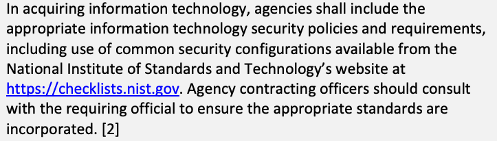
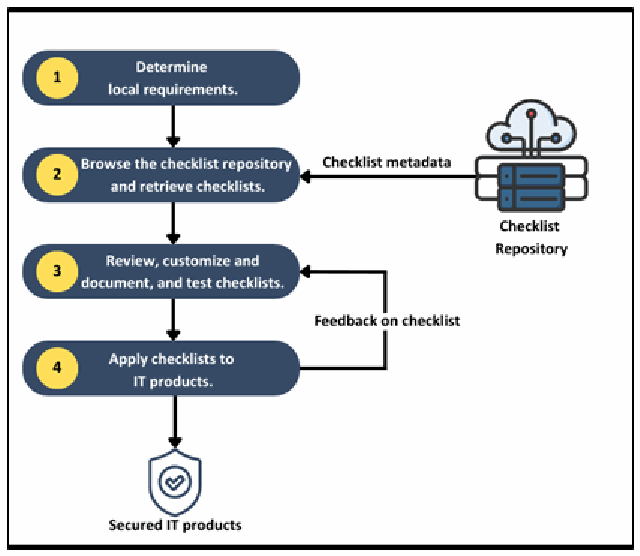
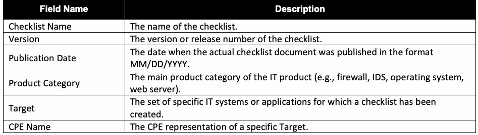
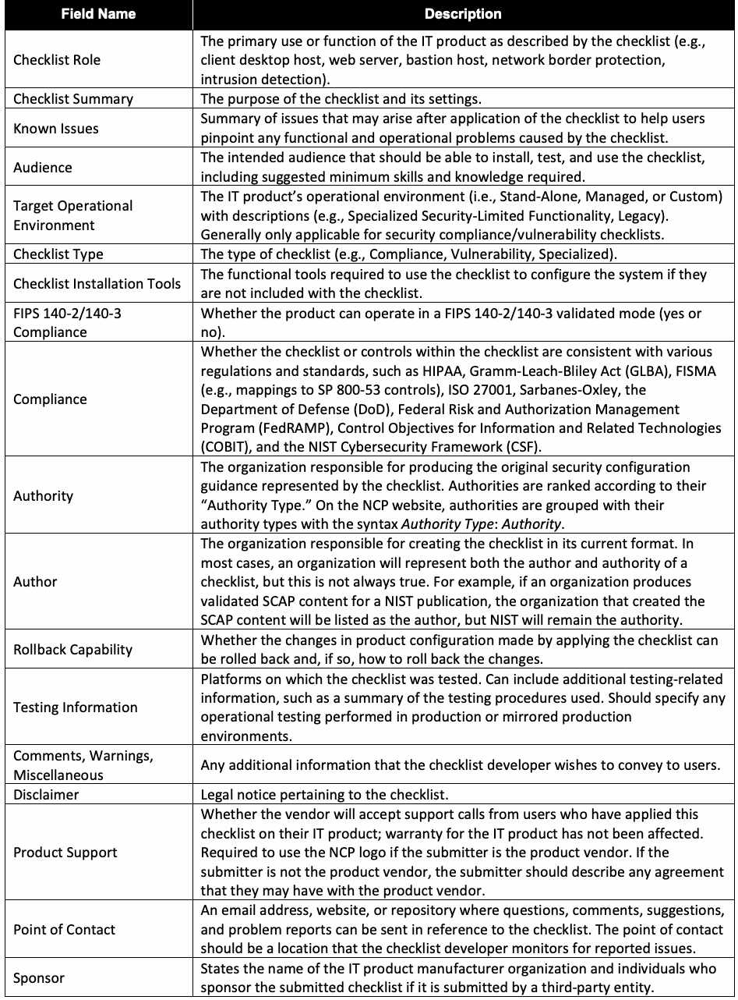
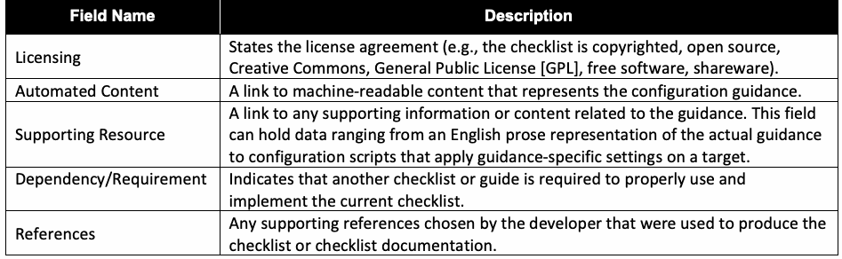

NIST Special Publication · PDF 原文抽出
National Checklist Program for IT Products: Guidelines for Checklist Users and Developers
IT製品向けNIST国家チェックリストプログラム：チェックリスト利用者および開発者向け指針
NIST SP 800-70 Rev. 5（National Checklist Program for IT Products: Guidelines for Checklist Users and Developers）の英文と日本語訳を段落ごとに並べた閲覧用ページです。セキュリティ設定チェックリストの選定、利用、開発、およびNIST National Checklist Programへの参加に関する指針を示します。 翻訳は有志による非公式のもので、NIST および米国商務省が作成・承認・推奨したものではありません。要件の確認にはNIST の正式版 PDFを参照してください。
PDF から抽出した原文は原本との照合待ちです。
本文の数式はLaTeXの構造からKaTeXで表示しています。
NIST Special Publication 800
NIST 特別刊行物 800
未レビュー訳NIST SP 800-70r5
NIST SP 800-70r5
未レビュー訳National Checklist Program
米国チェックリストプログラム（National Checklist Program）
未レビュー訳for IT Products
IT 製品向け
未レビュー訳Guidelines for Checklist Users and Developers
チェックリストの利用者および開発者のためのガイドライン
未レビュー訳Stephen D. Quinn Blair Heiserman
Stephen D. Quinn、Blair Heiserman
未レビュー訳This publication is available free of charge from: https://doi.org/10.6028/NIST.SP.800-70r5
本刊行物は以下より無料で入手可能です：https://doi.org/10.6028/NIST.SP.800-70r5
未レビュー訳NIST Special Publication 800
NIST 特別刊行物 800
未レビュー訳NIST SP 800-70r5
NIST SP 800-70r5
未レビュー訳National Checklist Program
政府チェックリストプログラム
未レビュー訳for IT Products
IT製品向け
未レビュー訳Guidelines for Checklist Users and Developers
チェックリスト利用者および開発者のためのガイドライン
未レビュー訳Stephen D. Quinn Computer Security Division
Stephen D. Quinn、コンピュータセキュリティ部門
未レビュー訳Information Technology Laboratory
情報技術研究所
未レビュー訳Blair Heiserman
Blair Heiserman
未レビュー訳Information Technology Security & Networking Division Office of Information Systems Management
情報技術セキュリティ・ネットワーク部門 情報システム管理部
未レビュー訳This publication is available free of charge from: https://doi.org/10.6028/NIST.SP.800-70r5
本出版物は以下から無料で入手できます: https://doi.org/10.6028/NIST.SP.800-70r5
未レビュー訳May 2026
2026年5月
未レビュー訳［米国商務省の紋章。公的な標章のため、この非公式サイトには掲載していない。原本 PDF を参照。］
U.S. Department of Commerce Howard Lutnick, Secretary
米国商務省 ハワード・ラトニック長官
未レビュー訳National Institute of Standards and Technology
国立標準技術研究所
未レビュー訳Craig Burkhardt, Acting Under Secretary of Commerce for Standards and Technology and Acting NIST Director
クレイグ・バークハート、商務次官（標準・技術担当）代行兼NIST所長代行
未レビュー訳Certain equipment, instruments, software, or materials, commercial or non-commercial, are identified in this paper in order to specify the experimental procedure adequately. Such identification does not imply recommendation or endorsement of any product or service by NIST, nor does it imply that the materials or equipment identified are necessarily the best available for the purpose.
実験手順を適切に規定するため、商用か非商用かを問わず、特定の機器、機器類、ソフトウェア、または材料が本文書において特定されている。このような特定は、NISTによるいかなる製品やサービスの推奨または支持を意味するものではなく、特定された材料や機器がその目的において必ずしも利用可能な最善のものであることを意味するものでもない。
未レビュー訳There may be references in this publication to other publications currently under development by NIST in accordance with its assigned statutory responsibilities. The information in this publication, including concepts and methodologies, may be used by federal agencies even before the completion of such companion publications. Thus, until each publication is completed, current requirements, guidelines, and procedures, where they exist, remain operative. For planning and transition purposes, federal agencies may wish to closely follow the development of these new publications by NIST.
本出版物には、NISTに割り当てられた法定責務に従って現在策定中である他の出版物への参照が含まれている場合がある。本出版物に含まれる情報（概念および方法論を含む）は、そうした関連出版物の完成前であっても連邦機関が使用してよい。したがって、各出版物が完成するまでは、現行の要件、ガイドライン、および手順（存在する場合）が引き続き有効である。計画および移行の目的で、連邦機関はNISTによるこれら新規出版物の策定状況を注意深く追うことを望む場合がある。
Organizations are encouraged to review all draft publications during public comment periods and provide feedback to NIST. Many NIST cybersecurity publications, other than the ones noted above, are available at https://csrc.nist.gov/publications.
組織は、パブリックコメント期間中にすべてのドラフト出版物を確認し、NISTにフィードバックを提供することが推奨される。上記で言及されたもの以外の多くのNISTサイバーセキュリティ関連出版物は、https://csrc.nist.gov/publications で入手可能である。
未レビュー訳Authority This publication has been developed by NIST in accordance with its statutory responsibilities under the Federal Information Security Modernization Act (FISMA) of 2014, 44 U.S.C. § 3551 et seq., Public Law (P.L.) 113-283. NIST is responsible for developing information security standards and guidelines, including minimum requirements for federal information systems, but such standards and guidelines shall not apply to national security systems without the express approval of appropriate federal officials exercising policy authority over such systems. This guideline is consistent with the requirements of the Office of Management and Budget (OMB) Circular A-130.
権限 本出版物は、2014年連邦情報セキュリティ近代化法（FISMA）、合衆国法典第44編第3551条以下、公法（P.L.）113-283に基づく法定責任に従ってNISTにより作成された。NISTは、連邦情報システムの最低要件を含む情報セキュリティ基準およびガイドラインの開発を担当しているが、かかる基準およびガイドラインは、当該システムに対してポリシー権限を行使する適切な連邦政府職員の明示的な承認がない限り、国家安全保障システムには適用されない。本ガイドラインは、行政管理予算局（OMB）Circular A-130の要件に合致している。
Nothing in this publication should be taken to contradict the standards and guidelines made mandatory and binding on federal agencies by the Secretary of Commerce under statutory authority. Nor should these guidelines be interpreted as altering or superseding the existing authorities of the Secretary of Commerce, Director of the OMB, or any other federal official. This publication may be used by nongovernmental organizations on a voluntary basis and is not subject to copyright in the United States. Attribution would, however, be appreciated by NIST.
本出版物のいかなる内容も、商務長官が法定権限に基づき連邦機関に対して義務付けかつ拘束力を持たせた基準およびガイドラインに矛盾するものと受け止められるべきではない。また、これらのガイドラインは、商務長官、OMB長官、またはその他の連邦職員の既存の権限を変更し、またはそれに優先するものとして解釈されるべきでもない。本出版物は、非政府組織が自発的に使用してよく、米国においては著作権の対象外である。ただし、NISTへの帰属表示を行っていただければ幸いである。
NIST Technical Series Policies Copyright, Use, and Licensing Statements NIST Technical Series Publication Identifier Syntax
NIST Technical Series Policies 著作権、使用、およびライセンスに関する声明 NIST Technical Series Publication Identifier Syntax
未レビュー訳Publication History Approved by the NIST Editorial Review Board on 2026-04-23 Supersedes NIST SP 800-70r4 (Feb 2018) https://doi.org/10.6028/NIST.SP.800-70r4
出版履歴 2026年4月23日にNIST編集審査委員会により承認 NIST SP 800-70r4（2018年2月）を差し替え https://doi.org/10.6028/NIST.SP.800-70r4
未レビュー訳How to Cite this NIST Technical Series Publication Quinn SD, Heiserman B.(2026) National Checklist Program for IT Products: Guidelines for Checklist Users and Developers. (National Institute of Standards and Technology, Gaithersburg, MD), NIST Special Publication (SP) NIST SP 800-70r5. https://doi.org/10.6028/NIST.SP.800-70r5
本NISTテクニカルシリーズ出版物の引用方法 Quinn SD, Heiserman B.(2026) National Checklist Program for IT Products: Guidelines for Checklist Users and Developers. (National Institute of Standards and Technology, Gaithersburg, MD), NIST Special Publication (SP) NIST SP 800-70r5. https://doi.org/10.6028/NIST.SP.800-70r5
未レビュー訳Author ORCID iDs Stephen Quinn: 0000-0003-1436-684X Blair Heiserman: 0009-0003-8779-6231
著者ORCID iD Stephen Quinn: 0000-0003-1436-684X Blair Heiserman: 0009-0003-8779-6231
未レビュー訳Contact Information
連絡先情報
未レビュー訳National Institute of Standards and Technology Attn: Computer Security Division, Information Technology Laboratory 100 Bureau Drive (Mail Stop 8930) Gaithersburg, MD 20899-8930 checklists@nist.gov
National Institute of Standards and Technology Attn: Computer Security Division, Information Technology Laboratory 100 Bureau Drive (Mail Stop 8930) Gaithersburg, MD 20899-8930 checklists@nist.gov
未レビュー訳Additional Information Additional information about this publication is available at https://csrc.nist.gov/pubs/sp/800/70/r5/final, including related content, potential updates, and document history.
追加情報 本出版物に関する追加情報（関連コンテンツ、更新の可能性、文書履歴を含む）は、https://csrc.nist.gov/pubs/sp/800/70/r5/final で入手できる。
All comments are subject to release under the Freedom of Information Act (FOIA).
すべてのコメントは、情報公開法（FOIA）に基づいて公開される場合がある。
Abstract
概要
A security configuration checklist is a document that contains instructions, procedures, or machine-readable and executable content to configure an IT product to a specific risk posture for an operational environment, verify that the product has been configured properly, identify unauthorized configuration changes to the product, and/or produce artifacts that show the security posture of the product. Using these checklists can minimize the attack surface, reduce vulnerabilities, lessen the impact of successful attacks, and identify changes that might otherwise go undetected. NIST established the National Checklist Program (NCP) to facilitate the generation of security checklists from authoritative sources, centralize the location of checklists, and make checklists broadly accessible. This publication explains how to use the NCP to find and retrieve checklists and describes the policies, procedures, and general requirements for participation in the NCP.
セキュリティ構成チェックリストとは、IT製品を運用環境における特定のリスク態勢に合わせて構成し、製品が適切に構成されていることを検証し、製品に対する不正な構成変更を特定し、および／または製品のセキュリティ態勢を示す成果物を生成するための指示、手順、または機械可読かつ実行可能なコンテンツを含む文書である。これらのチェックリストを使用することで、攻撃対象領域を最小限に抑え、脆弱性を減らし、攻撃が成功した場合の影響を軽減し、通常であれば検出されない可能性のある変更を特定することができる。NISTは、信頼できる情報源からのセキュリティチェックリストの作成を促進し、チェックリストの所在を一元化し、チェックリストを広く利用できるようにするために、National Checklist Program（NCP）を設立した。本出版物は、NCPを使用してチェックリストを検索および取得する方法を説明し、NCPへの参加に関する方針、手順、および一般的な要件について述べている。
Keywords
キーワード
未レビュー訳benchmark; change detection; checklist; information security; National Checklist Program (NCP); Security Automation; secure configuration; security configuration checklist; Security Content Automation Protocol (SCAP); software configuration; vulnerability.
ベンチマーク; 変更検出; チェックリスト; 情報セキュリティ; National Checklist Program (NCP); セキュリティ自動化; セキュアな構成; セキュリティ構成チェックリスト; Security Content Automation Protocol (SCAP); ソフトウェア構成; 脆弱性。
未レビュー訳Reports on Computer Systems Technology
コンピュータシステム技術に関する報告
The Information Technology Laboratory (ITL) at the National Institute of Standards and Technology (NIST) promotes the U.S. economy and public welfare by providing technical leadership for the Nation’s measurement and standards infrastructure. ITL develops tests, test methods, reference data, proof of concept implementations, and technical analyses to advance the development and productive use of information technology. ITL’s responsibilities include the development of management, administrative, technical, and physical standards and guidelines for the cost-effective security and privacy of other than national security-related information in federal information systems. The Special Publication 800-series reports on ITL’s research, guidelines, and outreach efforts in information system security, and its collaborative activities with industry, government, and academic organizations.
米国国立標準技術研究所（NIST）の情報技術研究所（ITL）は、米国の測定および標準のインフラに対する技術的リーダーシップを提供することにより、米国経済と公共の福祉を推進している。ITLは、情報技術の開発と生産的な利用を促進するため、テスト、テスト方法、参照データ、概念実証実装、および技術分析を開発している。ITLの責任には、連邦情報システムにおける国家安全保障関連以外の情報について、対費用効果の高いセキュリティとプライバシーを実現するための、管理面、運用面、技術面、および物理面の基準とガイドラインの策定が含まれる。Special Publication 800シリーズは、情報システムセキュリティにおけるITLの研究、ガイドライン、アウトリーチ活動、ならびに産業界、政府、学術機関との連携活動について報告するものである。
Document Conventions
文書の表記規則
未レビュー訳This document was created for current and potential checklist developers and users in both the public and private sectors. Checklist developers include IT vendors, consortia, industry, government organizations, and others in the public and private sector. Checklist users include end users, system administrators, and IT managers within government agencies, corporations, small businesses, and other organizations, as well as private citizens.
本書は、官民両セクターにおける現在および将来のチェックリスト開発者ならびに利用者を対象に作成された。チェックリスト開発者には、ITベンダー、コンソーシアム、業界団体、政府機関、および官民両セクターのその他の組織が含まれる。チェックリスト利用者には、政府機関、一般企業、中小企業、その他の組織内のエンドユーザー、システム管理者、IT管理者に加え、一般市民が含まれる。
It is assumed that readers of this document are familiar with general computer security concepts.
本書の読者は、一般的なコンピュータセキュリティの概念を熟知していることを前提としている。
Trademark Information
商標情報
未レビュー訳All names are registered trademarks or trademarks of their respective companies, as denoted in this document.
本書に表示されているとおり、すべての名称は、それぞれの企業の登録商標または商標である。
Patent Disclosure Notice
特許開示に関する告知
未レビュー訳NOTICE: ITL has requested that holders of patent claims whose use may be required for compliance with the guidance or requirements of this publication disclose such patent claims to ITL. However, holders of patents are not obligated to respond to ITL calls for patents and ITL has not undertaken a patent search in order to identify which, if any, patents may apply to this publication.
告知：ITLは、本書のガイダンスまたは要件への準拠に使用が必要となる可能性がある特許クレームの保有者に対し、当該特許クレームをITLに開示するよう要請している。ただし、特許保有者には特許に関するITLの呼びかけに応じる義務はなく、ITLは本書に適用される可能性のある特許（存在する場合）を特定するための特許調査を実施していない。
As of the date of publication and following call(s) for the identification of patent claims whose use may be required for compliance with the guidance or requirements of this publication, no such patent claims have been identified to ITL.
発行日時点で、本書のガイダンスまたは要件への準拠に使用が必要となる可能性がある特許クレームの特定を求めた後、そのような特許クレームはITLに対して特定されていない。
未レビュー訳No representation is made or implied by ITL that licenses are not required to avoid patent infringement in the use of this publication.
本出版物の使用において特許侵害を回避するためにライセンスが不要である旨の表明は、ITLによって明示的にも黙示的にもなされていない。
Table of Contents
目次
Executive Summary — 1
エグゼクティブサマリー — 1
未レビュー訳1. Introduction — 2
1. はじめに — 2
未レビュー訳2. NIST National Checklist Program — 4
2. NIST National Checklist Program — 4
未レビュー訳2.4.1. Mapping and Acquisition Considerations — 7
2.4.1. マッピングおよび調達に関する考慮事項 — 7
未レビュー訳2.4.2. Selecting Checklists — 8
2.4.2. チェックリストの選定 — 8
未レビュー訳2.4.3. Checklist Considerations — 9
2.4.3. チェックリストの考慮事項 — 9
未レビュー訳3. Operational Environments for Checklists — 12
3. チェックリストの運用環境 — 12
未レビュー訳3.3.1. Specialized Security-Limited Functionality Environment — 13
3.3.1. 特化型セキュリティ・制限機能環境 — 13
未レビュー訳3.3.2. Legacy Environment — 14
3.3.2. レガシー環境 — 14
未レビュー訳4. Checklist Usage — 15
4. チェックリストの使用法 — 15
未レビュー訳5. Checklist Development — 23
5. チェックリストの開発 — 23
未レビュー訳References — 30
参考文献 — 30
未レビュー訳Appendix A. Checklist Program Operational Procedures — 31
付録 A. チェックリストプログラムの運用手順 — 31
未レビュー訳Appendix B. Participation and Logo Usage Agreement Form — 37
付録 B. 参加およびロゴ使用許諾書様式 — 37
未レビュー訳Appendix C. Automating NIST CSF 2.0 — 40
付録C. NIST CSF 2.0の自動化 — 40
未レビュー訳Appendix D. List of Symbols, Abbreviations, and Acronyms — 43
付録D. 記号、略語、頭字語の一覧 — 43
未レビュー訳Appendix E. Glossary — 46
付録E. 用語集 — 46
未レビュー訳Appendix F. Change Log — 49
付録F. 変更履歴 — 49
未レビュー訳List of Tables
表の一覧
未レビュー訳Table 1. Checklist description form fields — 25
表1. チェックリスト記述フォーム項目 — 25
未レビュー訳List of Figures
図の一覧
未レビュー訳Fig. 1. Checklist user process overview — 15
図1. チェックリストのユーザープロセスの概要 — 15
未レビュー訳Acknowledgments
謝辞
The authors wish to thank all individuals who have contributed to this and prior revisions of SP 800-70. Specifically, the authors thank the co-authors of the previous revision: Murugiah Souppaya and Melanie Cook, formerly from the National Institute of Standards and Technology (NIST), and Karen Kent of the Trusted Cyber Annex.
著者らは、SP 800-70の本改訂版および過去の改訂版に貢献してくださったすべての個人に感謝の意を表する。特に著者らは、前回の改訂版の共著者である、米国国立標準技術研究所（NIST）の元職員であるMurugiah Souppaya氏およびMelanie Cook氏、そしてTrusted Cyber AnnexのKaren Kent氏に感謝する。
未レビュー訳Key contributors to this revision include Bob Byers, Daniel Eliot, Jim Foti, Bob Gendler, Gopi Katwala, and Isabel Van Wyk from NIST, Karen Kent and Matthew Smith from the Trusted Cyber Annex, Jack Vander Pol and Daniel K. Harris from the Naval Information Warfare Center (NIWC) Atlantic, Greg Witte from Palydin LLC, and Brad Hoehn and Evelyn Petrella from Electrosoft.
本改訂版への主な貢献者には、NISTのBob Byers氏、Daniel Eliot氏、Jim Foti氏、Bob Gendler氏、Gopi Katwala氏、Isabel Van Wyk氏、Trusted Cyber AnnexのKaren Kent氏およびMatthew Smith氏、Naval Information Warfare Center（NIWC）AtlanticのJack Vander Pol氏およびDaniel K. Harris氏、Palydin LLCのGreg Witte氏、ElectrosoftのBrad Hoehn氏およびEvelyn Petrella氏が含まれる。
Executive Summary
エグゼクティブサマリー
未レビュー訳A security configuration checklist (also called a lockdown, hardening guide, or benchmark) is a series of instructions or procedures for securely configuring an IT product to a particular risk tolerance for an operational environment, verifying that the product has been configured properly, and/or identifying unauthorized changes to the product. The checklist may be for a commercial, open-source, or government-off-the-shelf (GOTS) IT product.
セキュリティ構成チェックリスト（ロックダウン、ハードニングガイド、またはベンチマークとも呼ばれる）とは、運用環境における特定のリスク許容度に合わせてIT製品を安全に構成し、製品が適切に構成されていることを検証し、および／または製品に対する不正な変更を特定するための一連の指示または手順である。チェックリストは、商用、オープンソース、または政府調達既製品（GOTS）のIT製品を対象とする場合がある。
Checklists can comprise a mix of templates, automated scripts, patch information, Extensible Markup Language (XML) files, and other procedures. Typically, checklists are created by IT vendors for their own products; however, checklists are also created by other organizations, such as academia, consortia, and government agencies. The use of well-written, standardized checklists can markedly reduce the attack surface and vulnerability exposure of IT products.
チェックリストは、テンプレート、自動化スクリプト、パッチ情報、Extensible Markup Language（XML）ファイル、その他の手順の組み合わせで構成できる。通常、チェックリストはITベンダーが自社製品向けに作成するが、学術界、コンソーシアム、政府機関などの他の組織によっても作成される。適切に記述された標準化されたチェックリストを使用することで、IT製品の攻撃対象領域（アタックサーフェス）および脆弱性への露出を著しく低減できる。
NIST maintains the National Checklist Repository, a publicly available resource of security configuration checklists for IT products. The repository, https://checklists.nist.gov, contains metadata describing each checklist and links to the website where a checklist is hosted. Having a centralized checklist repository makes it easier for organizations to find current, authoritative versions of security checklists and to determine which ones best meet their needs.
NISTは、IT製品向けセキュリティ構成チェックリストの一般公開リソースであるNational Checklist Repository（国家チェックリストリポジトリ）を維持管理している。このリポジトリ（https://checklists.nist.gov）には、各チェックリストを説明するメタデータと、チェックリストがホストされているWebサイトへのリンクが含まれている。一元化されたチェックリストリポジトリがあることで、組織はセキュリティチェックリストの最新かつ信頼できるバージョンを見つけ、どれが自らのニーズに最も適しているかを判断しやすくなる。
This document is intended for users and developers of security configuration. For checklist users, this document makes recommendations on how they should select checklists from the NIST National Checklist Repository, evaluate and test checklists, and apply them to IT products. For checklist developers, this document sets forth the policies, procedures, and general requirements for participation in the NIST National Checklist Program (NCP).
本文書は、セキュリティ構成の利用者および開発者を対象としている。チェックリストの利用者向けに、本文書はNIST National Checklist Repositoryからチェックリストを選択し、評価およびテストし、IT製品に適用する方法についての推奨事項を示す。チェックリストの開発者向けには、本文書はNIST National Checklist Program（NCP）に参加するための方針、手順、および一般的な要件を定める。
Major recommendations made in this document for checklist users and developers include the following:
チェックリストの利用者および作成者に向けて本書で提示されている主な推奨事項には、以下が含まれる。
未レビュー訳•Organizations should apply checklists to operating systems and applications to reduce the number of weaknesses that can be exploited and to lessen the impact of security breaches, if they occur.
•組織は、悪用される可能性のある脆弱性の数を減らし、セキュリティ侵害が発生した場合の影響を軽減するために、オペレーティングシステムやアプリケーションにチェックリストを適用すべきである。
未レビュー訳•When selecting checklists, users should carefully consider each checklist’s degree of automation, source, use of standards, and other relevant characteristics.
•チェックリストを選定する際、利用者は各チェックリストの自動化の度合い、提供元、標準規格の利用、およびその他の関連する特性を慎重に検討すべきである。
•Checklist users should consider their operational environments when selecting checklists and should customize and test checklists in a non-production environment before applying them to production systems.
•チェックリストの利用者は、チェックリストの選定時に自らの運用環境を考慮すべきであり、本番システムに適用する前に非本番環境でチェックリストをカスタマイズしてテストすべきである。
•Checklist creators are encouraged to adopt a “catalog of controls” approach for products to facilitate custom checklist reuse.
•チェックリスト作成者は、カスタムチェックリストの再利用を促進するために、製品に対する「管理策カタログ（catalog of controls）」アプローチを採用することが推奨される。
•IT product vendors are strongly encouraged to develop security configuration checklists for their products and contribute them to the NIST National Checklist Repository.
•IT製品ベンダーは、自社製品用のセキュリティ設定チェックリストを策定し、NISTナショナルチェックリストリポジトリ（National Checklist Repository）に提供することが強く推奨される。
•Checklists should be incorporated into continuous monitoring and configuration results and deviation monitoring used in automated data feeds for near real-time posture checks.
•チェックリストは、継続的モニタリング、ならびに準リアルタイムのポスチャチェックのための自動データフィードで使用される設定結果および逸脱のモニタリングに組み込まれるべきである。
1. Introduction
1. はじめに
There are many threats to users’ computers, and new vulnerabilities in IT products (e.g., operating systems, applications) are discovered daily. Patches may not be immediately available for new vulnerabilities, causing the need to rapidly deploy temporary mitigations through product reconfiguration until patches are available. Moreover, restrictive security settings in IT products may be disabled by default to ensure maximum functionality and interoperability for a wide variety of users, which means that many IT products may be immediately vulnerable in their default configuration. It is a complicated, arduous, and time-consuming task to define a reasonable set of security settings for IT products, even for experienced system administrators.
ユーザーのコンピュータに対する脅威は数多く存在し、IT製品（例：オペレーティングシステム、アプリケーション）における新たな脆弱性が日々発見されている。新たな脆弱性に対してパッチが直ちに利用可能とはならない場合があり、パッチが利用可能になるまで製品の再設定を通じて一時的な緩和策を迅速に展開する必要性が生じる。さらに、多種多様なユーザーに対して最大限の機能性と相互運用性を確保するために、IT製品における制限的なセキュリティ設定がデフォルトで無効化されている場合があり、これは多くのIT製品がデフォルト設定のままでは即座に脆弱な状態になり得ることを意味する。経験豊富なシステム管理者であっても、IT製品に対して妥当なセキュリティ設定のセットを定義することは、複雑で困難であり、時間のかかる作業である。
未レビュー訳One simple yet effective tool is the security configuration checklist (also called a lockdown, hardening guide, or benchmark). NIST developed the National Checklist Program (NCP) for IT products to facilitate the development of security configuration checklists and meet the requirements of the Cyber Security Research and Development Act of 2002 (Public Law 107-
シンプルでありながら効果的なツールの1つが、セキュリティ構成チェックリスト（ロックダウン、ハーデニングガイド、またはベンチマークとも呼ばれる）である。NISTは、セキュリティ構成チェックリストの開発を促進し、次の法律の要件を満たすためにIT製品向けのNational Checklist Program（NCP）を策定した：2002年サイバーセキュリティ研究開発法 (Public Law 107-
未レビュー訳305) (CSRDA) [1].
305) (CSRDA) [1].
未レビュー訳There is no checklist that can make a system or product completely secure, and using a checklist does not eliminate the need for ongoing security maintenance, such as patch installation. However, using a checklist that emphasizes hardening systems against software flaws (e.g., by applying patches and eliminating unnecessary functionality) and securely configuring systems will typically reduce the number of ways in which the systems can be attacked, resulting in greater levels of product security and protection from future threats. Organizations should use a risk-based approach, and checklists should be tailored by each organization to meet its particular security and operational requirements.
システムや製品を完全に安全にできるチェックリストは存在せず、チェックリストを使用したとしてもパッチの適用などの継続的なセキュリティ保守の必要性がなくなるわけではない。しかし、ソフトウェアの欠陥に対するシステムの堅牢化（例：パッチの適用や不要な機能の排除）およびシステムの安全な構成を重視したチェックリストを使用することで、通常はシステムが攻撃され得る手段の数が減少し、結果として製品のセキュリティレベルの向上や将来の脅威からの保護につながる。組織はリスクベースのアプローチを採用すべきであり、チェックリストは各組織の特定のセキュリティおよび運用上の要件を満たすように調整されるべきである。
未レビュー訳1.1. Purpose and Scope
1.1. 目的と適用範囲
This document describes the use, benefits, and management of checklists and checklist control catalogs as well as the policies, procedures, and general requirements for participation in the
本文書では、チェックリストおよびチェックリストコントロールカタログの使用、利点、管理について説明するとともに、下記への参加に関するポリシー、手順、および一般的な要件について説明している：
未レビュー訳NCP.
NCP.
未レビュー訳1.2. Document Organization
1.2. 本文書の構成
Section 2 provides an overview of checklists and the advantages of the NCP.
第2節では、チェックリストの概要およびNCPの利点について説明する。
Section 3 provides additional details on predefined checklist operational environments that are used in the NCP to help developers create checklists that are consistent with security practices. The material presented in Sec. 3 can also help checklist users select the checklists that best match their own operational environments.
第3節では、開発者がセキュリティプラクティスに沿ったチェックリストを作成するのを支援するためにNCPで使用される、事前定義されたチェックリスト運用環境に関する追加の詳細を提供する。第3節で提示される資料は、チェックリストの利用者が自身の運用環境に最も適合するチェックリストを選択するのにも役立つ。
Section 4 contains information for potential checklist users. It describes how to use the NCP to find and retrieve checklists that best match their identified needs. It also provides guidance on how to implement checklists, including how to analyze the specific operating environment and then tailor checklists as applicable.
第4節には、潜在的なチェックリスト利用者向けの情報が含まれている。特定されたニーズに最も適合するチェックリストを検索および取得するためにNCPを使用する方法について説明している。また、特定の運用環境を分析し、必要に応じてチェックリストをカスタマイズする方法など、チェックリストを実装する方法に関するガイダンスも提供する。
Section 5 provides guidance for current and prospective checklist developers, including procedures for preparing and submitting a checklist to NIST for inclusion in the checklist repository.
第5節では、チェックリストリポジトリへの登録のためにチェックリストを準備しNISTに提出する手順を含め、現在および将来のチェックリスト開発者向けのガイダンスを提供する。
The References section lists the documents cited throughout this document.
参考文献（References）の節には、本文書全体で引用されている文書が一覧表示されている。
Appendix A describes the programmatic and legal requirements that must be satisfied to participate in the NCP.
付録Aでは、NCPに参加するために満たさなければならないプログラム上および法的な要件について説明する。
未レビュー訳Appendix B provides the NCP participation and logo usage agreement form.
付録Bでは、NCP参加およびロゴ使用許諾契約書の書式を提供する。
Appendix C contains steps for automating the NIST Cybersecurity Framework with checklists.
付録Cには、チェックリストを用いてNISTサイバーセキュリティフレームワークを自動化するための手順が含まれている。
未レビュー訳Appendix D lists the acronyms used in this document.
付録Dには、本文書で使用されている頭字語の一覧が記載されている。
Appendix E presents a glossary of the terms used in this document.
付録Eには、本文書で使用されている用語の用語集が示されている。
Appendix F provides a log of changes made since the last version of this document was published.
付録Fには、本文書の直前の版が公開されてから行われた変更のログが記載されている。
2. NIST National Checklist Program
2. NIST National Checklist Program
This section provides an overview of the NCP and the contents of security configuration checklists, which improve the base level of security for an organization.
本節では、NCPの概要と、組織のセキュリティの基本レベルを向上させるセキュリティ構成チェックリストの内容について説明する。
2.1. Overview of the NCP
2.1. NCPの概要
Organizational checklists can vary widely in terms of purpose, quality, usability, and the level of security they provide. They may also become outdated as software updates and upgrades are released. Without a central checklist repository, finding security checklists can be difficult. NIST established the NCP to facilitate the development of security checklists for IT products and to make checklists more organized and usable. The NCP’s broad goals are to:
組織のチェックリストは、目的、品質、使いやすさ、およびそれらが提供するセキュリティのレベルに関して大きく異なる場合がある。また、ソフトウェアのアップデートやアップグレードがリリースされるにつれて、陳腐化する可能性もある。中央のチェックリストリポジトリがなければ、セキュリティチェックリストを見つけることは困難になる場合がある。NISTは、IT製品のセキュリティチェックリストの開発を促進し、チェックリストをより整理されて使いやすいものにするためにNCPを設立した。NCPの大まかな目標は以下のとおりである。
未レビュー訳•Facilitate the development and sharing of checklists by providing a formal framework for vendors and other checklist developers to submit checklists to NIST
•ベンダーや他のチェックリスト開発者がNISTにチェックリストを提出するための正式なフレームワークを提供することにより、チェックリストの開発と共有を促進すること
•Provide guidance to developers to help them create standardized, high-quality checklists that conform to common operational environments
•共通の運用環境に準拠した、標準化された高品質なチェックリストの作成を支援するため、開発者にガイダンスを提供する
•Help developers and users by providing guidelines for documentation and usability
•ドキュメント化およびユーザビリティに関するガイドラインを提供することで、開発者とユーザーを支援する
•Encourage software vendors and other parties to develop checklists
•ソフトウェアベンダーおよびその他の関係者によるチェックリストの開発を促進する
•Provide a managed process for reviewing, updating, and maintaining checklists
•チェックリストのレビュー、更新、および維持のための管理されたプロセスを提供する
•Provide an easy-to-use repository of checklist information
•使いやすいチェックリスト情報のリポジトリを提供する
未レビュー訳•Provide checklist content in a standardized format
•標準化された形式でチェックリストのコンテンツを提供する
•Encourage the use of automation technologies for applying checklists.
•チェックリストを適用するための自動化技術の使用を促進する。
未レビュー訳Federal agencies are required to use security configuration checklists from the NCP when available. In January 2017, Part 39 of the Federal Acquisition Regulation (FAR) was updated. Paragraph (c) of section 39.101 states,
連邦機関は、利用可能な場合、NCPのセキュリティ構成チェックリストを使用することが義務付けられている。2017年1月、連邦調達規則（FAR）のパート39が更新された。セクション39.101のパラグラフ(c)には以下のように記載されている。
未レビュー訳原本PDFの抜粋画像

2.2. Security Configuration Checklists
2.2. セキュリティ設定チェックリスト
A security configuration checklist1 (or simply, “checklist”) is a document that contains instructions, procedures, or machine-readable and executable content to configure an IT product to a specific risk posture for an operational environment, verify that the product has been configured properly, identify unauthorized configuration changes to the product, and/or produce artifacts showing the security posture of the product. The IT product may be commercial, open source, government-off-the-shelf (GOTS), or developed in house.
セキュリティ設定チェックリスト1（または単に「チェックリスト」）とは、運用環境に対する特定のリスク体制に合わせてIT製品を設定し、製品が適切に設定されたことを検証し、製品に対する不正な設定変更を特定し、かつ／または製品のセキュリティ体制を示す成果物を生成するための、指示、手順、または機械可読かつ実行可能なコンテンツを含む文書である。そのIT製品は、商用、オープンソース、政府調達標準品（GOTS）、または自組織開発である場合がある。
未レビュー訳Using well-written, standardized configuration checklists can reduce the vulnerability exposure of IT products and help secure systems. Checklists can be developed by IT vendors and other organizations with technical competence in IT product security. A security configuration checklist might include any of the following:
適切に記述され、標準化された設定チェックリストを使用することで、IT製品の脆弱性の露出を低減し、システムのセキュリティ保護を支援できる。チェックリストは、ITベンダーやIT製品セキュリティに関する技術的能力を持つその他の組織によって開発できる。セキュリティ設定チェックリストには、以下のいずれかが含まれる場合がある。
未レビュー訳•Automated content that sets or verifies security-related settings (e.g., executables, scripts, security templates, SCAP XML files)2
•セキュリティ関連の設定を構成または検証する自動化されたコンテンツ（例：実行可能ファイル、スクリプト、セキュリティテンプレート、SCAP XMLファイル）2
未レビュー訳•Documentation that guides the checklist user to manually configure an IT product
•チェックリストの利用者がIT製品を手動で設定できるように案内する文書
•Documents that explain the recommended methods to securely install and configure a device
•デバイスを安全にインストールおよび設定するための推奨方法を説明する文書
未レビュー訳•Rule files that use policy and programmatic documents to define recommended settings for technical controls, such as auditing, authentication mechanisms (e.g., multi-factor authentication, passwords), and firewall security
•監査、認証メカニズム（例：多要素認証、パスワード）、ファイアウォールセキュリティなどの技術的統制に対する推奨設定を定義するために、ポリシー文書やプログラム文書を使用するルールファイル
未レビュー訳Not all instructions in a security configuration checklist need to solely address security settings. Checklists can also include administrative practices, such as enabling energy-saving features or specialized security functions (e.g., looking for indicators of compromised artifacts on a host).
セキュリティ構成チェックリスト内のすべての指示がセキュリティ設定のみに対処する必要があるわけではない。チェックリストには、省エネルギー機能の有効化や特殊なセキュリティ機能（例：ホスト上の侵害されたアーティファクトの痕跡の探索）など、管理上のプラクティスを含めることもできる。
Typically, a checklist is deployed as part of enterprise management to apply settings across all systems. When done manually, a system administrator or end user follows the instructions in the checklist to configure or verify that a product or system has implemented the security controls in the checklist. Through enterprise or local implementation, the system administrator may need to include modifications or deviations to the checklist to ensure that the local security policy enables the risk posture needed for the purpose of the device.
通常、チェックリストはすべてのシステムに設定を適用するためのエンタープライズ管理の一環として導入される。手動で行う場合、システム管理者またはエンドユーザーは、製品またはシステムがチェックリスト内のセキュリティ統制を実装していることを構成または検証するために、チェックリストの指示に従う。エンタープライズまたはローカルでの実装を通じて、システム管理者は、ローカルセキュリティポリシーによってデバイスの目的に必要なリスク体制を確実に実現できるようにするために、チェックリストへの変更または逸脱を含める必要がある場合がある。
未レビュー訳Security checklists are intended for a variety of devices and software, including:
セキュリティチェックリストは、以下を含むさまざまなデバイスやソフトウェアを対象としている：
•General-purpose operating systems and mobile operating systems
•汎用オペレーティングシステムおよびモバイルオペレーティングシステム
未レビュー訳•Common applications, such as email clients, web browsers, word processors, personal firewalls, and antivirus software
•電子メールクライアント、Webブラウザ、ワードプロセッサ、パーソナルファイアウォール、ウイルス対策ソフトウェアなどの一般的なアプリケーション
•Infrastructure devices, such as software-as-a-service (SaaS) providers, infrastructure-as-a-service (IaaS) providers, platform-as-a-service (PaaS) providers, virtualization platforms, routers, switches, firewalls, virtual private network (VPN) gateways, intrusion detection systems (IDSs), wireless access points, and telecommunication systems
•Software-as-a-Service（SaaS）プロバイダー、Infrastructure-as-a-Service（IaaS）プロバイダー、Platform-as-a-Service（PaaS）プロバイダー、仮想化プラットフォーム、ルーター、スイッチ、ファイアウォール、仮想プライベートネットワーク（VPN）ゲートウェイ、侵入検知システム（IDS）、ワイヤレスアクセスポイント、電気通信システムなどのインフラストラクチャデバイス
未レビュー訳•Application servers, such as Domain Name System (DNS), Dynamic Host Configuration Protocol (DHCP), proxy and web servers, Simple Mail Transfer Protocol (SMTP), and database servers
•Domain Name System（DNS）、Dynamic Host Configuration Protocol（DHCP）、プロキシおよびWebサーバー、Simple Mail Transfer Protocol（SMTP）、データベースサーバーなどのアプリケーションサーバー
未レビュー訳•Other network devices, such as Internet of Things (IoT) devices, scanners, printers, and copiers
•モノのインターネット（IoT）デバイス、スキャナー、プリンター、複写機などのその他のネットワークデバイス
未レビュー訳•Artificial intelligence (AI) systems, including hardware and software components comprising the stack
•スタックを構成するハードウェアおよびソフトウェアコンポーネントを含む人工知能（AI）システム
未レビュー訳2.3. Benefits of Using Security Checklists
2.3. セキュリティチェックリストを使用する利点
Security checklists help users configure IT products securely. Many product vendors offer secure default settings, but this practice is not universal. Applying checklists to operating systems and applications can reduce the number of exploitable weaknesses and can lessen the impacts of any attacks that occur. Using checklists improves the consistency and predictability of system security, particularly in conjunction with user training and awareness activities and other supporting security controls. Additional benefits associated with using checklists include:
セキュリティチェックリストは、ユーザーがIT製品を安全に構成するのに役立つ。多くの製品ベンダーが安全なデフォルト設定を提供しているが、この慣行は普遍的なものではない。オペレーティングシステムやアプリケーションにチェックリストを適用することで、悪用可能な弱点の数を減らし、発生する攻撃の影響を軽減することができる。チェックリストの使用は、特にユーザートレーニングや意識向上活動、その他のサポート的なセキュリティ統制と組み合わせることで、システムセキュリティの一貫性と予測可能性を向上させる。チェックリストの使用に関連する追加の利点には、以下のものが含まれる。
未レビュー訳•Providing a base level of security to protect against common local and remote threats (e.g., malware, denial-of-service attacks, unauthorized access, inappropriate usage)
•一般的なローカルおよびリモートの脅威（例：マルウェア、サービス運用妨害攻撃、不正アクセス、不適切な使用）から保護するための基本的なセキュリティレベルを提供すること
•Verifying the configuration of technical security controls specified by the checklist for system assessments (e.g., confirming compliance with certain Federal Information Security Modernization Act [FISMA] requirements) and understanding the exposure caused by misconfigurations
•システム評価のためにチェックリストで指定された技術的セキュリティ管理策の設定を検証すること（例：特定の連邦情報セキュリティ近代化法［FISMA］要件への準拠の確認）、および設定不備によって引き起こされるエクスポージャーを把握すること
•Providing artifacts of compliance from the verified implementation of controls at the endpoint to support a near real-time understanding of technical security posture and risk
•技術的なセキュリティ態勢とリスクのほぼリアルタイムな把握をサポートするために、エンドポイントにおける管理策の検証済み実装からコンプライアンスの成果物を提供すること
•Creating catalogs of product technical controls, which significantly reduces the time required to research and develop appropriate security configurations for installed IT products
•製品の技術的管理策のカタログを作成すること。これにより、導入されたIT製品に対する適切なセキュリティ設定を調査および策定するために必要な時間が大幅に削減される。
•Allowing smaller organizations to implement recommended practice security configurations
•より小規模な組織が推奨プラクティスのセキュリティ構成を実装できるようにすること。
•Reducing the likelihood of public loss of confidence or embarrassment resulting from a compromise of systems (e.g., a major breach of personally identifiable information [PII])
•システムの侵害（例：個人を特定できる情報［PII］の重大な漏洩）に起因する信用の失墜や恥辱が生じる可能性を低減すること。
未レビュー訳Using security checklists for security compliance purposes can significantly improve overall levels of security in organizations, but using a checklist cannot make a system or product completely secure. Using checklists that emphasize the hardening of systems will typically result in greater levels of product security and potential protection from future threats (e.g., zero-day vulnerabilities). The use of checklist-based configuration assessments as part of ongoing security monitoring will support protection and detection outcomes. Automated tools should continuously verify that systems remain in a hardened state and should flag any unauthorized configuration changes. This approach supports a dynamic security posture that is in line with NIST continuous monitoring guidance.3
セキュリティコンプライアンスを目的としてセキュリティチェックリストを使用することは、組織全体のセキュリティレベルを大幅に向上させることができるが、チェックリストを使用するだけでシステムや製品を完全にセキュアにすることはできない。システムの要塞化（ハーデニング）を重視したチェックリストを使用することで、通常、より高いレベルの製品セキュリティと将来の脅威（例：ゼロデイ脆弱性）からの潜在的な保護がもたらされる。継続的なセキュリティモニタリングの一環としてチェックリストベースの構成評価を使用することは、保護および検知の成果を支えることになる。自動化ツールは、システムが要塞化された状態を維持していることを継続的に検証すべきであり、未承認の構成変更をフラグ付けして通知すべきである。このアプローチは、NISTの継続的モニタリングガイダンスに沿った動的なセキュリティポスチャをサポートする。3
未レビュー訳While security configuration checklists may be applied at deployment or during periodic assessments, organizations are encouraged to integrate regular near real-time checklist-based automated verification into continuous monitoring programs wherever feasible. This monitoring should be context-aware to accurately measure risk, allow for actionable remediation, and provide an understanding of risk in the context of the system rather than a flat list of pass/fail items, such as documenting known and approved deviations from checklists. In environments that are characterized by frequent change, the continuous validation of configuration states with context awareness enables the earlier detection of drift, misconfiguration, or exposure.
セキュリティ構成チェックリストは導入時や定期的なアセスメントの際に適用される場合があるが、組織は実現可能な限り、チェックリストに基づく定期的なニアリアルタイムの自動検証を継続的モニタリングプログラムに統合することが推奨される。このモニタリングは、リスクを正確に測定し、実行可能な対処を可能にし、チェックリストからの既知かつ承認済みの逸脱を文書化するなど、合否項目の単なる羅列ではなくシステムのコンテキストにおけるリスクの理解を提供するために、コンテキストを認識するものでなければならない。頻繁な変更を特徴とする環境では、コンテキスト認識を伴う構成状態の継続的な検証により、構成ドリフト、設定不備、またはエクスポージャーの早期検知が可能になる。
未レビュー訳For cloud and hybrid environments, continuous monitoring should correlate checklist violations across the entire cloud stack (e.g., identity, network, data). Full stack continuous monitoring focuses remediation on critical and exploitable attack paths to identify combinations where a misconfiguration or vulnerability represents a direct risk to sensitive data.
クラウド環境およびハイブリッド環境において、継続的モニタリングはクラウドスタック全体（例：ID、ネットワーク、データ）にわたるチェックリスト違反を関連付けるべきである。フルスタックの継続的モニタリングは、設定不備や脆弱性が機密データに対する直接的なリスクとなる組み合わせを特定するために、重大で悪用可能な攻撃パスへの対処に焦点を当てる。
IT vendors that configure their products using checklists that adhere to the FISMA-associated security control requirements4 will provide more consistency in configuration settings within federal agencies. Applying checklists establishes minimum configuration settings, even if the agencies must tailor the checklists for their specific risk tolerances and operational environments.
FISMA関連のセキュリティ統制要件4に準拠したチェックリストを使用して自社製品を構成するITベンダーは、連邦機関内における構成設定の一貫性をより高めることになる。チェックリストを適用することで、各機関が特定の許容リスクや運用環境に合わせてチェックリストを調整（テーラリング）しなければならない場合であっても、最小限の構成設定が確立される。
未レビュー訳2.4. Additional Considerations
2.4. その他の考慮事項
The following subsections provide additional information related to checklist mapping, acquisition decisions and selection.
以下のサブセクションでは、チェックリストのマッピング、調達の意思決定、および選定に関する追加情報を提供する。
未レビュー訳2.4.1. Mapping and Acquisition Considerations
2.4.1. マッピングおよび調達に関する考慮事項
Checklists can verify the configuration state of technical security controls for system assessments, such as confirming compliance with certain FISMA requirements, security frameworks (e.g., the NIST Cybersecurity Framework), and security controls.
チェックリストは、特定のFISMA要件、セキュリティフレームワーク（例：NISTサイバーセキュリティフレームワーク）、およびセキュリティ管理策への準拠確認などのシステムアセスメントにおいて、技術的セキュリティ管理策の設定状態を検証することができる。
未レビュー訳FISMA also requires each federal agency to determine minimally acceptable system configuration requirements and ensure compliance with them [3]. Federal agencies and vendors of products for the Federal Government should create and share checklists using the NCP. To facilitate FISMA compliance checking for federal agencies, NIST encourages checklist developers to map the security controls delineated in NIST Special Publication (SP) 800-53 to IT product technical controls.5
また、FISMAは各連邦機関に対し、最低限許容されるシステム構成要件を決定し、それらへの準拠を確保することを義務付けている [3]。連邦機関および連邦政府向け製品のベンダーは、NCPを使用してチェックリストを作成し、共有すべきである。連邦機関によるFISMA準拠チェックを容易にするため、NISTはチェックリスト開発者に対し、NIST Special Publication（SP）800-53に規定されているセキュリティ管理策をIT製品の技術的管理策にマッピングすることを推奨している。5
未レビュー訳2.4.2. Selecting Checklists
2.4.2. チェックリストの選定
Organizations should consider and prioritize product selection based on the availability of security configuration checklists during their IT product selection processes. Checklists serve as guidance rather than a universal prescription, and organizations are encouraged to tailor checklists to reflect their operational context and risk posture. Any deviation from checklist settings should be thoroughly reviewed for potential risks and accompanied by a documented justification with risk acceptance.
組織は、IT製品の選定プロセスにおいて、セキュリティ構成チェックリストの利用可能性に基づいて製品選定を検討し、優先順位を付けるべきである。チェックリストは普遍的な処方箋ではなくガイダンスとして機能するものであり、組織は運用環境やリスク態勢を反映してチェックリストを調整（テーラリング）することが推奨される。チェックリストの設定からの逸脱は、潜在的なリスクについて徹底的にレビューし、リスク受容を伴う文書化された正当化の根拠を添付するべきである。
NIST recognizes that some checklists are more automated and standards-based than others. For example, non-automated checklists provide prose-based descriptions of how a person can manually alter a product’s configuration, while automated checklists are generally machine-executable. The NIST open-source macOS Security Compliance Project (mSCP)6 is an example of a well-automated checklist package that focuses on standards-based formats to provide security configuration guidance to organizations more quickly and in a machine-readable and executable format. The mSCP continuously curates and updates automated macOS guidance to address the continuous release cycle of the vendor. The latest macOS security baseline content is maintained and updated on the mSCP GitHub page.
NISTは、一部のチェックリストが他のものよりも高度に自動化され、標準に基づいていることを認識している。例えば、自動化されていないチェックリストは、人間が手動で製品の設定を変更する方法を文章ベースで説明するのに対し、自動化されたチェックリストは一般に機械で実行可能である。NISTのオープンソースであるmacOS Security Compliance Project（mSCP）6は、機械可読および実行可能な形式で、より迅速にセキュリティ設定ガイダンスを組織に提供するために標準ベースの形式に重点を置いた、高度に自動化されたチェックリストパッケージの例である。mSCPは、ベンダーの継続的なリリースサイクルに対応するために、自動化されたmacOSガイダンスを継続的に精選および更新している。最新のmacOSセキュリティベースラインのコンテンツは、mSCPのGitHubページで維持および更新されている。
未レビュー訳Checklist developers, like the mSCP program, take a programmatic approach to generating and using security configuration baselines. Projects like these can be used to create customized security baselines of technical security controls by leveraging a library of rules that are each mapped to requirements in one or more existing security standards, regulations, or frameworks. This approach provides versioning, consistency, and the generation of checklists in standardized formats that are either native to the platform or in widely accepted security configuration standard formats. Unifying, standardizing, and updating security guidance is simplified and radically accelerated, even as new features and versions of the operating system or application are introduced.
mSCPプログラムのようなチェックリスト開発者は、セキュリティ構成ベースラインの生成および利用に対してプログラム的なアプローチを採用している。このようなプロジェクトを利用することで、1つ以上の既存のセキュリティ標準、規制、またはフレームワークの要件にそれぞれマッピングされたルールのライブラリを活用し、技術的セキュリティ管理策のカスタマイズされたセキュリティベースラインを作成できる。このアプローチにより、バージョニング、一貫性、ならびにプラットフォーム固有の標準形式または広く受け入れられているセキュリティ設定標準形式でのチェックリストの生成が実現される。オペレーティングシステムやアプリケーションの新機能や新バージョンが導入された場合でも、セキュリティガイダンスの統合、標準化、更新が簡素化され、大幅に加速される。
Not all checklist generation requires this degree of programmatic sophistication. Automated checklists may be a Group Policy Object (GPO), stand-alone Open Vulnerability and Assessment Language (OVAL) file, kickstart script, shell script, or simple utility that assesses the security settings on a system. No matter the format, developers of automated checklists are encouraged to use the constructs that are most germane to the platform being configured, be transparent regarding their methods, and assign Common Configuration Enumeration identifiers (CCEs) (i.e., globally unique identifiers) to their individual configuration settings.7
すべてのチェックリスト生成に、これほどの高度なプログラム的洗練度が求められるわけではない。自動化されたチェックリストは、グループポリシーオブジェクト（GPO）、スタンドアロンのOpen Vulnerability and Assessment Language（OVAL）ファイル、キックスタートスクリプト、シェルスクリプト、またはシステム上のセキュリティ設定を評価するシンプルなユーティリティである場合もある。形式にかかわらず、自動化されたチェックリストの開発者は、設定対象のプラットフォームに最も適した構成要素を使用し、その手法に関して透明性を確保し、個々の設定項目に共通構成識別子（CCE: Common Configuration Enumeration）（すなわちグローバルに一意の識別子）を割り当てることが推奨される。7
未レビュー訳Another example of an automated checklist is one that fully adheres to the Security Content Automation Protocol (SCAP). These checklists are often referred to as SCAP content and include mappings between low-level security settings and high-level security requirements. These checklists have undergone syntactic testing to ensure adherence to the SP 800-126 SCAP specification using the NIST SCAP Content Validation Tool (SCAPVal) located at GitHub -usnistgov/scapval.
自動化されたチェックリストのもう一つの例は、Security Content Automation Protocol（SCAP）に完全に準拠しているものである。これらのチェックリストはSCAPコンテンツと呼ばれることが多く、低レベルのセキュリティ設定と高レベルのセキュリティ要件との間のマッピングが含まれている。これらのチェックリストは、GitHub（usnistgov/scapval）にあるNIST SCAP Content Validation Tool（SCAPVal）を使用して、SP 800-126 SCAP仕様への準拠を確認するための構文テストを受けている。
未レビュー訳Automated checklists o When multiple checklists are available for a particular product, organizations should consider the degree of automation and use of standards for each checklist. Generally, automated checklists can be used more consistently and efficiently than others. There may be other significant differences among checklists; for example, one checklist may include software bundled with an operating system (e.g., web browser, email client), while another addresses the operating system only. Another example is the assumptions on which the checklists are based (e.g., operational environment). A user should identify such differences and determine which checklists seem appropriate and merit further analysis. Checklists can be tailored to suit the risk tolerance of the environment in which they are used.
自動化されたチェックリスト o 特定の製品に対して複数のチェックリストが利用可能な場合、組織は各チェックリストの自動化の度合いと標準の適用について考慮すべきである。一般に、自動化されたチェックリストは他のチェックリストよりも一貫性および効率性を高めて使用できる。チェックリスト間には他にも重大な違いが存在する場合がある。例えば、あるチェックリストにはオペレーティングシステムにバンドルされたソフトウェア（例：ウェブブラウザ、電子メールクライアント）が含まれている一方で、別のチェックリストはオペレーティングシステムのみを対象としていることがある。もう一つの例は、チェックリストの前提条件（例：運用環境）である。利用者はこうした相違点を特定し、どのチェックリストが適切と見込まれ詳細な分析に値するかを判断すべきである。チェックリストは、それらが使用される環境のリスク許容度に合わせて調整することができる。
未レビュー訳Government Checklist Precedence o A checklist’s source is particularly important for users from federal civilian agencies, who should first search for government-authorized or mandated checklists (e.g., mandated by Part 39 of the FAR [2]). In general, these users should search for NIST-produced checklists, which are tailored for civilian agency use. If no NIST-produced checklist is available, then agency-produced checklists from the Defense Information Systems Agency (DISA), the National Security Agency (NSA), or the Cybersecurity and Infrastructure Security Agency (CISA) should be used. If formal government-authorized checklists do not exist, organizations are encouraged to use vendor-produced checklists. If vendor-produced checklists are not available, other checklists that are posted on the NCP website may be used. Although government-sourced checklists generally consider the necessary compliance criteria (e.g., use of FIPS-140 based encryption when encryption is necessary, access control criteria), they may need further tailoring to fit the specific operational and risk-based needs of the environment in which they are used.
政府チェックリストの優先順位 o 連邦文民機関の利用者にとって、チェックリストの提供元は特に重要であり、それらの利用者はまず政府承認または義務付けられたチェックリスト（例：FAR [2] パート39で義務付けられているもの）を探すべきである。一般に、これらの利用者は、文民機関での利用向けに調整されたNIST作成のチェックリストを探すべきである。NIST作成のチェックリストが入手できない場合は、国防情報システム局（DISA）、国家安全保障局（NSA）、またはサイバーセキュリティ・インフラセキュリティ庁（CISA）が作成した機関作成のチェックリストを使用すべきである。正式な政府承認のチェックリストが存在しない場合、組織はベンダー作成のチェックリストを使用することが推奨される。ベンダー作成のチェックリストが入手できない場合は、NCPのウェブサイトに掲載されている他のチェックリストを使用してもよい。政府提供のチェックリストは通常、必要なコンプライアンス基準（例：暗号化が必要な場合のFIPS-140に基づく暗号化の使用、アクセス制御基準）を考慮しているが、それらが使用される環境の具体的な運用上およびリスクに基づくニーズに合わせるために、さらなる調整が必要となる場合がある。
未レビュー訳2.4.3. Checklist Considerations
2.4.3. チェックリストに関する考慮事項
A checklist should be considered a starting point for an organization. Checklists should be customized to match an organization’s risk posture and requirements, including specific deviations with documented justifications, risk acceptance, and compensating controls. Unique factors (e.g., organization-specific requirements, existing security controls) may necessitate changes to an organizational checklist. Organizations should carefully evaluate checklist settings and then make any changes necessary to adapt the settings to the organization’s environment, requirements, policies, risk tolerance, and security objectives. This is particularly true for checklists that are intended for an environment with significantly different security needs. For example, producers of checklists in the military can harmonize on the specific types of hardware and software used in their environment, which can allow for more stringent settings. These security configuration settings generally represent a high-water mark rather than a baseline for civilian agencies attempting to use this guidance. The wholesale adoption of a high-water mark in a civilian environment may lead to unintended consequences, and each setting should be specifically tested and validated before widescale deployment. All deviations from the checklist settings should be documented for future reference and include the reason behind each deviation and the impact of deviating from the setting.
チェックリストは、組織にとっての出発点と見なすべきである。チェックリストは、文書化された正当な理由を伴う具体的な逸脱、リスク受容、および補正策を含め、組織のリスク姿勢や要件に合致するようにカスタマイズされるべきである。固有の要因（例：組織固有の要件、既存のセキュリティ管理策）によって、組織のチェックリストへの変更が必要となる場合がある。組織はチェックリストの設定を慎重に評価し、組織の環境、要件、方針、リスク許容量、およびセキュリティ目標に設定を適合させるために必要な変更を行うべきである。これは、セキュリティニーズが大幅に異なる環境向けのチェックリストに特に当てはまる。例えば、軍のチェックリスト作成者は、自らの環境で使用される特定のハードウェアやソフトウェアの種類を統一することができ、これにより、より厳格な設定が可能となる場合がある。これらのセキュリティ構成設定は通常、このガイダンスを利用しようとする文民機関にとってのベースラインというよりは上限水準（high-water mark）を表している。文民環境において上限水準を一括して採用することは、意図しない結果を招く可能性があり、広範な導入の前に各設定を個別にテストおよび検証すべきである。チェックリストの設定からのすべての逸脱は、将来の参照のために文書化されるべきであり、各逸脱の背後にある理由と、その設定から逸脱することによる影響を含めるべきである。
未レビュー訳All checklists should be tested in non-production environments before use in production environments. Each checklist in the NIST repository has been tested by its developer, but there are often significant differences between a developer’s testing environment and an organization’s operational environment. Security control modification can negatively impact a product’s functionality, usability, and security controls. Testing and documentation can help organizations address significant issues.
すべてのチェックリストは、本番環境で使用する前に非本番環境でテストされるべきである。NISTリポジトリ内の各チェックリストは開発者によってテストされているが、開発者のテスト環境と組織の運用環境との間には、しばしば大きな違いが存在する。セキュリティ管理策の変更は、製品の機能性、ユーザビリティ、およびセキュリティ管理策に悪影響を及ぼす可能性がある。テストと文書化は、組織が重大な問題に対処するのに役立つ。
未レビュー訳Checklists are significantly more useful when they can run in common operational environments. The NCP has identified several broad and specialized operational environments (e.g., Stand-Alone, Managed), and at least one of the environments should be common to most audiences. Thoroughly identifying and describing these environments will make it easier for users to select the security checklists that are most appropriate for their operating environments and enable developers to better target their checklists to the general security characteristics associated with their operating environments.
チェックリストは、一般的な運用環境で実行できる場合に大幅に有用性が高まる。NCPは、いくつかの広範かつ専門化された運用環境（例：スタンドアロン、マネージド）を特定しており、それらの環境の少なくとも1つはほとんどの対象者に共通するはずである。これらの環境を徹底的に特定して記述することで、利用者が自身の運用環境に最も適したセキュリティチェックリストを選択しやすくなり、開発者は自身の運用環境に関連する一般的なセキュリティ特性に合わせてチェックリストをより適切に対象化できるようになる。
Organizations that create content, particularly security baselines, should adopt a risk-based approach for selecting the appropriate settings and defining values that consider the context under which the baseline will be utilized. Checklist content can leverage a library of rules that are each mapped to requirements in one or more existing security standards, regulations, or frameworks to create multiple customized security baselines. This approach provides versioning and consistency of the content. Generally, the technical security settings in products do not drastically change between releases. By pursuing a rules-based approach, rules that remain applicable can be reused and incorporated into guidance for the latest release. This enables quicker adoption of new security features that are not offered in prior versions. Settings that are no longer applicable can be retired by specifying a maximum version.8
コンテンツ、特にセキュリティベースラインを作成する組織は、適切な設定を選択し、ベースラインが利用されるコンテキストを考慮した値を定義するために、リスクベースのアプローチを採用すべきである。チェックリストのコンテンツは、1つ以上の既存のセキュリティ標準、規制、またはフレームワークの要件にそれぞれマッピングされたルールのライブラリを活用して、複数のカスタマイズされたセキュリティベースラインを作成できる。このアプローチにより、コンテンツのバージョニングと一貫性が提供される。一般に、製品の技術的なセキュリティ設定はリリース間で大幅に変更されることはない。ルールベースのアプローチを追求することにより、引き続き適用可能なルールを再利用し、最新リリースのガイダンスに組み込むことができる。これにより、以前のバージョンでは提供されていない新しいセキュリティ機能をより迅速に導入できるようになる。適用されなくなった設定は、最大バージョンを指定することで廃止できる。8
未レビュー訳NIST encourages IT product vendors to develop security configuration checklists for their products, since vendors have the most expertise on possible security configuration settings and their relationships.
ベンダーは可能なセキュリティ構成設定およびそれらの関係について最も多くの専門知識を有しているため、NISTはIT製品ベンダーに対し、自社製品用のセキュリティ構成チェックリストを作成することを推奨している。
未レビュー訳Vendors that create security configuration checklists should submit them for inclusion in the National Checklist Repository through the NCP. The NCP provides a process and guidance for developing checklists in a consistent fashion. For checklist developers, steps include the initial development of the checklist, checklist testing, documenting the checklist according to the guidelines of the NCP, and submitting a checklist package to NIST. NIST then screens the checklist according to program requirements and releases the checklist for a 30-day public review. After the public review period and subsequent resolution of issues, the checklist is listed on the NIST checklist repository with its information. Checklist maintenance may potentially be performed by the vendor, resulting in the release of updated checklists. NIST retires or archives checklists as they become outdated or incorrect.
セキュリティ構成チェックリストを作成するベンダーは、NCPを通じてNational Checklist Repository（国家チェックリストリポジトリ）に登録するためにそれらを提出すべきである。NCPは、一貫した方法でチェックリストを開発するためのプロセスとガイダンスを提供する。チェックリスト開発者の手順には、チェックリストの初期開発、チェックリストのテスト、NCPのガイドラインに従ったチェックリストの文書化、およびNISTへのチェックリストパッケージの提出が含まれる。その後、NISTはプログラム要件に従ってチェックリストを審査し、30日間のパブリックレビューのためにチェックリストを公開する。パブリックレビュー期間とその後の課題解決を経て、チェックリストはその情報とともにNISTチェックリストリポジトリに掲載される。チェックリストの保守はベンダーによって行われる可能性があり、その結果として更新されたチェックリストがリリースされる。NISTは、チェックリストが古くなるか不正確になった場合、廃止またはアーカイブする。
2.5. Types of Checklists Listed by NCP
2.5. NCPによって掲載されるチェックリストの種類
The NCP deals with checklists that are tied to specific IT products, such as a checklist for a specific operating system version. Some checklists may also incorporate the use of other checklists. For example, a checklist for a database product may reference a checklist for the operating system on which the database product runs. The NCP includes two major groups of checklists:
NCPは、特定のオペレーティングシステムのバージョン向けのチェックリストなど、特定のIT製品に関連付けられたチェックリストを扱う。一部のチェックリストには、他のチェックリストの使用が組み込まれている場合もある。例えば、データベース製品向けのチェックリストは、そのデータベース製品が実行されるオペレーティングシステム向けのチェックリストを参照することがある。NCPには、チェックリストの2つの主要なグループが含まれる：
•Automated. An automated checklist is machine-executable and usable by one or more tools that automatically alter or verify settings based on the contents of the checklist. Checklists can be written in product-native scripting languages, such as shell scripts, PowerShell, Group Policy Objects, Jumpstart scripts, XML, and others.
•自動化。自動化されたチェックリストは、機械実行可能であり、チェックリストの内容に基づいて設定を自動的に変更または検証する1つ以上のツールによって使用可能である。チェックリストは、シェルスクリプト、PowerShell、グループポリシーオブジェクト（Group Policy Objects）、Jumpstartスクリプト、XMLなどの製品ネイティブのスクリプト言語で記述できる。
•Non-automated. As the name implies, a non-automated checklist is one that is designed to be used manually, such as prose instructions that describe the steps an administrator should take to secure a system or verify its security settings.
•非自動化。その名称が示すように、非自動化チェックリストは、管理者がシステムを保護したりセキュリティ設定を検証したりするために取るべき手順を説明する散文形式の指示など、手動で使用するように設計されたものである。
未レビュー訳Security configuration checklists in the NCP can help organizations comply with FISMA, which requires federal agencies to determine minimally acceptable system configuration requirements and ensure compliance with them. Checklists can also map specific technical control settings to the corresponding SP 800-53 controls and other existing security standards, regulations, or frameworks, which makes the verification of compliance more consistent and efficient. Federal agencies and vendors of products for the Federal Government are encouraged to develop and share such checklists using the NIST repository. This helps reduce silos of effort to identify sufficiently secure settings for IT products that are widely used in the Federal Government, such as common operating systems, servers, and client applications.
NCPのセキュリティ構成チェックリストは、連邦機関に最低限受け入れ可能なシステム構成要件を決定し、それらへの準拠を確保することを義務付けているFISMAに組織が準拠するのを支援できる。また、チェックリストは、特定の技術的管理策の設定を対応するSP 800-53の管理策やその他の既存のセキュリティ標準、規制、またはフレームワークにマッピングすることもでき、これによりコンプライアンスの検証がより一貫性のある効率的なものになる。連邦機関および連邦政府向け製品のベンダーは、NISTリポジトリを使用してそのようなチェックリストを開発し、共有することが推奨される。これにより、一般的なオペレーティングシステム、サーバー、クライアントアプリケーションなど、連邦政府で広く使用されているIT製品に対して十分に安全な設定を特定するための取り組みのサイロ化を減らすことができる。
The NIST checklist repository (located at https://checklists.nist.gov/) provides information on automated and non-automated checklists that have been developed and screened to meet the requirements of the NCP. The repository hosts copies of checklists, primarily those developed by the Federal Government, and points to other submitted checklist locations. Users can browse checklist descriptions to locate and retrieve a particular checklist using a variety of different fields.
NISTチェックリストリポジトリ（https://checklists.nist.gov/ にある）は、NCPの要件を満たすように開発および審査された自動化および非自動化のチェックリストに関する情報を提供する。このリポジトリは、主に連邦政府によって開発されたチェックリストのコピーをホストし、提出されたその他のチェックリストの場所を示す。ユーザーは、チェックリストの説明を参照して、さまざまなフィールドを使用して特定のチェックリストを見つけ、取得することができる。
Where feasible, security checklists should be provided in automated formats to enable integration into built pipelines, automated compliance scanners, and continuous monitoring data feeds. Using standardized checklists with mappings to security controls shifts security implementation and validation into CI/CD pipelines and enterprise image builds, ensuring that configuration requirements are verified during the development phase. Automated formats provide rapid and repeatable hardening, which prevent misconfigurations from being deployed to production.
実現可能な場合、ビルドパイプライン、自動コンプライアンススキャナー、および継続的モニタリングデータフィードへの統合を可能にするため、セキュリティチェックリストは自動化された形式で提供されるべきである。セキュリティ管理策へのマッピングを備えた標準化されたチェックリストを使用することで、セキュリティの実装と検証がCI/CDパイプラインやエンタープライズイメージのビルドへとシフトし、開発フェーズ中に構成要件が検証されることが保証される。自動化された形式は迅速かつ反復可能な堅牢化を提供し、設定不備が本番環境へデプロイされるのを防ぐ。
3. Operational Environments for Checklists
3. チェックリストの運用環境
To ensure that as many users as possible receive value from checklists, checklist authors should create catalogs of controls from which checklists can be generated for specific operational environments and risk postures. The NCP identifies several broad and specialized operational environments, at least one of which should be common to most audiences. Identifying and describing these environments allows developers to better target their checklists to the general security requirements and risk postures of those environments and allows end users to select the most appropriate checklists.
できるだけ多くのユーザーがチェックリストから価値を得られるようにするため、チェックリスト作成者は、特定の運用環境およびリスク態勢向けのチェックリストを生成できるコントロールのカタログを作成すべきである。NCPはいくつかの広範な運用環境および特殊な運用環境を特定しており、そのうち少なくとも1つはほとんどの対象読者に共通しているはずである。これらの環境を特定し記述することで、開発者はチェックリストをそれらの環境の一般的なセキュリティ要件やリスク態勢により適切に適合させることができ、エンドユーザーは最も適切なチェックリストを選択できるようになる。
未レビュー訳This section describes the operational environments defined for the NCP and the general threat description and fundamental technical security practices for each environment. The two broad operational environments are referred to as Stand-Alone (or small office/home office [SOHO]) and Managed (or Enterprise). Two typical Custom environments that could be subsets of the broader environments are Specialized Security-Limited Functionality (SSLF) and Legacy.
本節では、NCP向けに定義された運用環境、ならびに各環境の一般的な脅威の説明および基本的な技術的セキュリティプラクティスについて説明する。2つの広範な運用環境は、スタンドアロン（またはスモールオフィス／ホームオフィス [SOHO]）および管理対象（またはエンタープライズ）と呼ばれる。広範な環境のサブセットとなり得る2つの典型的なカスタム環境は、特化型セキュリティ・制限付き機能（SSLF）およびレガシーである。
IT product users may find it useful to consult this section of the document when initially identifying their own security requirements and needs (see Sec. 4). Developers may find this section useful when building and tailoring security compliance checklists for diverse products while still adhering to the uniform technical security practices and settings associated with the environments (see Sec. 5). Before submitting a checklist to NIST, developers should ensure that they have the most recent version of this document because updates to the criteria for operational environments may occur periodically. The most recent version is available as a separate file at https://checklists.nist.gov/.9
IT製品のユーザーは、自身のセキュリティ要件やニーズを最初に特定する際、本文書のこのセクションを参照することが有用であると気づく場合がある（Sec. 4を参照）。開発者は、環境に関連付けられた統一的な技術的セキュリティプラクティスや設定を遵守しつつ、多様な製品向けのセキュリティコンプライアンスチェックリストを構築および調整する際に、このセクションが有用であると気づく場合がある（Sec. 5を参照）。運用環境の基準の更新は定期的に発生する可能性があるため、開発者はNISTにチェックリストを提出する前に、本文書の最新バージョンを保持していることを確認すべきである。最新バージョンは、https://checklists.nist.gov/.9 にて別個のファイルとして入手可能である。
未レビュー訳3.1. Stand-Alone Environment
3.1. スタンドアロン環境
The Stand-Alone environment describes individually managed devices (e.g., desktops, laptops, smartphones, tablets). It focuses on functionality and typically has the least automation available to apply baselines, making it the least secure environment given the potential to introduce human error. Stand-Alone checklists should be relatively simple for home users or novice system administrators to understand and implement. They are an entry point to defining a configuration for reuse across a handful of systems and improving from the base vendor security posture.
スタンドアロン環境は、個別に管理されるデバイス（例：デスクトップ、ノートPC、スマートフォン、タブレット）を表す。機能性を重視しており、通常、ベースラインを適用するために利用可能な自動化が最も少なく、人的エラーが持ち込まれる可能性があることから最も安全性の低い環境となる。スタンドアロンチェックリストは、ホームユーザーや初心者のシステム管理者が理解し実装しやすいよう、比較的単純であるべきである。これらは、少数のシステム全体で再利用するための構成を定義し、ベンダー基準のセキュリティ態勢から改善するためのエントリーポイントとなる。
3.2. Managed Environment (Enterprise)
3.2. 管理対象環境（エンタープライズ）
The Managed environment (also referred to as Enterprise) is based on centrally managed IT products and devices (i.e., many devices managed by a single organization), including cloud SaaS providers, IaaS providers, PaaS providers, virtualization platforms, servers, desktops, laptops, smartphones, tablets, and IoT. The Managed environment provides more security but less functionality than the Stand-Alone environment.10 It also tends to implement several layers of defense (e.g., firewalls, endpoint detection and response, automated patch management systems, email protections).
Managed環境（Enterpriseとも呼ばれる）は、クラウドSaaSプロバイダー、IaaSプロバイダー、PaaSプロバイダー、仮想化プラットフォーム、サーバー、デスクトップ、ラップトップ、スマートフォン、タブレット、およびIoTを含む、一元管理されたIT製品およびデバイス（すなわち、単一の組織によって管理される多数のデバイス）に基づいている。Managed環境は、Stand-Alone環境よりも高いセキュリティを提供するが、機能性は低くなる。10 また、複数の防御層（例：ファイアウォール、エンドポイント検出および対応、自動パッチ管理システム、電子メール保護）を実装する傾向がある。
未レビュー訳Managed environments also include cloud-native and managed execution models, such as serverless functions, short-lived containers, AI-specific infrastructure11, and fully managed platform services. In these environments, computing resources may be ephemeral, abstracted from the organization, or replaced automatically without human intervention while remaining centrally administered and subject to organizational security policy. Compliance and security practitioners should account for these characteristics by applying and verifying security configuration settings using cloud-native and agentless methods (e.g., inspection of control-plane configurations and service metadata exposed through provider APIs) rather than relying solely on persistent hosts or installed agents. Automated cloud-native checklists should reflect methodologies that are specific to their environments, such as API-based configuration state verification or CI/CD build pipelines. Managed checklists are intended for advanced end users and system administrators. The nature of a typical Managed environment gives administrators centralized control over settings on devices. Authentication, account, and policy management can be administered centrally to maintain a consistent security posture across an organization.
Managed環境には、サーバーレス関数、短命なコンテナ、AI専用インフラストラクチャ11、フルマネージドプラットフォームサービスなど、クラウドネイティブおよびマネージド実行モデルも含まれる。これらの環境では、コンピューティングリソースは、一元的に管理され組織のセキュリティポリシーの対象であり続ける一方で、一時的であったり、組織から抽象化されていたり、人間の介入なしに自動的に置き換えられたりすることがある。コンプライアンスおよびセキュリティの実務者は、永続的なホストやインストールされたエージェントのみに依存するのではなく、クラウドネイティブかつエージェントレスな手法（例：プロバイダーAPIを介して公開されるコントロールプレーン設定およびサービスメタデータの検査）を使用してセキュリティ構成設定を適用および検証することにより、これらの特性を考慮すべきである。自動化されたクラウドネイティブチェックリストは、APIベースの構成状態検証やCI/CDビルドパイプラインなど、それぞれの環境に固有の方法論を反映すべきである。Managedチェックリストは、高度なエンドユーザーおよびシステム管理者を対象としている。一般的なManaged環境の特性により、管理者はデバイス上の設定を一元的に制御できる。組織全体で一貫したセキュリティ態勢を維持するために、認証、アカウント、およびポリシーの管理を一元的に実施できる。
未レビュー訳3.3. Custom Environments
3.3. カスタム環境
A Custom environment contains systems in which the functionality and degree of security do not fit the other types of environments. There are typically two types: Specialized Security-Limited Functionality (SSLF) and Legacy.
カスタム環境には、機能性およびセキュリティの度合いが他のタイプの環境に適合しないシステムが含まれる。通常、特殊セキュリティ限定機能（Specialized Security-Limited Functionality: SSLF）とレガシー（Legacy）の2つのタイプが存在する。
未レビュー訳3.3.1. Specialized Security-Limited Functionality Environment
3.3.1. 特殊セキュリティ限定機能環境
SSLF is a Custom environment that is highly restrictive, secure, and usually reserved for systems with the highest threats and associated impacts, such as outward-facing web servers, other publicly accessed systems, and firewalls. It also encompasses computers that contain confidential information (e.g., central repository of personnel records, medical records, or financial information) or that perform vital organizational functions (e.g., accounting, payroll processing, air traffic control). These systems might be targeted by third parties for exploitation or by trusted parties inside of the organization. Because systems in an SSLF environment are at high risk of attack and data exposure, security takes precedence over functionality. The system’s data content or mission purpose is of such value that aggressive trade-offs in favor of security outweigh the potential negative consequences to other useful system attributes, such as legacy applications or interoperability with other systems.
SSLFは、極めて制限的かつセキュアなカスタム環境であり、通常、外部向けWebサーバー、その他の一般にアクセスされるシステム、ファイアウォールなど、最も高い脅威とそれに伴う影響を受けるシステムのために確保される。また、機密情報（例：人事記録の中央リポジトリ、医療記録、財務情報）を含むコンピューターや、組織の極めて重要な機能（例：会計、給与計算処理、航空交通管制）を実行するコンピューターも含まれる。これらのシステムは、悪用を目的とする第三者や、組織内の信頼された関係者によって標的にされる可能性がある。SSLF環境のシステムは攻撃やデータ漏洩のリスクが高いため、機能性よりもセキュリティが優先される。そのシステムのデータ内容またはミッションの目的は非常に高い価値を持つため、セキュリティを優先した積極的なトレードオフは、レガシーアプリケーションや他のシステムとの相互運用性など、他の有用なシステム属性に対する潜在的な悪影響を上回る。
An SSLF environment could also be a subset of another environment. For example, three desktops in a Managed environment that hold the organization’s confidential employee data could be thought of as an SSLF environment within a Managed environment. In addition, a laptop used by a mobile worker might be an SSLF environment in a Stand-Alone environment. An SSLF environment might also be a self-contained environment outside of any other environment, such as a government security installation that processes sensitive data.
SSLF環境は、別の環境のサブセットとなることも可能である。例えば、組織の機密従業員データを保持する管理対象（Managed）環境内の3台のデスクトップPCは、管理対象環境内のSSLF環境と見なすことができる。さらに、モバイルワーカーが使用するノートPCは、スタンドアロン（Stand-Alone）環境におけるSSLF環境である可能性がある。SSLF環境は、機密データを処理する政府のセキュリティ施設など、他のいかなる環境の外側にある自己完結型の環境である場合もある。
SSLF checklists are intended for experienced security specialists and system administrators who understand the impact of implementing strict technical security practices. If home users and other users who do not have security expertise attempt to apply SSLF checklists to their systems, they may experience unwanted limitations on system functionality and potentially cause irreparable system damage.
SSLFチェックリストは、厳格な技術的セキュリティプラクティスを導入することによる影響を理解している、経験豊富なセキュリティ専門家やシステム管理者を対象としている。セキュリティの専門知識を持たないホームユーザーやその他のユーザーが自身のシステムにSSLFチェックリストを適用しようとすると、システム機能に予期しない制限が生じたり、回復不可能なシステム障害を潜在的に引き起こしたりする可能性がある。
未レビュー訳3.3.2. Legacy Environment
3.3.2. レガシー環境
未レビュー訳A Legacy environment is another example of a Custom environment and contains older systems or applications that are unable to be secured against modern threats. They often use older, less secure communication mechanisms that cannot be patched but need to be able to communicate with other systems. Non-legacy systems operating in a Legacy environment may need less restrictive security settings so that they can communicate with Legacy systems and applications. They require significant compensating and mitigating controls for ongoing use. Legacy environments may also be subsets of other environments.
レガシー（Legacy）環境は、カスタム環境のもう1つの例であり、現代の脅威に対して保護することができない古いシステムやアプリケーションが含まれる。これらは、パッチを適用できないものの他のシステムと通信する必要がある、より古く安全性の低い通信メカニズムを使用していることが多い。レガシー環境で稼働する非レガシーシステムは、レガシーシステムやレガシーアプリケーションと通信できるように、より制限の緩いセキュリティ設定が必要になる場合がある。これらを継続的に使用するには、大幅な代替管理策および緩和管理策が必要となる。レガシー環境は、他の環境のサブセットである場合もある。
4. Checklist Usage
4. チェックリストの使用
This section describes a high-level process for retrieving and using checklists. Although all checklist users have their own specific requirements, the process described will apply to most situations. This section includes guidance on conducting an initial analysis of local environment threats and risks and lists the potential impacts of such attacks. It also describes a process for selecting and retrieving checklists through the NIST checklist repository and recommends steps for analyzing, tailoring, and applying the checklist. Fig. 1 shows the general process for using checklists.
本セクションでは、チェックリストを取得して使用するための高レベルのプロセスについて説明する。すべてのチェックリストユーザーには独自の特定の要件があるが、説明されているプロセスはほとんどの状況に適用される。本セクションには、ローカル環境の脅威とリスクに関する初期分析の実施に関するガイダンスが含まれ、そのような攻撃の潜在的な影響が一覧表示されている。また、NISTチェックリストリポジトリを通じてチェックリストを選択および取得するためのプロセスについて説明し、チェックリストの分析、調整、適用のための推奨される手順を提示している。Fig. 1は、チェックリストを使用するための一般的なプロセスを示している。
未レビュー訳
1. ローカル要件を決定する。 2. チェックリストリポジトリを参照し、チェックリストを取得する。（リポジトリからチェックリストのメタデータを取得する。） 3. チェックリストをレビューし、カスタマイズ、文書化、テストする。 4. チェックリストをIT製品に適用する。（チェックリストへのフィードバックは手順3に戻る。）→ 保護されたIT製品
Fig. 1. Checklist user process overview
Fig. 1. チェックリストユーザープロセスの概要
未レビュー訳The general steps involved in acquiring and using checklists are:
チェックリストの取得および使用に関わる一般的な手順は、以下のとおりである。
1.Users gather their local requirements (e.g., IT products, the operating environment, associated security needs) and then acquire or purchase the IT product that best suits their needs.
1.ユーザーはローカルな要件（例：IT製品、運用環境、関連するセキュリティニーズ）を収集し、ニーズに最も適したIT製品を取得または購入する。
2.Users browse the checklist repository to retrieve checklists that match their operational environment and security requirements. If a product is intended to be secure by default, it is still important to check the NIST checklist repository for updates to that checklist.
2.ユーザーはチェックリストリポジトリを閲覧し、自らの運用環境およびセキュリティ要件に合致するチェックリストを検索・取得する。製品がデフォルトで安全であることを意図している場合でも、そのチェックリストの更新がないかNISTチェックリストリポジトリを確認することが重要である。
3.Users review the checklists and select one that best meets their requirements. They then tailor and document the checklist as necessary to consider local policies and functional requirements, test the checklist on a non-production system, and provide feedback to NIST and checklist developers.
3.ユーザーはチェックリストをレビューし、要件を最もよく満たすものを1つ選択する。その後、ローカルのポリシーや機能要件を考慮するために必要に応じてチェックリストを調整（テーラリング）および文書化し、非本番環境のシステムでチェックリストをテストし、NISTおよびチェックリスト開発者にフィードバックを提供する。
4.Users prepare to deploy the checklist (e.g., make configuration or data backups) and then apply the checklist in production.
4.ユーザーはチェックリストの展開準備を行い（例：設定やデータのバックアップ作成）、本番環境にチェックリストを適用する。
The following sections detail the activities included in each of these steps.
以下のセクションでは、これらの各手順に含まれるアクティビティについて詳述する。
4.1. Determining Local Requirements
4.1. ローカル要件の決定
Organizations usually conduct a requirements analysis before selecting and purchasing a particular IT product. Such an analysis would include identifying the needs of the organization (i.e., what the product must do) and the security requirements for the product (e.g., relevant security policies or regulations). It is best to assess requirements early in the process of incorporating security into IT operations, regardless of size.
組織は通常、特定のIT製品を選択・購入する前に要件分析を実施する。このような分析には、組織のニーズ（すなわち製品が何をしなければならないか）および製品に対するセキュリティ要件（例：関連するセキュリティポリシーや規制）の特定が含まれる。規模にかかわらず、IT運用にセキュリティを組み込むプロセスの初期段階で要件を評価することが最善である。
When planning security, it is essential to first define the threats that must be mitigated. Organizations that use checklists should conduct risk assessments to identify the specific threats against their systems, determine the effectiveness of existing security controls in counteracting those threats, and perform risk mitigation to decide whether any additional measures should be implemented, as discussed in SP 800-37r2 [4]. Performing risk assessments and mitigation helps organizations better understand their needs and decide whether they need to modify or enhance selected checklists. Tailoring for specific users or devices may be required to facilitate work across the organization, such as different settings for developers, kiosks, and specialty devices.
セキュリティを計画する際には、まず緩和すべき脅威を定義することが不可欠である。チェックリストを使用する組織は、SP 800-37r2 [4] で論じられているように、自組織のシステムに対する特定の脅威を特定し、それらの脅威に対抗する既存のセキュリティ管理策の有効性を判断し、追加の対策を実施すべきかどうかを決定するためにリスク評価を実施し、リスク緩和を行うべきである。リスク評価と緩和を実施することで、組織は自らのニーズをより深く理解し、選択したチェックリストを変更または拡張する必要があるかどうかを判断するのに役立つ。組織全体の業務を円滑にするために、開発者、キオスク端末、専用デバイス向けに異なる設定を行うなど、特定のユーザーやデバイスに応じた調整が必要になる場合がある。
未レビュー訳The risk mitigation methodology includes the following simple steps:
リスク緩和方法論には、以下の簡単なステップが含まれる。
•Identify functional needs. What must the product do? Identifying the end user’s requirements (e.g., remote access for telecommuters, a web server to make internal information available to employees) is necessary to ensure that the security solution and controls allow the system to meet its functional requirements.
•機能的ニーズの特定。製品は何を行わなければならないか。エンドユーザーの要件（例：テレワーカー向けのリモートアクセス、従業員が内部情報を利用できるようにするためのWebサーバー）を特定することは、セキュリティソリューションおよび管理策によってシステムがその機能要件を満たせるようにするために必要である。
•Identify threats and vulnerabilities. A threat is the potential for a particular threat source to successfully exploit an information system vulnerability. A vulnerability is a weakness that can be intentionally exploited or accidentally triggered. The goal of this step is to identify potential threat sources that are applicable to the IT product or system as well as vulnerabilities that could be exploited by the potential threat sources.
•脅威および脆弱性の特定。脅威とは、特定の脅威源が情報システムの脆弱性を悪用することに成功する潜在的可能性である。脆弱性とは、意図的に悪用されたり、偶発的に引き起こされたりする可能性のある弱点である。このステップの目的は、IT製品またはシステムに該当する潜在的な脅威源と、その潜在的な脅威源によって悪用される可能性のある脆弱性の両方を特定することである。
•Identify security needs. The goal of this step is to determine the controls needed to minimize or eliminate the likelihood (or probability) of a threat exploiting a product or system vulnerability. It answers the question, “What security features must the product provide?” Armed with this information, the organization can make wiser choices about which IT product best meets its needs.
•セキュリティニーズの特定。このステップの目的は、脅威が製品またはシステムの脆弱性を悪用する可能性（または確率）を最小限に抑える、または排除するために必要な管理策を決定することである。これは、「製品はどのようなセキュリティ機能を提供しなければならないか」という問いに答えるものである。この情報を備えることで、組織はどのIT製品が自らのニーズに最も適合するかについて、より賢明な選択を行うことができる。
NIST has written several documents and guides to help federal agencies select, acquire, and use information security products. The National Vulnerability Database (NVD) is an application of the Cybersecurity and Privacy Platform (CPP) that provides a search engine for identified application, system, and vendor vulnerabilities and information on patches or fixes that are available to correct the vulnerabilities. It is available at https://nvd.nist.gov.
NISTは、連邦機関が情報セキュリティ製品を選択、取得、使用するのを支援するために、いくつかの文書およびガイドを作成している。National Vulnerability Database（NVD）は、Cybersecurity and Privacy Platform（CPP）のアプリケーションであり、特定されたアプリケーション、システム、ベンダーの脆弱性に関する検索エンジンと、その脆弱性を修正するために利用可能なパッチまたは修正に関する情報を提供する。これは https://nvd.nist.gov で利用可能である。
未レビュー訳4.2. Browsing and Retrieving Checklists
4.2. チェックリストの閲覧および取得
After determining local requirements and identifying an IT product, a checklist user is ready to browse the NIST checklist repository. The checklists are categorized by content type (i.e., degree of automation and standardization) and authority (i.e., the organization responsible for producing the original security configuration guidance represented by the checklist). Users can browse the checklists based on the content type, IT product, or authority and through a keyword search of the checklist name and summary for user-specified terms. The search results show the detailed checklist information and link to content and any supporting resources associated with the checklist. Selecting a particular checklist will show a description template that includes extensive information to help users decide whether the checklist will suit their specific purposes.
ローカル要件を決定し、IT製品を特定した後、チェックリストユーザーはNISTチェックリストリポジトリを閲覧する準備が整う。チェックリストは、コンテンツタイプ（すなわち、自動化と標準化の度合い）およびオーソリティ（すなわち、チェックリストによって表される元のセキュリティ構成ガイダンスを作成する責任を負う組織）によって分類されている。ユーザーは、コンテンツタイプ、IT製品、またはオーソリティに基づいて、またユーザーが指定した用語でチェックリスト名およびサマリーのキーワード検索を行うことで、チェックリストを閲覧できる。検索結果には詳細なチェックリスト情報が表示され、コンテンツおよびチェックリストに関連するあらゆるサポートリソースへのリンクが示される。特定のチェックリストを選択すると、ユーザーがそのチェックリストが特定の目的に適しているかどうかを判断するのに役立つ広範な情報を含む説明テンプレートが表示される。
Some checklists address more than one application or operating system, such as several products from a single organization. To help users navigate the site from the checklist detail page, there is a Checklist Group link that represents the grouping of checklists based on a common source material. For example, the Defense Information Systems Agency (DISA) Office 365 Checklist contains configuration settings for multiple products, including desktop publishing and email applications. The NCP decomposes the checklist information according to these individual targets but keeps them conveniently linked to the same source document via the Checklist Group.
一部のチェックリストは、単一組織の複数の製品など、複数のアプリケーションまたはオペレーティングシステムを対象としている。利用者がチェックリスト詳細ページからサイト内をナビゲートするのを支援するために、共通の出典資料に基づくチェックリストのグループ化を表すChecklist Groupリンクが用意されている。例えば、国防情報システム局（DISA）のOffice 365チェックリストには、デスクトップパブリッシングや電子メールアプリケーションを含む複数製品の構成設定が含まれている。NCPは、これらの個々の対象に応じてチェックリスト情報を分解するが、Checklist Groupを介して同一の出典ドキュメントに便利にリンクされた状態を維持する。
In some cases, multiple checklists are available for a particular version of a product. Such checklists are often similar, but they have important differences, such as the degree of automation provided, the intended audience (e.g., providing general recommendations versus complying with federal agency-specific requirements), and the checklist purpose (e.g., reconfiguring a product versus identifying a successful compromise of the product). To help users identify major differences among checklists, NIST has categorized checklists by content type, such as:
場合によっては、製品の特定のバージョンに対して複数のチェックリストが利用可能なことがある。このようなチェックリストは類似していることが多いものの、提供される自動化の度合い、想定される対象読者（例：一般的な推奨事項の提示か、連邦機関固有の要件への準拠か）、チェックリストの目的（例：製品の再構成か、製品の侵害成功の特定か）など、重要な相違点がある。利用者がチェックリスト間の主要な相違点を識別できるように、NISTは以下のようなコンテンツタイプ別にチェックリストを分類している：
未レビュー訳•Prose. Prose checklists provide narrative descriptions of how a person can manually alter a product’s configuration.
•文章形式。文章形式のチェックリストは、人が製品の構成を手動で変更する方法についての記述的な説明を提供する。
未レビュー訳•Automated. Automated checklists document their security settings in a standard or proprietary machine-readable format, such as shell scripts, Group Policy Objects (GPOs), SCAP content, kickstart files, .inf files, executables, and XCCDF files.
•自動化形式。自動化されたチェックリストは、シェルスクリプト、グループポリシーオブジェクト（GPOs）、SCAPコンテンツ、キックスタートファイル、.infファイル、実行可能ファイル、XCCDFファイルなど、標準または独自の機械可読形式でセキュリティ設定を記述する。
SCAP is a standards-based example of an automated checklist. SCAP checklists adhere to the SCAP specification detailed in SP 800-126 for documenting security settings in machine-readable standardized SCAP formats. SCAP content that is available on the National Checklist Program repository has been evaluated with the NIST SCAP Content Validation Tool (SCAPVal).12 This evaluation ensures that the checklist conforms to the SCAP specification. The SCAPVal tool does not evaluate the checklist for logic errors, such as the use of an “equal to” operator when “equal to or greater than” should have been used.
SCAPは、標準に基づく自動化チェックリストの例である。SCAPチェックリストは、機械可読な標準化されたSCAP形式でセキュリティ設定を記述するために、SP 800-126で詳述されているSCAP仕様に準拠している。National Checklist Programリポジトリで利用可能なSCAPコンテンツは、NIST SCAP Content Validation Tool（SCAPVal）で評価されている。12 この評価により、チェックリストがSCAP仕様に適合していることが保証される。SCAPValツールは、「equal to or greater than」を使用すべき箇所で「equal to」演算子を使用しているといった論理エラーについては、チェックリストを評価しない。
未レビュー訳An example of a comprehensive checklist-generating package is the mSCP content hosted on the NIST NCP, which uses a catalog of controls approach to checklist generation. This approach is used by the mSCP to curate a library of rules with each rule mapped to requirements in one or more existing security standards, regulations, or frameworks. The rule library can be used to create multiple customized security baselines by leveraging the technical security controls and settings that do not drastically change from release to release. By pursuing a rules-based approach, rules that remain applicable can be reused and incorporated into guidance for the newest product version. This enables quicker adoption of new security features that are not offered in prior versions. mSCP allows a user to create a checklist in various machine-readable formats, including shell scripts and SCAP based on the policies and requirements selected.
包括的なチェックリスト生成パッケージの一例として、NIST NCPでホストされているmSCPコンテンツがあり、これはチェックリスト生成に管理策カタログアプローチを採用している。このアプローチは、mSCPによってルールライブラリを整備するために使用されており、各ルールは1つ以上の既存のセキュリティ標準、規制、またはフレームワークの要件にマッピングされている。このルールライブラリは、リリース間で大幅に変更されない技術的セキュリティ管理策および設定を活用することにより、カスタマイズされた複数のセキュリティベースラインを作成するために使用できる。ルールベースのアプローチを採用することで、引き続き適用可能なルールを再利用し、最新の製品バージョンのガイダンスに組み込むことができる。これにより、以前のバージョンでは提供されていなかった新しいセキュリティ機能をより迅速に導入できるようになる。mSCPを使用すると、利用者は選択したポリシーおよび要件に基づいて、シェルスクリプトやSCAPを含む様々な機械可読形式でチェックリストを作成できる。
未レビュー訳When multiple checklists are available for a particular product, organizations should consider the degree of automation and standards in each checklist. Generally, automated checklists or checklists generated from a technical rules library can be used more consistently and efficiently than others. There may be other significant differences among checklists. For example, one checklist may include software bundled with an operating system (e.g., web browser and email client), while another checklist addresses that operating system only. Another example is the assumptions on which the checklists are based (e.g., operational environment and risk tolerance). A checklist user should identify such differences and determine which checklists seem appropriate and merit further analysis. Checklists should also be evaluated as a starting point for tailoring to match their operating environment and risk tolerance (e.g., a civilian government baseline versus a military baseline).
特定の製品に対して複数のチェックリストが利用可能な場合、組織は各チェックリストにおける自動化の度合いや標準規格を考慮すべきである。一般に、自動化されたチェックリストや技術ルールライブラリから生成されたチェックリストは、他のチェックリストよりも一貫性を持って効率的に使用できる。チェックリスト間には、他にも重要な相違点が存在する場合がある。例えば、あるチェックリストにはオペレーティングシステムにバンドルされているソフトウェア（例：ウェブブラウザや電子メールクライアント）が含まれている一方で、別のチェックリストはそのオペレーティングシステムのみを対象としている場合がある。別の例としては、チェックリストの根拠となっている前提条件（例：運用環境やリスク許容度）が挙げられる。チェックリストの利用者は、このような相違点を特定し、どのチェックリストが適切と思われ、さらなる分析に値するかを判断すべきである。また、チェックリストは、自らの運用環境やリスク許容度に適合させるためのテーラリング（調整）の出発点としても評価されるべきである（例：文民政府機関のベースラインと軍のベースラインの対比など）。
未レビュー訳Users from federal civilian agencies should first search for government-authorized or mandated checklists, such as NIST-produced checklists that are tailored for civilian agencies. If no NIST-produced checklist is available, then agency-produced checklists from DISA, the National Security Agency (NSA), or CISA should be used, if available. If formal government-authorized checklists do not exist, organizations are encouraged to use vendor-produced checklists. If vendor-produced checklists are not available, other checklists that are posted on the NCP website may be used.
連邦政府の文民機関の利用者は、まず政府によって承認または義務付けられたチェックリスト（文民機関向けに調整されたNIST作成のチェックリストなど）を検索すべきである。NIST作成のチェックリストが利用できない場合は、利用可能であれば、DISA、国家安全保障局（NSA）、またはCISAが作成した機関作成のチェックリストを使用すべきである。正式な政府承認のチェックリストが存在しない場合、組織はベンダー作成のチェックリストを使用することが推奨される。ベンダー作成のチェックリストが利用できない場合は、NCPのウェブサイトに掲載されているその他のチェックリストを使用してもよい。
未レビュー訳Organizations often submit checklists with associated alphanumeric version identifiers (e.g., R1.2.0). Unfortunately, these identifiers do not have universal meanings. Some organizations may change the version number when new checks are added, old technology is deleted, patches are added, or simply based on a review date. Conversely, other organizations may update their checklist and not change the version numbers. To clarify updates to checklists, NCP uses Checklist Revisions to indicate that something has changed, even if the version identifier did not change. For example, if the organization does not change the version number on the document, but the content has been updated (e.g., patches were added for a given month), the current checklist will be listed as archived and the checklist with the updated patch content will show as the current checklist. Likewise, if the submitting organization updates the version identifier, then the NCP will list the current checklist as archived and link to the new checklist. From the checklist detail page, a user can navigate to the checklist history via the “Archived Revisions” link.
組織は多くの場合、関連する英数字のバージョン識別子（例：R1.2.0）を付与してチェックリストを提出する。残念ながら、これらの識別子には統一された意味がない。組織によっては、新しいチェックが追加されたとき、古い技術が削除されたとき、パッチが追加されたとき、あるいは単に見直し日に基づいてバージョン番号を変更する場合がある。逆に、チェックリストを更新してもバージョン番号を変更しない組織もある。チェックリストの更新を明確にするため、NCPでは、バージョン識別子が変更されていない場合でも、何らかの変更があったことを示すために「チェックリストのリビジョン（Checklist Revisions）」を使用している。例えば、組織が文書上のバージョン番号を変更しなくても、内容が更新された場合（例：特定の月のパッチが追加された場合など）、現在のチェックリストはアーカイブ済みとしてリストされ、更新されたパッチ内容を含むチェックリストが最新のチェックリストとして表示される。同様に、提出元の組織がバージョン識別子を更新した場合、NCPは現在のチェックリストをアーカイブ済みとしてリストし、新しいチェックリストへのリンクを提供する。チェックリストの詳細ページから、利用者は「Archived Revisions」リンクを介してチェックリストの履歴を確認できる。
未レビュー訳4.3. Reviewing, Customizing, Documenting, and Testing Checklists
4.3. チェックリストのレビュー、カスタマイズ、文書化、およびテスト
Checklist users should download all documentation for the checklist and review it carefully. The documentation should explain any required preparatory activities, such as backing up a system. Because a checklist may not exactly match a user’s specific requirements, reviewing a checklist is useful in determining whether the checklist may need to be tailored13 and whether the system or product will require further changes after applying the checklist.
チェックリストの利用者は、チェックリストに関するすべての文書をダウンロードし、注意深くレビューすべきである。その文書には、システムのバックアップなど、必要な準備作業について説明されているべきである。チェックリストは利用者の固有の要件と完全に一致しない場合があるため、チェックリストのレビューは、チェックリストの調整（tailored）13が必要になる可能性があるかどうか、またチェックリストの適用後にシステムや製品にさらなる変更が必要になるかどうかを判断するのに役立つ。
未レビュー訳The user’s review can identify the impact on an organization’s current policies and practices if a given security checklist is used. An organization may determine that some aspects of the checklist do not conform to certain organization-specific security and operational needs and requirements. Organizations should carefully evaluate the checklist settings and give them considerable weight, then make any changes necessary to adapt the settings to the organization’s environment, requirements, policies, and security objectives. This is particularly true for checklists that are intended for an environment with significantly different security needs. Organizations should tailor the checklists to reflect local rules, regulations, and mandates; for example, federal civilian agencies would need to ensure that checklists reflect compliance with encryption requirements in Federal Information Processing Standards Publication (FIPS) 140, Security Requirements for Cryptographic Modules. Because the checklist may be used many times within the organization, the checklist itself might need to be modified. This is especially likely if the checklist includes a script or template to be applied to systems.
利用者がレビューを行うことで、特定のセキュリティチェックリストが使用された場合に組織の既存のポリシーや慣行に及ぼす影響を特定できる。組織は、チェックリストのいくつかの側面が組織固有の特定のセキュリティ要件や運用上のニーズに準拠していないと判断する場合がある。組織はチェックリストの設定を慎重に評価し、それを十分重視した上で、組織の環境、要件、ポリシー、およびセキュリティ目標に設定を適合させるために必要な変更を行うべきである。これは、セキュリティニーズが著しく異なる環境を対象としたチェックリストに特に当てはまる。組織は、ローカルのルール、規制、および義務を反映するようにチェックリストを調整すべきである。例えば、連邦政府の文民機関は、連邦情報処理標準刊行物（FIPS）140『暗号モジュールのセキュリティ要件』の暗号化要件への準拠がチェックリストに反映されていることを確認する必要があるだろう。チェックリストは組織内で何度も使用される可能性があるため、チェックリスト自体を修正する必要が生じる場合もある。これは、チェックリストにシステムに適用するためのスクリプトやテンプレートが含まれている場合に特に起こり得る。
At this point, all deviations from the settings in the checklist should be documented for future reference. The documentation should include the justification behind each deviation, including the impact of retaining the setting and the impact of deviating from the setting. This documentation helps in managing changes to the checklist over the life cycle of the product being secured. Feedback on the checklist can be sent to NIST and the checklist developers. Feedback is especially important to developers in gauging whether the checklist is well-written and the settings are applicable to the targeted environment.
この時点で、将来の参照のために、チェックリストの設定からのすべての逸脱を文書化しておくべきである。その文書には、設定を維持した場合の影響や設定から逸脱した場合の影響を含め、各逸脱の背後にある正当な理由を記載すべきである。この文書化は、保護対象の製品のライフサイクル全体にわたってチェックリストの変更を管理するのに役立つ。チェックリストに関するフィードバックは、NISTおよびチェックリストの開発者に送信できる。フィードバックは、チェックリストが適切に記述されているか、また設定が対象環境に適用可能であるかを開発者が評価する上で特に重要である。
Before applying a checklist that will be used to alter product settings, users should first test it on non-production systems, preferably in a controlled non-operational or virtual environment. Each checklist in the NIST checklist repository has been tested by its developer, but there are often significant differences between a developer’s testing environment and an organization’s operational environment that may affect checklist deployment and impact systems. The testing configuration of the IT product should match the deployment configuration. Security control modification can have a negative impact on a product’s functionality and usability, other products, and interactions with other security controls. For example, installing a patch could inadvertently break another patch, or enabling a firewall could inadvertently block software from updating or disrupt patch management software. It is important to perform testing to determine the impact on system security, functionality, and usability; to document the results of testing; and to take appropriate steps to address any significant issues. Section 4.4 provides recommendations for performing backups and other suggestions to prevent or recover from potential damage or unwanted effects that could occur when applying an untested checklist.
製品設定の変更に使用されるチェックリストを適用する前に、ユーザーはまず非本番システム上で、できれば管理された非運用環境または仮想環境においてテストを行うべきである。NISTチェックリストリポジトリにある各チェックリストはその開発者によってテストされているが、開発者のテスト環境と組織の運用環境との間には、チェックリストの配備に影響を与えシステムに影響を及ぼす可能性のある重大な差異が存在することが少なくない。IT製品のテスト構成は、配備構成と一致しているべきである。セキュリティ統制の変更は、製品の機能性やユーザビリティ、他の製品、および他のセキュリティ統制との相互作用に悪影響を及ぼす可能性がある。例えば、あるパッチをインストールすることで意図せず別のパッチが破損したり、ファイアウォールを有効にすることで意図せずソフトウェアのアップデートがブロックされたりパッチ管理ソフトウェアが妨害されたりすることがある。システムのセキュリティ、機能性、およびユーザビリティへの影響を判断するためにテストを実施し、テスト結果を記録し、重大な問題に対処するための適切な措置を講じることが重要である。セクション4.4では、テストされていないチェックリストを適用した際に発生し得る潜在的な損害や望ましくない影響を防止またはそこから回復するための、バックアップの実施に関する推奨事項およびその他の提案を示している。
未レビュー訳Before using a checklist to verify product settings without altering them, users should test. If the checklist is automated, users should also test the tool or tools that will be used with the checklist to ensure that they do not inadvertently disrupt the functionality of the system or alter the configuration of the product. Checklist testing should be performed to identify discrepancies between the expected and actual settings, which could indicate errors in the checklist, such as environment-specific characteristics for which the checklist was not modified.
製品設定を変更せずに検証するためにチェックリストを使用する前に、ユーザーはテストを行うべきである。チェックリストが自動化されている場合、システムの機能性を意図せず損なったり製品の構成を変更したりしないことを確実にするため、ユーザーはチェックリストとともに使用されるツールもテストすべきである。チェックリストのテストは、期待される設定と実際の設定との間の不一致を特定するために実施されるべきであり、その不一致は、チェックリストが修正されていなかった環境固有の特性など、チェックリストのエラーを示している可能性がある。
未レビュー訳4.4. Applying Checklists to IT Products
4.4. IT製品へのチェックリストの適用
未レビュー訳A checklist can be applied to an IT product in one of two ways: modifying the product’s settings or verifying the existing settings.
チェックリストをIT製品に適用する方法には、製品の設定を変更するか、既存の設定を検証するかの2通りのうちいずれかがある。
未レビュー訳•Setting Modification
•設定の変更
未レビュー訳Even after reviewing and testing a checklist, users should handle deployment o carefully to minimize any issues that might arise from applying the checklist.
チェックリストをレビューしてテストした後であっても、チェックリストの適用から生じる可能性のある問題を最小限に抑えるために、ユーザーは配備を慎重に行うべきである。
未レビュー訳For users who are unable to test a checklist in a non-operational environment o (e.g., home users), it is important to carefully review the checklist documentation and determine whether an initial backup is required. The Rollback Capability field in the checklist description will indicate whether the results of applying the checklist can be reversed to return the product to its original configuration. Regardless of this setting, it is strongly recommended that a user back up the IT product’s configuration before installing the checklist recommendations.
非運用環境でチェックリストをテストできないユーザー（例：ホームユーザー）にとっては、チェックリストのドキュメントを慎重に確認し、初期バックアップが必要かどうかを判断することが重要である。チェックリストの説明にある「Rollback Capability」フィールドは、チェックリストの適用結果を取り消して製品を元の構成に戻せるかどうかを示す。この設定にかかわらず、チェックリストの推奨事項を導入する前に、ユーザーがIT製品の構成をバックアップしておくことが強く推奨される。
未レビュー訳At a minimum, users should back up all critical data files in their computing o environment. If possible, the user should make a full backup of the system to ensure that it can be restored to its pre-checklist state if necessary.14 Large organizations should also follow this procedure. If possible, use a test system to validate the impact of the checklist in the operational environment. After all pilot deployment groups are complete with a cooling off period to assess residual impact reports, deploy the settings enterprise-wide.
最低限、ユーザーは自身のコンピューティング環境内のすべての重要なデータファイルをバックアップすべきである。可能であれば、ユーザーは必要に応じてシステムをチェックリスト適用前の状態に復元できるようにするために、システムの完全バックアップ（フルバックアップ）を作成すべきである。14 大規模組織もこの手順に従うべきである。可能であれば、テストシステムを使用して運用環境におけるチェックリストの影響を検証する。残留影響レポートを評価するためのクーリングオフ期間を設けたパイロット展開グループのすべてが完了した後、その設定を組織全体に展開する。
未レビュー訳Cloud environments or build pipelines can also leverage checklists to rapidly o establish secure workloads, create prebuilt and secured images or containers, build security into pipeline execution, or apply checklist settings when building and monitoring code.
クラウド環境やビルドパイプラインでもチェックリストを活用して、セキュアなワークロードを迅速に確立したり、事前構築されたセキュアなイメージやコンテナを作成したり、パイプラインの実行にセキュリティを組み込んだり、コードのビルドおよび監視時にチェックリストの設定を適用したりすることができる。
未レビュー訳•Setting Verification
•設定の検証
未レビュー訳Even after reviewing and testing a checklist, users should handle verification o carefully to ensure that product settings are not inadvertently altered.
チェックリストのレビューおよびテストを行った後であっても、製品の設定が不用意に変更されないよう、ユーザーは検証を慎重に行うべきである。
未レビュー訳Continuously monitoring settings using automated compliance scanners, cloud-o native APIs, and continuous monitoring data feeds can provide near real-time visibility into enterprise and cloud environments.
自動コンプライアンススキャナー、クラウドネイティブAPI、および継続的モニタリングデータフィードを使用して設定を継続的に監視することで、エンタープライズ環境やクラウド環境に対する準リアルタイムの可視性を提供できる。
未レビュー訳After initially applying a checklist, an organization may need to acquire and apply revised versions of the checklist in the future. Depending on the product being secured, a checklist may be updated periodically based on a set schedule or updated as needed, frequently or infrequently. An organization that acquires an updated checklist would perform the same steps already described in this section while taking advantage of knowledge gained and documented from applying previous versions of the checklist. Checklist versions should be compared against each other to find the delta in the configuration settings. Assess the risk of those changes to the existing deployment and any sets of small group deviations applied within the environment.
最初にチェックリストを適用した後、組織は将来、チェックリストの改訂版を入手して適用する必要が生じる場合がある。保護対象となる製品に応じて、チェックリストは設定されたスケジュールに基づいて定期的に更新されることもあれば、必要に応じて頻繁または低頻度で更新されることもある。更新されたチェックリストを取得した組織は、チェックリストの以前のバージョンを適用したことから得られ、文書化された知識を活用しながら、本セクションで既に説明したのと同じ手順を実行することになる。構成設定の差分（デルタ）を見つけるために、チェックリストのバージョン同士を比較すべきである。既存の展開および環境内に適用されている小グループの逸脱セットに対するそれらの変更のリスクを評価する。
4.5. Providing Feedback on Checklists
4.5. チェックリストに関するフィードバックの提供
NIST welcomes all “bug” reports, comments, and suggestions from checklist users regarding individual checklists or the repository itself. Such feedback should be directed to checklists@nist.gov.15
NISTは、個々のチェックリストまたはリポジトリ自体に関して、チェックリスト利用者からのあらゆる「バグ」報告、コメント、および提案を歓迎する。このようなフィードバックは、checklists@nist.gov宛てに送る必要がある。15
未レビュー訳Some of the questions that checklist users may want to consider when evaluating a checklist include the following:
チェックリスト利用者がチェックリストを評価する際に検討するとよい質問には、以下のようなものがある。
•Documentation
•ドキュメント
未レビュー訳Does it explain the security objectives? o Does it contain a complete, clear, and concise description of the checklist o settings?
セキュリティ目標について説明されているか？ o チェックリストの設定について、完全で明確かつ簡潔な説明が含まれているか？ o
未レビュー訳•Recommended Practices
•推奨される実践方法
未レビュー訳Are the checklist settings consistent with recommended practices? o Do the checklist settings consider recent vulnerabilities? o
チェックリストの設定は推奨される実践方法と整合しているか？ o チェックリストの設定は最近の脆弱性を考慮しているか？ o
未レビュー訳•Impact of Settings
•設定の影響
未レビュー訳Has the checklist developer tested the checklist settings on the product in an o operationally realistic environment and determined that the application of the checklist meets the security objectives of the checklist?
チェックリスト開発者は、運用上現実的な環境において製品上でチェックリストの設定をテストし、チェックリストの適用がそのチェックリストのセキュリティ目標を満たしていることを確認したか？ o
未レビュー訳Do any of the checklist settings cause the product to become inoperable or o unstable?
チェックリストの設定によって製品が動作不能になったり不安定になったりすることはありませんか？
未レビュー訳Do any of the checklist settings reduce product functionality? If so, is this o documented?
チェックリストの設定によって製品の機能が低下することはありませんか？低下する場合、その旨は文書化されていますか？
未レビュー訳•Ease of Implementation
•実装の容易さ
未レビュー訳Is the checklist straightforward to apply? o Are the instructions concise, sound, and complete? o Is the required skill level identified? o Are there procedures to verify that the installation was successful? o Is there guidance for uninstalling the checklist or restoring the product to the o state before installation?
チェックリストの適用は簡単ですか？ o 指示は簡潔、妥当、かつ完全ですか？ o 必要なスキルレベルは特定されていますか？ o インストールが成功したことを確認するための手順はありますか？ o チェックリストのアンインストールや製品をインストール前の状態に戻すためのガイダンスはありますか？
未レビュー訳If the checklist cannot be rolled back, does the documentation recommend other o preparatory measures, such as backups?
チェックリストをロールバックできない場合、ドキュメントでバックアップなどの他の準備措置が推奨されていますか？
未レビュー訳•Assistance
•支援
未レビュー訳Is checklist-related help available? o Is there a repository or website for the checklist? o Does the documentation contain information for troubleshooting if errors occur o or if the checklist settings cause the product to operate incorrectly?
チェックリスト関連のヘルプは利用可能ですか？ o チェックリスト用のリポジトリまたはWebサイトはありますか？ o エラーが発生した場合やチェックリストの設定によって製品が誤動作した場合のトラブルシューティング情報がドキュメントに含まれていますか？
未レビュー訳Is assistance available for qualified users of the product? o If the checklist developer is NOT the IT product’s vendor, does the o documentation indicate whether the checklist has been sponsored or endorsed by the IT product’s vendor?
製品の適格なユーザーに対して支援が提供されているか？ o チェックリストの開発者が当該IT製品のベンダーではない場合、その o 文書には、チェックリストがIT製品のベンダーによって後援または承認されているかどうかが示されているか？
未レビュー訳5. Checklist Development
5. チェックリストの開発
This section describes the general process for developing security configuration checklists and submitting them to the NCP. It includes an overview of the process that NIST will follow to screen the checklist submissions, publish them in its repository, and update or archive the checklist. The appendices of this document provide administrative requirements for participation in the NCP. Before submitting a checklist to NIST, developers should ensure that they have the most recent version of this document, which is available as a separate file at https://nvd.nist.gov/ncp/participation.
本節では、セキュリティ構成チェックリストを開発し、NCPに提出するための一般的なプロセスについて説明する。これには、NISTがチェックリストの提出物を審査し、リポジトリに公開し、チェックリストを更新またはアーカイブするために従うプロセスの概要が含まれる。本ドキュメントの付録には、NCPに参加するための管理要件が記載されている。NISTにチェックリストを提出する前に、開発者は本ドキュメントの最新バージョン（https://nvd.nist.gov/ncp/participation から個別のファイルとして入手可能）を入手していることを確認すべきである。
The checklist life cycle comprises the following steps:
チェックリストのライフサイクルは、以下のステップで構成される。
1.Initial Checklist Development: The developer16 becomes familiar with the procedures and requirements of the checklist program and develops an initial version of the checklist, including selection of a target environment.
1.初期チェックリスト開発：開発者16は、チェックリストプログラムの手順と要件を熟知し、対象環境の選定を含め、チェックリストの初期バージョンを開発する。
未レビュー訳2.Checklist Testing: Test the checklist in the target environment, and correct any problems with the checklist.
2.チェックリストのテスト：対象環境でチェックリストをテストし、チェックリストのあらゆる問題を修正する。
3.Checklist Documentation: Document the checklist according to the NCP guidelines.
3.チェックリストの文書化：NCPのガイドラインに従ってチェックリストを文書化する。
4.Checklist Submitted to NIST: Submit the checklist and documentation package to NIST for screening and public review.
4.NISTへのチェックリスト提出：審査およびパブリックレビューのために、チェックリストと文書パッケージをNISTに提出する。
5.NIST Screening: NIST screens the checklist package’s information and addresses any issues with the developer prior to public review.
5.NISTによるスクリーニング：NISTはチェックリストパッケージの情報をスクリーニングし、パブリックレビューの前に開発者とともにあらゆる問題に対処する。
6.Public Review and Feedback: NIST holds a 30-day public review of the candidate checklist. The developer addresses comments as necessary.
6.パブリックレビューおよびフィードバック：NISTは候補チェックリストの30日間のパブリックレビューを実施する。開発者は必要に応じてコメントに対処する。
7.Final Listing on Checklist Repository: NIST lists the checklist on the repository as final and announces its availability.
7.チェックリストリポジトリへの最終掲載：NISTはチェックリストを最終版としてリポジトリに掲載し、その利用可能性を告知する。
8.Checklist Maintenance and Archival: Anyone can provide feedback on the checklist throughout its life. The developer updates the checklist periodically, as necessary. The checklist is archived when it is no longer being maintained or is no longer needed.
8.チェックリストの保守とアーカイブ：チェックリストの存続期間を通じて、誰でもフィードバックを提供できる。開発者は必要に応じて定期的にチェックリストを更新する。チェックリストが保守されなくなった場合、または不要になった場合、チェックリストはアーカイブされる。
Each step should be carried out to ensure that the checklist is accurate, tested, and documented during its development and subsequent publication, update, or archival. The following sections describe considerations for each step.
チェックリストの開発およびその後の公開、更新、またはアーカイブの過程において、チェックリストが正確であり、テストされ、文書化されていることを確実にするために、各ステップを実施すべきである。以降のセクションでは、各ステップにおける考慮事項について説明する。
5.1. Developer Steps for Creating, Testing, and Submitting Checklists
5.1. チェックリストの作成、テスト、および提出に関する開発者のステップ
The first four steps in the development methodology listed above involve the developer creating, testing, documenting, and submitting checklists. Sections 5.2 through 5.5 describe each of these steps in greater detail.
上記に挙げた開発手法における最初の4つのステップには、開発者によるチェックリストの作成、テスト、文書化、および提出が含まれる。セクション5.2から5.5では、これらの各ステップについてさらに詳しく説明する。
5.2. Initial Checklist Development
5.2. 初期チェックリストの開発
During initial checklist development, a developer familiarizes themselves with the requirements of the checklist program and all procedures involved during the checklist life cycle, as described throughout this section. The developer agrees to the requirements for participation in the NCP before continuing to develop the checklist. The participation requirements are described in this document but presented in administrative and programmatic terms in Appendix A, which is intended for those in organizations who must formally agree to NCP requirements. The participation agreement is contained in Appendix B.17 After agreeing to the NCP requirements, the developer identifies which operational environments (see Sec. 3) the checklist should be implemented for and builds the checklist accordingly. The output of this step is an initial checklist for the product.
本セクション全体で説明されているように、初期チェックリストの開発中、開発者はチェックリストプログラムの要件およびチェックリストのライフサイクルに関わるすべての手順を把握する。開発者は、チェックリストの開発を継続する前に、NCPへの参加要件に合意する。参加要件は本文書内で説明されているが、付録Aでは管理面およびプログラム面の観点から提示されており、組織内でNCP要件に正式に合意する必要がある担当者を対象としている。参加合意書は付録Bに含まれている。17 NCP要件に合意した後、開発者はチェックリストをどの運用環境（Sec. 3参照）向けに実装すべきかを特定し、それに応じてチェックリストを構築する。このステップのアウトプットは、製品向けの初期チェックリストである。
未レビュー訳NIST recognizes that detailed checklist development cannot be covered extensively in this document. Developers may find publications on commonly accepted technical security principles and practices, as catalogued in SP 800-53 [5] and SP 800-160 [6], to be helpful when developing a checklist. Additional examples of checklists are available in the National Checklist Program repository. The mSCP has also documented their process for developing checklists for macOS and iOS at https://pages.nist.gov/macos_security/.
NISTは、詳細なチェックリスト開発を本文書で広範に網羅することはできないと認識している。SP 800-53 [5] および SP 800-160 [6] でカタログ化されているような、一般に受け入れられている技術的セキュリティ原則および実践に関する出版物は、チェックリストを開発する際に開発者にとって有益である可能性がある。チェックリストの追加の例は、National Checklist Programのリポジトリで入手可能である。また、mSCPはmacOSおよびiOS用のチェックリストを開発するためのプロセスを https://pages.nist.gov/macos_security/ で文書化している。
未レビュー訳In terms of vulnerability coverage, security objectives should consider the most up-to-date vulnerabilities and generally be consistent with recognized sources of vulnerability-related information, including the NIST’s NVD and CISA’s Known Exploited Vulnerabilities (KEV).18
脆弱性のカバー範囲に関しては、セキュリティ目標は最新の脆弱性を考慮すべきであり、NISTのNVDやCISAのKnown Exploited Vulnerabilities（KEV）を含む、脆弱性関連情報の公認ソースとおおむね整合している必要がある。18
未レビュー訳Developers of checklists for products that are used by the Federal Government should consult FISMA-associated security control requirements. SP 800-53 [5] provides a catalog of security controls with assigned ratings that match the low, moderate, and high impact levels specified in FIPS 199 [7]. Developers of IT products used in federal information systems are encouraged to help federal agencies meet the requirements in FISMA by creating checklists that can be used in a variety of operational environments or for information systems with differing impact levels, as described in FIPS 199 and SP 800-53.
連邦政府によって使用される製品向けのチェックリストの開発者は、FISMA関連のセキュリティ管理策の要件を参照する必要がある。SP 800-53 [5] は、FIPS 199 [7] で規定されている低、中、高の影響レベルに適合する評価が割り当てられたセキュリティ管理策のカタログを提供する。連邦情報システムで使用されるIT製品の開発者は、FIPS 199およびSP 800-53に記載されているように、さまざまな運用環境または異なる影響レベルを持つ情報システムで使用できるチェックリストを作成することにより、連邦機関がFISMAの要件を満たすのを支援することが推奨される。
未レビュー訳5.3. Checklist Testing
5.3. チェックリストのテスト
Before a checklist is submitted to NIST, it should be fully tested in the target environment and platform. The checklist should be tested with a variety of applications and hardware platforms to fully understand the impact of applying it. Ideally, at least some testing should be performed in a production or mirrored production environment. The testing data does not need to be submitted to NIST, but the developer should retain the data for review.
チェックリストをNISTに提出する前に、対象の環境およびプラットフォームで十分にテストすべきである。チェックリストを適用した場合の影響を完全に理解するために、さまざまなアプリケーションおよびハードウェアプラットフォームでテストすべきである。理想的には、少なくとも一部のテストは本番環境または本番環境を模した環境で実施すべきである。テストデータをNISTに提出する必要はないが、開発者はレビューのためにデータを保持しておくべきである。
Selecting the most appropriate set of security controls can be a daunting task because many security controls limit system functionality and usability. In some cases, a security control can negatively impact other security controls. For example, installing a patch could inadvertently break another patch. It is important to perform testing for all security controls to determine what impact they have on system security, functionality, and usability and to document potential impacts of applying a given setting. Users of the checklist will be able to take appropriate steps to address any significant issues caused by well-documented settings.
多くのセキュリティ管理策がシステムの機能や使いやすさを制限するため、最も適切なセキュリティ管理策のセットを選択することは困難な作業となる場合がある。場合によっては、1つのセキュリティ管理策が他のセキュリティ管理策に悪影響を及ぼすことがある。例えば、あるパッチをインストールすることで、不注意にも別のパッチが機能しなくなる可能性がある。すべてのセキュリティ管理策に対してテストを実施し、システムのセキュリティ、機能性、および使いやすさにどのような影響を与えるかを特定するとともに、特定の設定を適用することによる潜在的な影響を文書化することが重要である。チェックリストの利用者は、適切に文書化された設定によって引き起こされる重大な問題に対処するための適切な手順を実行できるようになる。
未レビュー訳5.4. Checklist Documented
5.4. チェックリストの文書化
The quality of checklist documentation often makes a major difference in the checklist’s effectiveness. The checklist documentation should clearly explain how to use the checklist with concise, sound, and complete instructions. The skill level required to use the checklist should be identified, as well as the targeted environment. The documentation should also explain the significance of individual settings, including any changes to product functionality. If applicable, the documentation should also include procedures to verify that the checklist installation is successful, as well as guidance for uninstalling the checklist or restoring the product to its state before installation of the checklist. If it is not possible to roll back checklist settings, the checklist documentation should recommend alternative procedures (e.g., backups, system restoration) as applicable.
チェックリストの文書化の質は、多くの場合、チェックリストの有効性に大きな違いをもたらす。チェックリストのドキュメントでは、簡潔で適切かつ完全な手順によってチェックリストの使用方法を明確に説明すべきである。対象とする環境だけでなく、チェックリストの使用に必要なスキルレベルも特定すべきである。また、ドキュメントでは、製品機能への変更を含め、個々の設定の重要性についても説明すべきである。該当する場合、ドキュメントにはチェックリストのインストールが成功したことを検証する手順や、チェックリストをアンインストールしたり製品をチェックリストのインストール前の状態に復元したりするためのガイダンスも含めるべきである。チェックリストの設定をロールバックできない場合、チェックリストのドキュメントは必要に応じて代替手順（バックアップ、システムの復元など）を推奨すべきである。
The testing methodology, such as how the checklist was tested and what platforms were used, should be documented. The checklist documentation should also contain information for troubleshooting if errors occur or if the checklist settings limit the product’s functionality, which may cause the product to not operate as desired. Ideally, assistance should be available for (registered) users of the product if there are problems.
チェックリストがどのようにテストされたか、どのようなプラットフォームが使用されたかなどのテスト手法は、文書化すべきである。また、チェックリストのドキュメントには、エラーが発生した場合や、チェックリストの設定によって製品の機能が制限され、製品が意図したとおりに動作しなくなる可能性がある場合のトラブルシューティング情報も含めるべきである。理想的には、問題が発生した場合に製品の（登録）ユーザーが支援を受けられるようにすべきである。
Checklist developers are encouraged to contact NIST at cce@nist.gov to be assigned a set of CCE identifiers (i.e., globally unique identifiers) for their configuration settings. Although CCE is often associated with SCAP content, it can also be used apart to ensure globally unique identification for individual security settings in a checklist. See Appendix C regarding the use of CCEs to demonstrate connected paths from requirements to actual settings on the IT product. Checklist developers must complete an online checklist description form for each checklist.19 Table 1 shows the fields in the checklist description form that developers are to complete.
チェックリストの開発者は、構成設定に対して一連のCCE識別子（すなわち、グローバルに一意な識別子）の割り当てを受けるために、cce@nist.gov でNISTに連絡することが推奨される。CCEはSCAPコンテンツと関連付けられることが多いが、チェックリスト内の個々のセキュリティ設定に対してグローバルに一意な識別を確保するために単独で使用することもできる。要件からIT製品の実際の設定までの接続されたパスを示すためのCCEの使用については、付録Cを参照されたい。チェックリストの開発者は、チェックリストごとにオンラインのチェックリスト記述フォームに記入しなければならない。19 表1に、開発者が記入するチェックリスト記述フォームのフィールドを示する。
未レビュー訳Table 1. Checklist description form fields
表1. チェックリスト記述フォームのフィールド
未レビュー訳| Field Name | Description |
| Checklist Name | The name of the checklist. |
| Version | The version or release number of the checklist. |
| Publication Date | The date when the actual checklist document was published in the format MM/DD/YYYY. |
| Product Category | The main product category of the IT product (e.g., firewall, IDS, operating system, web server). |
| Target | The set of specific IT systems or applications for which a checklist has been created. |
| CPE Name | The CPE representation of a specific Target. |
原本PDFの抜粋画像

| フィールド名 | 説明 |
| チェックリスト名 | チェックリストの名称。 |
| バージョン | チェックリストのバージョンまたはリリース番号。 |
| 公開日 | 実際のチェックリスト文書が公開された日付（MM/DD/YYYY形式）。 |
| 製品カテゴリ | IT製品の主要な製品カテゴリ（例：ファイアウォール、IDS、オペレーティングシステム、Webサーバー）。 |
| ターゲット | チェックリストが作成された特定のITシステムまたはアプリケーションのセット。 |
| CPE名 | 特定のターゲットのCPE表現。 |
| Field Name | Description |
| Checklist Role | The primary use or function of the IT product as described by the checklist (e.g., client desktop host, web server, bastion host, network border protection, intrusion detection). |
| Checklist Summary | The purpose of the checklist and its settings. |
| Known Issues | Summary of issues that may arise after application of the checklist to help users pinpoint any functional and operational problems caused by the checklist. |
| Audience | The intended audience that should be able to install, test, and use the checklist, including suggested minimum skills and knowledge required. |
| Target Operational Environment | The IT product’s operational environment (i.e., Stand-Alone, Managed, or Custom) with descriptions (e.g., Specialized Security-Limited Functionality, Legacy). Generally only applicable for security compliance/vulnerability checklists. |
| Checklist Type | The type of checklist (e.g., Compliance, Vulnerability, Specialized). |
| Checklist Installation Tools | The functional tools required to use the checklist to configure the system if they are not included with the checklist. |
| FIPS 140-2/140-3 Compliance | Whether the product can operate in a FIPS 140-2/140-3 validated mode (yes or no). |
| Compliance | Whether the checklist or controls within the checklist are consistent with various regulations and standards, such as HIPAA, Gramm-Leach-Bliley Act (GLBA), FISMA (e.g., mappings to SP 800-53 controls), ISO 27001, Sarbanes-Oxley, the Department of Defense (DoD), Federal Risk and Authorization Management Program (FedRAMP), Control Objectives for Information and Related Technologies (COBIT), and the NIST Cybersecurity Framework (CSF). |
| Authority | The organization responsible for producing the original security configuration guidance represented by the checklist. Authorities are ranked according to their “Authority Type.” On the NCP website, authorities are grouped with their authority types with the syntax Authority Type: Authority. |
| Author | The organization responsible for creating the checklist in its current format. In most cases, an organization will represent both the author and authority of a checklist, but this is not always true. For example, if an organization produces validated SCAP content for a NIST publication, the organization that created the SCAP content will be listed as the author, but NIST will remain the authority. |
| Rollback Capability | Whether the changes in product configuration made by applying the checklist can be rolled back and, if so, how to roll back the changes. |
| Testing Information | Platforms on which the checklist was tested. Can include additional testing-related information, such as a summary of the testing procedures used. Should specify any operational testing performed in production or mirrored production environments. |
| Comments, Warnings, Miscellaneous | Any additional information that the checklist developer wishes to convey to users. |
| Disclaimer | Legal notice pertaining to the checklist. |
| Product Support | Whether the vendor will accept support calls from users who have applied this checklist on their IT product; warranty for the IT product has not been affected. Required to use the NCP logo if the submitter is the product vendor. If the submitter is not the product vendor, the submitter should describe any agreement that they may have with the product vendor. |
| Point of Contact | An email address, website, or repository where questions, comments, suggestions, and problem reports can be sent in reference to the checklist. The point of contact should be a location that the checklist developer monitors for reported issues. |
| Sponsor | States the name of the IT product manufacturer organization and individuals who sponsor the submitted checklist if it is submitted by a third-party entity. |
原本PDFの抜粋画像

| フィールド名 | 説明 |
| チェックリストの役割（Checklist Role） | チェックリストに記載されているIT製品の主な用途または機能（例：クライアントデスクトップホスト、Webサーバー、要塞ホスト、ネットワーク境界保護、侵入検知）。 |
| チェックリストの概要（Checklist Summary） | チェックリストとその設定の目的。 |
| 既知の問題（Known Issues） | チェックリストの適用後に発生する可能性がある問題の概要であり、チェックリストに起因する機能的および運用上の問題をユーザーが特定できるようにするためのもの。 |
| 対象読者（Audience） | チェックリストのインストール、テスト、使用ができることが想定される対象読者（推奨される最低限のスキルおよび必要な知識を含む）。 |
| 想定される運用環境（Target Operational Environment） | IT製品の運用環境（スタンドアロン、マネージド、またはカスタムなど）とその説明（例：特別なセキュリティ・制限された機能、レガシーなど）。通常、セキュリティコンプライアンス／脆弱性チェックリストにのみ適用可能。 |
| チェックリストのタイプ（Checklist Type） | チェックリストの種類（例：コンプライアンス、脆弱性、特化型）。 |
| チェックリスト導入ツール（Checklist Installation Tools） | チェックリストを使用してシステムを構成するために必要な機能ツール（チェックリストに含まれていない場合）。 |
| FIPS 140-2/140-3適合性（FIPS 140-2/140-3 Compliance） | 製品がFIPS 140-2/140-3検証済みモードで動作可能かどうか（はい、またはいいえ）。 |
| コンプライアンス（Compliance） | チェックリストまたはチェックリスト内の管理策が、HIPAA、グラム・リーチ・ブライリー法（GLBA）、FISMA（例：SP 800-53管理策へのマッピング）、ISO 27001、サーベンス・オクスリー法、国防総省（DoD）、連邦リスクおよび認証管理プログラム（FedRAMP）、情報および関連技術のコントロール目標（COBIT）、NISTサイバーセキュリティフレームワーク（CSF）などの各種規制や標準と整合しているかどうか。 |
| オーソリティ（Authority） | チェックリストが提示する元のセキュリティ構成ガイダンスを作成する責任を持つ組織。オーソリティは「オーソリティタイプ（Authority Type）」に従ってランク付けされる。NCPのWebサイトでは、オーソリティは「Authority Type: Authority」という構文でそのオーソリティタイプとともにグループ化される。 |
| 作成者（Author） | 現在の形式でチェックリストを作成する責任を持つ組織。ほとんどの場合、組織はチェックリストの作成者（Author）とオーソリティ（Authority）の両方に該当するが、常にそうであるとは限らない。例えば、ある組織がNIST出版物向けの検証済みSCAPコンテンツを作成する場合、SCAPコンテンツを作成した組織が作成者として記載されるが、オーソリティはNISTのままとなる。 |
| ロールバック機能（Rollback Capability） | チェックリストの適用によって行われた製品構成の変更をロールバックできるかどうか、およびロールバックできる場合はその変更をロールバックする方法。 |
| テスト情報（Testing Information） | チェックリストがテストされたプラットフォーム。使用したテスト手順の概要など、追加のテスト関連情報を含めることができる。本番環境またはミラーリングされた本番環境で実施された運用テストを明記する必要がある。 |
| コメント、警告、その他（Comments, Warnings, Miscellaneous） | チェックリストの開発者がユーザーに伝達したい追加情報。 |
| 免責事項（Disclaimer） | チェックリストに関する法的通知。 |
| 製品サポート（Product Support） | IT製品にこのチェックリストを適用したユーザーからのサポート要請をベンダーが受け付けるかどうか。また、IT製品の保証に影響がないかどうか。提出者が製品ベンダーである場合、NCPロゴを使用するために必須となる。提出者が製品ベンダーでない場合、提出者は製品ベンダーとの間で交わされている可能性のある合意事項を説明する必要がある。 |
| 連絡窓口（Point of Contact） | チェックリストに関する質問、コメント、提案、問題レポートの送信先となるメールアドレス、Webサイト、またはリポジトリ。連絡窓口は、チェックリストの開発者が報告された問題を監視する場所である必要がある。 |
| スポンサー（Sponsor） | 提出されたチェックリストが第三者機関によって提出された場合、そのチェックリストをスポンサーするIT製品製造組織名および個人名を記載する。 |
| Field Name | Description |
| Licensing | States the license agreement (e.g., the checklist is copyrighted, open source, Creative Commons, General Public License [GPL], free software, shareware). |
| Automated Content | A link to machine-readable content that represents the configuration guidance. |
| Supporting Resource | A link to any supporting information or content related to the guidance. This field can hold data ranging from an English prose representation of the actual guidance to configuration scripts that apply guidance-specific settings on a target. |
| Dependency/Requirement | Indicates that another checklist or guide is required to properly use and implement the current checklist. |
| References | Any supporting references chosen by the developer that were used to produce the checklist or checklist documentation. |
原本PDFの抜粋画像

| フィールド名 | 説明 |
| ライセンス | 使用許諾契約（ライセンス契約）を明記する（例：チェックリストが著作権保護対象である、オープンソース、クリエイティブ・コモンズ、General Public License [GPL]、フリーソフトウェア、シェアウェアなど）。 |
| 自動化コンテンツ | 構成ガイダンスを表す機械可読なコンテンツへのリンク。 |
| 支援リソース | ガイダンスに関連するあらゆる支援情報またはコンテンツへのリンク。このフィールドには、実際のガイダンスを英語の文章で記述したものから、ターゲットにガイダンス固有の設定を適用する構成スクリプトに至るまでのデータを保持できる。 |
| 依存関係/要件 | 現在のチェックリストを適切に使用および実装するために、別のチェックリストまたはガイドが必要であることを示す。 |
| 参考文献 | チェックリストまたはチェックリストのドキュメントを作成するために使用された、開発者によって選ばれた支援参考文献。 |
The developer needs to complete the fields as indicated to accurately describe the checklist and minimize user confusion about what the checklist accomplishes.
開発者は、チェックリストを正確に記述し、チェックリストが何を達成するものかについてのユーザーの混乱を最小限に抑えるために、指示に従ってフィールドに記入する必要がある。
In summary, well-structured checklist documentation includes the following, as appropriate:
要約すると、適切に構造化されたチェックリストのドキュメントには、必要に応じて以下が含まれる：
•Statement of the security objectives, including the expected behavior of the product after applying the checklist
•チェックリスト適用後の製品の期待される動作を含む、セキュリティ目標の表明
•The intended audience (e.g., end user, system administrator) and the level of technical skill required to use the checklist
•対象読者（例：エンドユーザー、システム管理者）およびチェックリストを使用するために必要な技術スキルのレベル
•Explanation of the checklist settings, including each setting’s effect on the operation of the product and any functionality that the settings enable or disable
•製品の動作に対する各設定の影響や、設定によって有効または無効になるあらゆる機能を含む、チェックリスト設定の説明
•Backup procedures or any other initial steps required before applying the checklist
•バックアップ手順、またはチェックリストを適用する前に必要なその他の初期手順
•As appropriate, step-by-step instructions for applying the checklist (e.g., screen shots, illustrated procedures) and verifying that the installation is successful
•必要に応じて、チェックリストを適用するための段階的な手順（例：スクリーンショット、図解された手順）およびインストールが成功したことを検証する手順
•Troubleshooting instructions or other information and references
•トラブルシューティングの手順、またはその他の情報および参考文献
未レビュー訳5.5. Checklist Submitted to NIST
5.5. NISTに提出されるチェックリスト
After the checklist developer has completed, tested, and documented the checklist, they may submit the package of materials to NIST. The package includes the following:
チェックリスト開発者は、チェックリストの完成、テスト、および文書化を行った後、一連の資料パッケージをNISTに提出することができる。パッケージには以下が含まれる。
未レビュー訳•Checklist and configuration files, templates, and scripts
•チェックリストおよび構成ファイル、テンプレート、スクリプト
未レビュー訳•Completed checklist description
•記入済みのチェックリスト説明書
•Checklist documentation
•チェックリストのドキュメント
•Identification of the developer point of contact
•開発者の担当者（POC）の特定情報
•Signed participation agreement
•署名済みの参加合意書
未レビュー訳The participation agreement and other requirements are outlined in detail in Appendix A, which also includes the appropriate NIST contact information.
参加合意書およびその他の要件は付録Aに詳細が記載されており、そこには適切なNISTの連絡先情報も含まれている。
未レビュー訳Checklist packages are submitted to NIST through the NCP Submission website. The website allows checklist developers to view the checklists they have submitted, see tasks that have been assigned to them (e.g., fixing errors on a previously submitted checklist), update existing checklists, and perform other actions. NIST also provides web services for submitting, fetching, and maintaining checklists. To request access to the NCP Submission website or associated web services, email checklists@nist.gov.
チェックリストパッケージは、NCP提出用ウェブサイトを通じてNISTに提出される。このウェブサイトにより、チェックリスト開発者は提出済みのチェックリストの表示、自身に割り当てられたタスク（以前提出したチェックリストのエラー修正など）の確認、既存のチェックリストの更新、その他の操作を実行できる。また、NISTはチェックリストの提出、取得、保守を行うためのウェブサービスも提供している。NCP提出用ウェブサイトまたは関連するウェブサービスへのアクセスをリクエストするには、checklists@nist.gov に電子メールを送信すること。
未レビュー訳5.6. NIST Steps for Reviewing and Finalizing Checklists for Publication
5.6. 公開に向けたチェックリストのレビューおよび確定に関するNISTの手順
未レビュー訳The NIST process for screening and publishing a checklist, which corresponds to steps 5 through 8 in the checklist life cycle, is described in the following sections.
チェックリストのスクリーニングおよび公開に関するNISTのプロセスは、チェックリストのライフサイクルにおけるステップ5から8に該当し、以降のセクションで説明する。
未レビュー訳5.7. NIST Screening of the Checklist Package
5.7. チェックリストパッケージのNISTによるスクリーニング
This step involves determining whether the checklist materials are ready for public review. NIST screens the checklist information for completeness and accuracy and ensures that checklist content is well-formed if it is SCAP-expressed. NIST may contact the developer with questions about the submitted materials during the screening period.
このステップでは、チェックリストの資料が公開レビューに対応できる状態にあるかどうかを判断する。NISTは完全性と正確性を確認するためにチェックリスト情報をスクリーニングし、チェックリストの内容がSCAP形式で表現されている場合は整形式であることを確認する。NISTはスクリーニング期間中、提出された資料に関する質問について開発者に連絡する場合がある。
未レビュー訳5.8. Public Review and Feedback for the Candidate Checklist
5.8. 候補チェックリストに対する公開レビューおよびフィードバック
After the checklist package has been screened and the developer has addressed any issues, NIST will post it as a candidate draft and announce it for public review for a period of 30 days. This allows the public to review and test the checklist and to provide the checklist developers and NIST with comments and feedback. Information from comments and feedback may be incorporated in a revision of the checklist to improve its quality. When a candidate checklist has completed the review process, its information is added to the checklist repository.
チェックリストパッケージのスクリーニングが完了し、開発者がすべての問題に対処した後、NISTはそれを候補草案として掲載し、30日間の公開レビューを告知する。これにより、一般の人々がチェックリストをレビューおよびテストし、チェックリスト開発者およびNISTにコメントやフィードバックを提供できるようになる。コメントやフィードバックからの情報は、品質を向上させるためにチェックリストの改訂版に組み込まれることがある。候補チェックリストのレビュープロセスが完了すると、その情報はチェックリストリポジトリに追加される。
A checklist reviewer emails checklists@nist.gov to provide comments on the reviewer’s test environment, procedures, and other relevant information. Depending on the review, the checklist developer may need to respond to comments. NIST may also consult independent expert reviewers as appropriate. Typical reasons for using independent reviewers include:
チェックリストのレビュー担当者は、checklists@nist.gov に電子メールを送信して、自身のテスト環境、手順、その他の関連情報に関するコメントを提供する。レビューの内容によっては、チェックリスト開発者がコメントへの回答を求められる場合がある。また、NISTは必要に応じて独立した専門家のレビュー担当者に意見を求める場合もある。独立したレビュー担当者を起用する典型的な理由には、以下のものがある。
未レビュー訳•NIST may decide that it does not have the expertise to determine whether the comments have been addressed satisfactorily.
•NISTが、コメントに対して十分な対応がなされたかどうかを判断するための専門知識が自らにないと判断する場合がある。
未レビュー訳•NIST may disagree with the proposed issue resolutions and seek reviews from third parties to get additional perspectives.
•NISTが提案された課題の解決策に同意せず、追加の視点を得るために第三者からのレビューを求める場合がある。
未レビュー訳At the end of the public review period, NIST will give the developer 30 days to respond to comments.
公開レビュー期間の終了時に、NISTは開発者にコメントへ回答するための30日間の期間を与える。
5.9. Final Listing on Checklist Repository
5.9. チェックリストリポジトリへの最終掲載
After any outstanding issues are addressed, NIST lists the final checklist on the repository and announces its availability. At this time, the developer (e.g., IT product vendor) may be eligible to use the checklist logo on the IT product’s promotional material if they plan to provide assistance for the checklist. Requirements for use of the logo are described in Appendix B.
未解決の課題がすべて対処された後、NISTは最終的なチェックリストをリポジトリに掲載し、利用可能になったことを通知する。この時点で、開発者（例：IT製品ベンダー）がそのチェックリストに対する支援を提供する予定である場合、IT製品の販促資料にチェックリストのロゴを使用する資格を得られる場合がある。ロゴの使用要件は付録Bに記載されている。
未レビュー訳5.10. Checklist Maintenance and Archival
5.10. チェックリストの保守とアーカイブ
Throughout a checklist’s life cycle, anyone can provide comments or ask questions regarding the checklist by emailing checklists@nist.gov, and NIST will pass feedback to the checklist developer. Depending on the product and how frequently updates occur, NIST may maintain an email list for the associated checklists. Users who subscribe to the email list can receive announcements of updates or other issues connected with a checklist. The selected checklist’s description (on the checklist repository) will contain instructions for subscribing to the email list.
チェックリストのライフサイクル全体を通じて、checklists@nist.gov に電子メールを送信することで、誰でもそのチェックリストに関するコメントの提供や質問を行うことができ、NISTはフィードバックをチェックリスト開発者に転送する。製品や更新の頻度に応じて、NISTは関連するチェックリストのメーリングリストを維持・管理する場合がある。メーリングリストに登録したユーザーは、更新の通知やチェックリストに関連するその他の課題についての連絡を受け取ることができる。選択されたチェックリストの説明（チェックリストリポジトリ上）には、メーリングリストへの登録手順が記載される。
未レビュー訳After the final checklist is listed, NIST will periodically review the checklist to determine whether it is still relevant or requires changes. NIST will make an announcement if the developer decides to update the checklist at any time. If the revised checklist contains major changes, it will be treated as a new submission and will be required to undergo the same review process as a new submission.
最終チェックリストが掲載された後、NISTはそれが依然として妥当であるか、または変更が必要であるかを判断するために定期的にチェックリストを見直す。開発者がいつでもチェックリストの更新を決定した場合、NISTは通知を行う。改訂されたチェックリストに大幅な変更が含まれる場合、それは新規の提出として扱われ、新規提出と同じ審査プロセスを経ることが求められる。
At the discretion of NIST or the developer, the checklist can be removed from the repository or marked as an archive. Typical reasons for such actions would be that the product is no longer supported or is obsolete or if the developer no longer wishes to provide support for the checklist.
NISTまたは開発者の裁量により、チェックリストをリポジトリから削除したり、アーカイブとしてマークしたりすることができる。このような対応が取られる典型的な理由としては、製品がサポートされなくなった、陳腐化した、あるいは開発者がチェックリストのサポート提供を希望しなくなった場合などが挙げられる。
未レビュー訳References
参考文献
未レビュー訳[1] Cyber Security Research and Development Act of 2002, Public Law 107-305, 116 Stat. 2367. Available at http://www.gpo.gov/fdsys/pkg/PLAW-107publ305/pdf/PLAW-107publ305.pdf [2] Part 39 of the Federal Acquisition Regulation (FAR). Available at https://www.acquisition.gov/far/part-39 [3] Federal Information Security Modernization Act (FISMA) of 2014, Public Law 113-283. Available at https://www.congress.gov/113/plaws/publ283/PLAW-113publ283.pdf [4] Joint Task Force (2018) Risk Management Framework for Information Systems and Organizations: A Security Life Cycle Approach for Security and Privacy. (National Institute of Standards and Technology, Gaithersburg, MD) NIST Special Publication (SP) NIST SP 800-37r2. https://doi.org/10.6028/NIST.SP.800-37r2 [5] Joint Task Force (2020) Security and Privacy Controls for Information Systems and Organizations. (National Institute of Standards and Technology, Gaithersburg, MD) NIST Special Publication (SP) NIST SP 800-53r5. https://doi.org/10.6028/NIST.SP.800-53r5 [6] Ross R, Winstead M, McEvilley M (2022) Engineering Trustworthy Secure Systems. (National Institute of Standards and Technology, Gaithersburg, MD) NIST Special Publication (SP) NIST SP 800-160v1r1. https://doi.org/10.6028/NIST.SP.800-160v1r1 [7] National Institute of Standards and Technology (2004) Standards for Security Categorization of Federal Information and Information Systems. (Department of Commerce, Washington, DC), Federal Information Processing Standards Publication (FIPS) NIST FIPS 199. https://doi.org/10.6028/NIST.FIPS.199 [8] Dempsy K, Chawla NS, Johnson A, Johnston R, Jones AC, Orebaugh A, Scholl M, Stine K (2011) Information Security Continuous Monitoring (ISCM) for Federal Information Systems and Organizations. (National Institute of Standards and Technology, Gaithersburg, MD) NIST Special Publication (SP) NIST SP 800-137. https://doi.org/10.6028/NIST.SP.800-137
[1] Cyber Security Research and Development Act of 2002, Public Law 107-305, 116 Stat. 2367. Available at http://www.gpo.gov/fdsys/pkg/PLAW-107publ305/pdf/PLAW-107publ305.pdf [2] Part 39 of the Federal Acquisition Regulation (FAR). Available at https://www.acquisition.gov/far/part-39 [3] Federal Information Security Modernization Act (FISMA) of 2014, Public Law 113-283. Available at https://www.congress.gov/113/plaws/publ283/PLAW-113publ283.pdf [4] Joint Task Force (2018) Risk Management Framework for Information Systems and Organizations: A Security Life Cycle Approach for Security and Privacy. (National Institute of Standards and Technology, Gaithersburg, MD) NIST Special Publication (SP) NIST SP 800-37r2. https://doi.org/10.6028/NIST.SP.800-37r2 [5] Joint Task Force (2020) Security and Privacy Controls for Information Systems and Organizations. (National Institute of Standards and Technology, Gaithersburg, MD) NIST Special Publication (SP) NIST SP 800-53r5. https://doi.org/10.6028/NIST.SP.800-53r5 [6] Ross R, Winstead M, McEvilley M (2022) Engineering Trustworthy Secure Systems. (National Institute of Standards and Technology, Gaithersburg, MD) NIST Special Publication (SP) NIST SP 800-160v1r1. https://doi.org/10.6028/NIST.SP.800-160v1r1 [7] National Institute of Standards and Technology (2004) Standards for Security Categorization of Federal Information and Information Systems. (Department of Commerce, Washington, DC), Federal Information Processing Standards Publication (FIPS) NIST FIPS 199. https://doi.org/10.6028/NIST.FIPS.199 [8] Dempsy K, Chawla NS, Johnson A, Johnston R, Jones AC, Orebaugh A, Scholl M, Stine K (2011) Information Security Continuous Monitoring (ISCM) for Federal Information Systems and Organizations. (National Institute of Standards and Technology, Gaithersburg, MD) NIST Special Publication (SP) NIST SP 800-137. https://doi.org/10.6028/NIST.SP.800-137
未レビュー訳Appendix A. Checklist Program Operational Procedures
付録A. チェックリストプログラム運用手順
未レビュー訳［NIST のロゴ。公的な標章のため、この非公式サイトには掲載していない。原本 PDF を参照。］
［NIST のロゴ。公的な標章のため、この非公式サイトには掲載していない。原本 PDF を参照。］
Operational Procedures
運用手順
未レビュー訳for
（対象：）
未レビュー訳The NIST National Checklist Program
NIST National Checklist Program
未レビュー訳for Information Technology Products
情報技術製品向け
未レビュー訳Version 1.4
バージョン 1.4
未レビュー訳This document sets forth the policies, procedures, and general requirements for the NIST National Checklist Program for Information Technology Products. This document is intended for those individuals in organizations who need to formally agree to the program’s requirements.
本文書は、情報技術製品向けNISTナショナルチェックリストプログラムの方針、手順、および一般的な要件を定めている。本文書は、組織内において本プログラムの要件に正式に合意する必要がある個人を対象としている。
This document is organized as follows:
本文書は以下のように構成されている。
•Section 1 — General considerations for the NIST National Checklist Program
•セクション1 — NISTナショナルチェックリストプログラムに関する一般的な考慮事項
•Section 2 — Procedures for the initial screening of a checklist prior to public review
•セクション2 — 公開レビュー前におけるチェックリストの初期スクリーニング手順
•Section 3 — Procedures for the public review of a candidate checklist
•セクション3 — 候補チェックリストの公開レビュー手順
•Section 4 — Final acceptance procedures
•セクション4 — 最終承認手順
•Section 5 — Maintenance and delisting procedures
•セクション5 — 保守および掲載解除手順
•Section 6 — Record keeping
•セクション6 — 記録の保持
未レビュー訳The following terminology is used in this appendix:
本付録では、以下の用語が使用される。
•Candidate is a checklist that has been screened and approved by NIST for public review.
•「候補（Candidate）」とは、NISTによってスクリーニングされ、公開レビューのために承認されたチェックリストのことである。
•FCL refers to the final checklist list, which is the listing of all final checklists on the NIST repository.
•FCLとは、NISTリポジトリ上のすべての最終チェックリストの一覧である「最終チェックリストリスト（final checklist list）」を指す。
•Final is a checklist that has completed public review, has had all issues addressed by the checklist developer and NIST, and has been approved for listing on the repository according to the procedures of this section.
•「最終（Final）」とは、公開レビューを完了し、チェックリスト開発者およびNISTによってすべての問題に対処がなされ、本セクションの手順に従ってリポジトリへの掲載が承認されたチェックリストのことである。
•Checklist refers to a checklist for a specific product and version.
•「チェックリスト（Checklist）」とは、特定の製品およびバージョン向けのチェックリストを指す。
•Checklist Developer or Developer is an individual or organization that develops and owns a checklist and submits it to the National Checklist Program.
•「チェックリスト開発者（Checklist Developer）」または「開発者（Developer）」とは、チェックリストを開発・所有し、National Checklist Program（国家チェックリストプログラム）に提出する個人または組織のことである。
•• Independent Qualified Reviewers are tasked by NIST with making a recommendation to NIST regarding the public review or listing of the checklist. They work independently of other reviewers and are considered experts in the technology represented by the checklist.
•• 独立した資格を持つレビュアー（Independent Qualified Reviewer）は、チェックリストのパブリックレビューまたは掲載に関してNISTに勧告を行う任務をNISTから課されている。他のレビュアーから独立して作業を行い、そのチェックリストが対象とする技術のエキスパートとみなされる。
•Logo refers to the NIST National Checklist Program logo.
•「ロゴ（Logo）」とは、NIST National Checklist Programのロゴを指す。
•National Checklist Program, Program, or NCP is used in place of the NIST National Checklist Program for Information Technology Products.
•「National Checklist Program」、「プログラム（Program）」、または「NCP」は、「NIST National Checklist Program for Information Technology Products」の代わりに使用される。
•NIST Checklist Repository or Repository refers to the website that maintains the checklists, the descriptions of the checklists, and other information regarding the National Checklist Program.
•「NISTチェックリストリポジトリ（NIST Checklist Repository）」または「リポジトリ（Repository）」とは、チェックリスト、チェックリストの説明、およびNational Checklist Programに関するその他の情報を維持管理するWebサイトを指す。
•Public Reviewer is any member of the general public who reviews a candidate checklist and sends comments to NIST.
•「一般レビュアー（Public Reviewer）」とは、候補チェックリストをレビューし、NISTにコメントを送付する一般の人を指す。
•Operational Environments refer to the operational environments outlined in this document.
•「運用環境（Operational Environments）」とは、本文書に概説されている運用環境を指す。
References to documents that form a basis for the requirements of this program are as follows:
本プログラムの要件の基礎を形成する文書への参照は以下のとおりである。
•FIPS 199, Standards for Security Categorization of Federal Information and Information Systems, https://doi.org/10.6028/NIST.FIPS.199
•FIPS 199、連邦情報および連邦情報システムのセキュリティ分類に関する標準、https://doi.org/10.6028/NIST.FIPS.199
•SP 800-53r5, Security and Privacy Controls for Information Systems and Organizations, September 2020 (updated December 20, 2020), https://doi.org/10.6028/NIST.SP.800-53r5
•SP 800-53r5、情報システムおよび組織のためのセキュリティおよびプライバシー管理策、2020年9月（2020年12月20日更新）、https://doi.org/10.6028/NIST.SP.800-53r5
未レビュー訳•SP 800-70r5, National Checklist Program for IT Products — Guidelines for Checklist Users and Developers, https://doi.org/10.6028/NIST.SP.800-70r5
•SP 800-70r5、IT製品のためのナショナルチェックリストプログラム ― チェックリストの利用者および開発者のためのガイドライン、https://doi.org/10.6028/NIST.SP.800-70r5
•SP 800-126, Technical Specification for the Security Content Automation Protocol (SCAP): SCAP Version 1.4, available from https://scap.nist.gov
•SP 800-126、セキュリティコンテンツ自動化プロトコル（SCAP）の技術仕様：SCAPバージョン1.4、https://scap.nist.gov より入手可能
•SP 800-126A, SCAP 1.4 Component Specification Version Updates: An Annex to NIST Special Publication 800-126r4, available from https://scap.nist.gov
•SP 800-126A、SCAP 1.4コンポーネント仕様のバージョン更新：NIST Special Publication 800-126r4への補遺、https://scap.nist.gov より入手可能
•SP 800-128, Guide for Security-Focused Configuration Management of Information Systems, https://doi.org/10.6028/NIST.SP.800-128
•SP 800-128、情報システムのセキュリティ重視の構成管理に関するガイド、https://doi.org/10.6028/NIST.SP.800-128
•SP 800-160v1r1, Engineering Trustworthy Secure Systems, November 2022, https://doi.org/10.6028/NIST.SP.800-160v1r1
•SP 800-160v1r1、信頼性のあるセキュアなシステムのエンジニアリング、2022年11月、https://doi.org/10.6028/NIST.SP.800-160v1r1
•SP 800-219r1, Automated Secure Configuration Guidance from the macOS Security Compliance Project (mSCP), https://doi.org/10.6028/NIST.SP.800-219r1
•SP 800-219r1、macOS Security Compliance Project（mSCP）による自動化されたセキュアな構成ガイダンス、https://doi.org/10.6028/NIST.SP.800-219r1
未レビュー訳A.1. Overview and General Considerations
A.1. 概要および一般的な考慮事項
未レビュー訳This section focuses on general considerations for all parts of the National Checklist Program.
本セクションでは、国家チェックリストプログラムのすべての部分に関する一般的な考慮事項に焦点を当てる。
未レビュー訳a) Checklist Life Cycle Overview:
a) チェックリストのライフサイクルの概要：
未レビュー訳1.1. Checklist developers inquire about the program and download a submission package. The developer subsequently contacts NIST with a tested checklist, supporting information, and a signed agreement to the requirements of the NCP. Checklist submission requirements and procedures are discussed in Sec. 2.
1.1. チェックリスト開発者はプログラムについて問い合わせを行い、提出パッケージをダウンロードする。その後、開発者はテスト済みのチェックリスト、裏付け情報、およびNCPの要件への署名済み同意書を添えてNISTに連絡する。チェックリストの提出要件および手順については、Sec. 2で説明する。
2.NIST verifies that all information is complete and performs a high-level screening of the checklist package. Checklists that meet the requirements for listing receive further consideration and are referred to as “candidate checklists.” Section 2 discusses screening criteria and procedures.
2.NISTはすべての情報が完全であることを確認し、チェックリストパッケージのハイレベルなスクリーニングを実施する。掲載要件を満たすチェックリストはさらなる検討を受け、「候補チェックリスト」と呼ばれる。Section 2ではスクリーニング基準と手順について説明する。
3.NIST lists the candidate checklist on the repository for public review for a period of 30 days, as discussed in Sec. 3.
3.Sec. 3で説明されているように、NISTは候補チェックリストをリポジトリに掲載し、30日間のパブリックレビューに付す。
4.NIST forwards comments from public reviewers to the developer. The developer addresses the issues as appropriate, and the checklist is listed on the FCL, as discussed in Sec. 4.
4.NISTは一般レビュアーからのコメントを開発者に転送する。開発者は必要に応じて問題に対処し、Sec. 4で説明されているように、チェックリストがFCLに掲載される。
5.NIST periodically reviews each final checklist to determine whether its listing should continue, be updated, or be archived, as discussed in Sec. 5.
5.NISTは、Sec. 5で説明されているように、リストへの掲載を継続すべきか、更新すべきか、あるいはアーカイブすべきかを判断するために、各最終チェックリストを定期的に見直する。
未レビュー訳b) Intellectual Property Rights: Developers retain intellectual property rights to their checklists.
b) 知的財産権：開発者は、自身のチェックリストに対する知的財産権を保持する。
未レビュー訳c) Confidential Information: NIST does not anticipate the need to receive confidential information from checklist developers. If it becomes necessary to disclose confidential information to NIST, NIST and the developer must enter into a separate confidentiality agreement prior to such disclosure.
c) 機密情報：NISTは、チェックリスト開発者から機密情報を受け取る必要性を想定していない。NISTへの機密情報の開示が必要となった場合、NISTと開発者は当該開示の前に個別の機密保持契約を締結しなければならない。
未レビュー訳d) Independent Qualified Reviewers: NIST may decide to seek technical advice from independent qualified experts who will review checklist submissions to determine whether they meet program requirements. The reviewers are tasked with making a recommendation to NIST regarding a subsequent public review or final listing of the checklist. Typical but non-exclusive reasons for using independent reviewers include the following:
d) 独立した資格を持つレビュアー：NISTは、チェックリスト提出物がプログラム要件を満たしているかどうかを判断するためにそれらをレビューする、独立した資格を持つ専門家からの技術的助言を求めることを決定する場合がある。レビュアーには、その後のパブリックレビューまたはチェックリストの最終的なリスト掲載に関してNISTに勧告を行う任務が課される。独立したレビュアーを起用する典型的（ただしこれらに限定されない）な理由には以下のものがある。
未レビュー訳1.NIST does not possess the expertise to determine whether issues have been addressed satisfactorily.
1.NISTが、問題が満足のいく形で対処されたかどうかを判断するための専門知識を有していないこと。
未レビュー訳2.NIST disagrees with proposed issue resolutions.
2.NISTが提案された問題の解決策に同意しないこと。
未レビュー訳e) Terminating Consideration of a Checklist Submission: NIST or the developer may terminate the consideration of checklist submissions at any time. If NIST terminates consideration, the points of contact are asked to respond within 10 business days. Typical but not exclusive of the reasons for terminating the consideration of checklist submissions include the following:
e) チェックリスト提出物の検討の中止：NISTまたは開発者は、いつでもチェックリスト提出物の検討を中止することができる。NISTが検討を中止する場合、連絡担当者は10営業日以内に回答することが求められる。チェックリスト提出物の検討を中止する理由の典型的（ただしこれらに限定されない）なものには、以下のものがある。
未レビュー訳1.The submission package does not meet the screening criteria.
1.提出パッケージがスクリーニング基準を満たしていないこと。
2.The developer fails to address issues raised at other times.
2.開発者がその他の時点で提起された問題に対処しない場合。
3.The developer violates the terms and conditions of participation in the program.
3.開発者がプログラムへの参加条件に違反した場合。
A.2. Checklist Submission and Screening
A.2. チェックリストの提出とスクリーニング
未レビュー訳This section outlines the procedures and requirements for submitting checklists to NIST and the process by which NIST determines whether checklists are suitable for public review. When checklists meet the screening criteria, they receive further consideration in a public review and are referred to as “candidate checklists.” NIST then follows the subsequent procedures.
本節では、NISTへのチェックリスト提出の手順と要件、およびNISTがチェックリストがパブリックレビューに適しているかを判断するプロセスについて概説する。チェックリストがスクリーニング基準を満たす場合、パブリックレビューでさらなる検討が行われ、「候補チェックリスト」と呼ばれる。その後、NISTは以降の手順に従う。
未レビュー訳a) Notification of Checklist Program Requirements: NIST maintains a complete set of information for developers on the repository. The information outlines the requirements for participation in the program and describes materials and time frames.
a) チェックリストプログラム要件の通知：NISTは、リポジトリ上で開発者向けの一連の完全な情報を維持管理する。この情報は、プログラムへの参加要件を概説し、資料や期間について説明している。
未レビュー訳b) Materials Required From the Developer:
b) 開発者から要求される資料：
未レビュー訳1.Contact information for an individual from the submitting organization who will serve as the point of contact for questions and comments pertaining to the checklist, as well as contact information for a backup or deputy point of contact. The information must include a postal address, a direct telephone number, and an email address.
1.チェックリストに関する質問やコメントの連絡窓口を務める提出組織の個人の連絡先情報、ならびにバックアップまたは代理の連絡窓口の連絡先情報。この情報には、郵送先住所、直通電話番号、および電子メールアドレスが含まれている必要がある。
2.The checklist, documentation, and description template.
2.チェックリスト、ドキュメント、および説明テンプレート。
3.The participation agreement, which must be printed, signed, and sent to NIST. NIST accepts emailed PDF copies of the participation agreement, facsimiles, or copies via regular mail.
3.参加合意書。印刷、署名の上、NISTに送付する必要がある。NISTは、電子メールで送信された参加合意書のPDFコピー、ファクシミリ、または通常の郵便によるコピーを受け付ける。
未レビュー訳4.Participation fees. Currently, there is no fee for checklist developers, though NIST reserves the right to charge fees for participation in the future. Fees are not retroactive.
4.参加費用。現在、チェックリスト開発者に対する費用は発生しないが、NISTは将来的に参加費用を請求する権利を留保する。費用は遡及して適用されることはない。
未レビュー訳c) Preliminary Screening Checklist Contents: NIST performs a preliminary screening to verify that checklist packages meet basic program requirements. NIST will not typically perform an in-depth analysis of the content of the checklist (e.g., its reflection of recommended security and engineering practices), though NIST reserves the right to do so.
c) チェックリスト内容の事前審査：NISTは、チェックリストパッケージが基本的なプログラム要件を満たしていることを検証するために事前審査を実施する。NISTは通常、チェックリストの内容の詳細な分析（推奨されるセキュリティおよびエンジニアリングのプラクティスが反映されているかなど）を実施することはないが、そうする権利を留保する。
未レビュー訳A.3. Candidate Checklist Public Review
A.3. 候補チェックリストのパブリックレビュー
未レビュー訳NIST follows the subsequent procedures when listing candidate checklists for public review:
NISTは、パブリックレビューのために候補チェックリストを掲載する際、以下の手順に従う。
未レビュー訳a) Public Review Period: NIST lists candidate checklists for a 30-day public comment period. NIST reserves the right to extend the review cycle, particularly for long or complicated checklists. NIST provides the following disclaimer in conjunction with candidate checklists:
a) パブリックレビュー期間：NISTは、30日間のパブリックコメント期間を設けて候補チェックリストを掲載する。NISTは、特に長大または複雑なチェックリストについて、レビュー期間を延長する権利を留保する。NISTは、候補チェックリストと併せて以下の免責事項を提供する。
未レビュー訳NIST does not guarantee or warrant the checklist’s accuracy or completeness. NIST is not responsible for loss, damage, or problems that may be caused by using the checklist. b) Accepting Comments from Reviewers: Public reviewers email checklists@nist.gov to provide comments about the test environment, procedures, and other relevant information. The contents of these emails are considered public records.
NISTは、チェックリストの正確性または完全性を保証または担保しない。NISTは、チェックリストの使用によって生じる可能性のある損失、損害、または問題について責任を負わない。 b) レビュアーからのコメントの受付：一般のレビュアーは、checklists@nist.gov に電子メールを送信して、テスト環境、手順、その他の関連情報に関するコメントを提供する。これらの電子メールの内容は公的記録とみなされる。
未レビュー訳c) Maintaining Records: NIST may maintain copies of correspondence and feedback between the public and developers by creating a unique email address for each checklist. If so, NIST will archive the information.
c) 記録の維持：NISTは、チェックリストごとに一意の電子メールアドレスを作成することにより、一般市民と開発者との間のやり取りおよびフィードバックのコピーを維持することができる。その場合、NISTはその情報をアーカイブする。
未レビュー訳d) Addressing Comments: After the end of the public review period, the developer has 30 days to respond to comments.
d) コメントへの対処：パブリックレビュー期間の終了後、開発者にはコメントに対応するための30日間の猶予が与えられる。
未レビュー訳A.4. Final Checklist Listing
A.4. 最終チェックリストの掲載
未レビュー訳After NIST determines that a checklist and the associated developers have met all requirements for final listing, NIST lists checklists in the FCL and refers to them as “final checklists.” NIST then follows the subsequent procedures:
NISTは、チェックリストおよび関連する開発者が最終掲載のためのすべての要件を満たしていると判断した後、チェックリストをFCLに掲載し、それらを「最終チェックリスト」と呼ぶ。その後、NISTは以下の手順に従う。
未レビュー訳a) Finalizing Checklists: NIST lists the checklist in the FCL. NIST may send announcements to various email lists maintained by NIST or other organizations.
a) チェックリストの最終化：NISTはチェックリストをFCLに掲載する。NISTは、NISTまたは他の組織が管理するさまざまなメーリングリストにアナウンスを送信する場合がある。
未レビュー訳b) Handling Comments: NIST continues to accept comments about final checklists by maintaining a central email address on the repository at checklists@nist.gov. NIST lists the procedures to be followed when contacting the developer as well as the contact information for the developer (e.g., email address, URL). If the point of contact changes, NIST must be notified immediately.
b) コメントの処理：NISTは、リポジトリ上の中央メールアドレス（checklists@nist.gov）を維持することにより、最終チェックリストに関するコメントの受け付けを継続する。NISTは、開発者に連絡する際に従うべき手順、および開発者の連絡先情報（例：メールアドレス、URL）を記載する。連絡先窓口が変更された場合、直ちにNISTに通知しなければならない。
未レビュー訳A.5. Final Checklist Update, Archival, and Delisting
A.5. 最終チェックリストの更新、アーカイブ、および掲載取り消し
未レビュー訳NIST follows these procedures for periodic update, archival, and delisting of final checklists:
NISTは、最終チェックリストの定期的な更新、アーカイブ、および掲載取り消しに関して、以下の手順に従う。
未レビュー訳a) Periodic Reviews: NIST periodically reviews each checklist to identify changes in its status. NIST may contact developers to determine whether there are changes in the status of a checklist. Developers have 30 days to respond and indicate whether checklists should be updated, archived, or delisted.
a) 定期レビュー：NISTは、ステータスの変化を特定するために、各チェックリストを定期的にレビューする。NISTは、チェックリストのステータスに変更があるかどうかを判断するために、開発者に連絡することがある。開発者には、30日以内に回答し、チェックリストを更新、アーカイブ、または掲載取り消しすべきかどうかを示す猶予が与えられる。
未レビュー訳b) Updates: NIST may indicate on the FCL when checklists are under review. Developers have 60 days after the review to submit the updated material to NIST. Depending on the magnitude of updates, NIST may screen the checklist and schedule a public review.
b) 更新：NISTは、チェックリストが見直し中（under review）である場合、FCL上でその旨を示すことがある。開発者は、見直し後60日以内に更新された資料をNISTに提出する必要がある。更新の規模に応じて、NISTはチェックリストを審査し、パブリックレビューを予定することがある。
未レビュー訳c) Archival: A checklist may be archived for a variety of reasons. For example, a developer may no longer want to provide support for the checklist, or a product may no longer be supported. At the discretion of the developer or NIST, the checklist can remain in the repository but be reclassified as an archive.
c) アーカイブ化：チェックリストは、さまざまな理由でアーカイブ化されることがある。例えば、開発者がチェックリストのサポート提供をもはや希望しない場合や、製品がサポートされなくなった場合などである。開発者またはNISTの裁量により、チェックリストをリポジトリに残しつつ、アーカイブとして再分類することができる。
未レビュー訳d) Delisting: When delisting occurs (e.g., when a developer fails to respond to inquiries from NIST about the status of a checklist), NIST removes the checklist from the FCL. NIST may send announcements to various email lists maintained by NIST or other organizations.
d) 掲載削除（Delisting）：掲載削除が行われる場合（例えば、開発者がチェックリストのステータスに関するNISTからの問い合わせに応答しない場合など）、NISTはFCLからチェックリストを削除する。NISTは、NISTまたは他の組織が管理するさまざまなメーリングリストにアナウンスを送信することがある。
未レビュー訳A.6. Record Keeping
A.6. 記録の保持
未レビュー訳NIST maintains information associated with the program and requires that participants in the checklist program also maintain certain records, as follows:
NISTは、本プログラムに関連する情報を保持し、チェックリストプログラムの参加者に対しても次のように特定の記録を保持することを求める。
未レビュー訳a) NIST Records: After a checklist has been submitted to NIST, while a checklist is listed on the FCL as a final or archived checklist, and for three years after the most recent update to the checklist, NIST will maintain the following:
a) NISTの記録：チェックリストがNISTに提出された後、チェックリストが最終版またはアーカイブ版のチェックリストとしてFCLに掲載されている間、およびチェックリストに対する最新の更新から3年間、NISTは以下を保持する。
未レビュー訳1.The checklist description template, as listed on the repository
1.リポジトリに掲載されているチェックリスト記述テンプレート
未レビュー訳2.The checklist and its description, as listed on the repository
2.リポジトリに掲載されているチェックリストおよびその説明
3.All comments submitted as part of the public review
3.パブリックレビューの一環として提出されたすべてのコメント
未レビュー訳4.All comments submitted to NIST regarding the checklist
4.チェックリストに関してNISTに提出されたすべてのコメント
未レビュー訳b) Developer Records: After a checklist has been submitted to NIST and while a checklist is listed on the FCL as a final or archived checklist, the developer will maintain the following:
b) 開発者の記録: チェックリストがNISTに提出された後、およびチェックリストが最終版またはアーカイブ版のチェックリストとしてFCLに掲載されている間、開発者は以下を維持するものとする。
未レビュー訳1.The checklist description template, as listed on the repository
1.リポジトリに掲載されているチェックリスト記述テンプレート
未レビュー訳2.The checklist and checklist description, as listed on the repository
2.リポジトリに掲載されているチェックリストおよびチェックリストの説明
3.Test reports and other evidence of checklist testing
3.テストレポートおよびチェックリストのテストに関するその他の証拠
未レビュー訳Appendix B. Participation and Logo Usage Agreement Form
付録B. 参加およびロゴ使用同意書フォーム
未レビュー訳This appendix contains the terms and requirements for participation in the NIST National Checklist Program (NCP) and for use of the NIST National Checklist Program logo. Prior to submission of a checklist to NIST, developers should ensure that they have the most recent version of this appendix, which is available as a separate file at https://nvd.nist.gov/ncp/participation.
本付録には、NIST National Checklist Program（NCP）への参加、およびNIST National Checklist Programのロゴを使用するための条件と要件が含まれている。チェックリストをNISTに提出する前に、開発者は本付録の最新版を入手していることを確認すべきである。本付録は別個のファイルとして https://nvd.nist.gov/ncp/participation で入手できる。
［NIST のロゴ。公的な標章のため、この非公式サイトには掲載していない。原本 PDF を参照。］
［NIST のロゴ。公的な標章のため、この非公式サイトには掲載していない。原本 PDF を参照。］
Participation and Logo Usage Agreement Form
参加およびロゴ使用合意書
未レビュー訳for
対象：
未レビュー訳The NIST National Checklist Program for Information Technology Products
情報技術製品向けNISTナショナルチェックリストプログラム
未レビュー訳Version 1.5
バージョン 1.5
未レビュー訳The phrase “NIST National Checklist Program for Information Technology Products” and the NIST National Checklist Program logo are intended for use in association with specific versions of information technology (IT) products for which a checklist has been created and has met the requirements of the National Institute of Standards and Technology (NIST) National Checklist Program for Information Technology Products for final listing on its checklist repository. You may participate in the NIST National Checklist Program and use the phrase and logo provided that you agree in writing to the following terms and conditions:
「NIST National Checklist Program for Information Technology Products」という文言およびNISTナショナルチェックリストプログラムのロゴは、チェックリストが作成され、チェックリストリポジトリへの最終掲載に向けて米国国立標準技術研究所（NIST）の情報技術製品向けナショナルチェックリストプログラムの要件を満たした、情報技術（IT）製品の特定のバージョンに関連して使用することを意図したものである。以下の諸条件に書面で同意することを条件として、NISTナショナルチェックリストプログラムに参加し、当該文言およびロゴを使用することができる。
未レビュー訳1.You will follow the rules and requirements of the program as outlined in the NIST Operational Procedures for the NIST National Checklist Program (Appendix A of NIST SP 800-70 Revision 5).
1.NISTナショナルチェックリストプログラムの運用手順（NIST SP 800-70 Revision 5 付録A）に概説されている、本プログラムの規則および要件に従うこと。
2.You will respond to comments and issues raised by a public review of your checklist submission within 30 days of the end of the public review period. Any comments from reviewers and your responses may be made publicly available.
2.提出したチェックリストに対するパブリックレビューで提起されたコメントや問題に対して、パブリックレビュー期間の終了後30日以内に回答すること。レビュー担当者からのコメントおよび利用者の回答は、公に開示される場合がある。
3.You agree to maintain the checklist and provide a response within 10 business days to requests from NIST for information or assistance with regard to the contents of the checklist.
3.チェックリストを維持管理し、チェックリストの内容に関してNISTから情報提供または支援の要請があった場合には10営業日以内に回答を提供することに同意すること。
未レビュー訳4.You agree to maintain checklist-related records according to the requirements of the NIST National Checklist Program, as listed in Appendix A of NIST SP 800-70 Revision 5, item 6.b.
4.利用者は、NIST SP 800-70 Revision 5の付録A、項目6.bに記載されているNIST National Checklist Programの要件に従って、チェックリスト関連の記録を保持することに同意する。
5.You will hold NIST harmless in any subsequent litigation involving the checklist submission.
5.利用者は、チェックリストの提出に関連するその後のいかなる訴訟においても、NISTを免責するものとする。
6.You may terminate your participation in the NIST National Checklist Program at any time. You will provide two business weeks’ notice to NIST of your intention to terminate participation. NIST may terminate its consideration of a checklist submission or your participation in the NIST National Checklist Program at any time. NIST will contact you two business weeks prior to its intention to terminate your participation. You may appeal the rejection and provide supporting evidence within one business week.
6.利用者は、いつでもNIST National Checklist Programへの参加を終了することができる。利用者は、参加終了の意向を2営業週間前までにNISTに通知するものとする。NISTは、チェックリスト提出の検討または利用者のNIST National Checklist Programへの参加をいつでも終了することができる。NISTは、利用者の参加を終了させる意向の2営業週間前までに利用者に連絡する。利用者は、却下に対して不服を申し立て、1営業週間以内に裏付けとなる証拠を提出することができる。
未レビュー訳7.You may not use the name of NIST or the Department of Commerce on any advertisement, product, or service that is directly or indirectly related to this agreement other than attribution of the content source. By accepting this agreement, NIST does not directly or indirectly endorse any product or service provided or to be provided by you, your successors, assignees, or licensees. You may not in any way imply that this agreement is an endorsement of any such product or service. You may not combine use of the logo with other marks, phrases, or logos in such a way that would imply endorsement by NIST.
7.利用者は、コンテンツソースの帰属表示を除き、本契約に直接的または間接的に関連する広告、製品、またはサービスにおいて、NISTまたは商務省の名称を使用してはならない。本契約を受諾することにより、NISTは、利用者、利用者の承継人、譲受人、またはライセンシーによって提供される、あるいは提供される予定のいかなる製品またはサービスも直接的または間接的に推奨するものではない。利用者は、本契約がそのような製品またはサービスの推奨であることをいかようにも示唆してはならない。また、利用者は、NISTによる推奨を示唆するような方法で、ロゴの使用を他のマーク、フレーズ、またはロゴと組み合わせてはならない。
8.The phrase “NIST National Checklist Program for Information Technology Products” and the NIST National Checklist Program logo are Registered Marks of NIST, which retains exclusive rights to their use. NIST reserves the right to control the use of the phrase “NIST National Checklist Program for Information Technology Products” and the NIST National Checklist Program logo.
8.「NIST National Checklist Program for Information Technology Products」というフレーズおよびNIST National Checklist ProgramのロゴはNISTの登録商標であり、NISTがその使用に関する独占的権利を保持する。NISTは、「NIST National Checklist Program for Information Technology Products」というフレーズおよびNIST National Checklist Programのロゴの使用を管理する権利を留保する。
未レビュー訳9.Your permission to advertise participation in the NIST National Checklist Program and use of the logo is conditional on and limited to those products and the specific product versions for which a checklist is made currently available by NIST through the NIST National Checklist Program on its Final Checklist List.
9.NIST National Checklist Programへの参加を広告しロゴを使用する利用者の許可は、NISTがNIST National Checklist ProgramのFinal Checklist Listを通じて現在チェックリストを提供している製品および特定の製品バージョンに限定され、それを条件とする。
10.Your permission to advertise participation in the NIST National Checklist Program and use of the logo is conditional on and limited to those checklist developers who provide assistance to users of the checklist regarding proper use of the checklist and that the warranty for the product and the specific product versions is not changed by use of the checklist.
10.NIST National Checklist Programへの参加を広告しロゴを使用する利用者の許可は、チェックリストの適切な使用に関してチェックリストのユーザーに支援を提供し、かつ製品および特定の製品バージョンの保証がチェックリストの使用によって変更されないチェックリスト開発者に限定され、それを条件とする。
未レビュー訳11.Your use of the logo on product reports, letterhead, brochures, marketing material, and product packaging must be accompanied by the following: “TM: a Registered Mark of NIST, which does not imply product endorsement by NIST or the U.S. Government.”
11.製品レポート、レターヘッド、パンフレット、マーケティング資料、および製品パッケージにおける利用者のロゴの使用には、次の文言を付記しなければならない。「TM: a Registered Mark of NIST, which does not imply product endorsement by NIST or the U.S. Government.（TM：NISTの登録商標であり、NISTまたは米国政府による製品の推奨を意味するものではない）」
12.The dimensional requirements for the size, placement, color, and other aspects of the logo are specified in NIST SP 800-70 Revision 5.
12.ロゴの寸法、配置、色、およびその他の側面に関する寸法要件は、NIST SP 800-70 Revision 5で指定されている。
未レビュー訳13.NIST reserves the right to charge a participation fee in the future. No fee is required at present. No fees will be made retroactive.
13.NISTは将来的に参加費を請求する権利を留保する。現時点では費用は必要ない。過去に遡って費用が請求されることはない。
14.NIST may terminate the NIST National Checklist Program at its discretion. NIST may terminate your participation in the program for any violation of the terms and conditions of the program or for statutory or regulatory reasons.
14.NISTはその裁量により、NIST National Checklist Programを終了する場合がある。NISTは、プログラムの諸条件に対する違反、または法令上もしくは規制上の理由により、プログラムへの参加を終了させることがある。
未レビュー訳By signature below, the developer agrees to the terms and conditions contained herein.
以下の署名により、開発者は本文書に含まれる諸条件に同意するものとする。
未レビュー訳Organization or company name:
組織または企業名：
未レビュー訳Name and title of organization authorized person:
組織の権限ある担当者の氏名および役職：
未レビュー訳Signature:
署名：
未レビュー訳Date:
日付：
未レビュー訳Appendix C. Automating NIST CSF 2.0
付録 C. NIST CSF 2.0 の自動化
未レビュー訳NIST CSFの成果 → SP 800-53の管理策 → CCIおよびCCEの設定 → 自動チェック
This overview illustrates how the NCP facilitates traceable and automatable connections among CSF 2.0 outcomes, SP 800 53r5 controls, CCE items, and executable technical checks, such as SCAP (XCCDF/OVAL), PowerShell, Intune, shell/Ansible, GPO templates, and mSCP for macOS.
この概要では、CSF 2.0 の成果、SP 800 53r5 の管理策、CCE 項目、および SCAP（XCCDF/OVAL）、PowerShell、Intune、shell/Ansible、GPO テンプレート、macOS 向け mSCP などの実行可能な技術的チェックの間における、追跡可能で自動化可能な結び付きを NCP がどのように促進するかを示す。
未レビュー訳‑
未レビュー訳This mapped pathway enables evidence-ready conformance from policy objectives to individual system settings and checks. Although the CSF 2.0 is used as an example in this appendix, any high-level framework can be substituted, such as those mapped to the CSF 2.0 on the NIST Online Informative References (OLIR) program page.
このマッピングされた経路により、ポリシー目標から個々のシステム設定およびチェックに至るまで、証跡として利用可能な適合性確認が可能になる。本付録では CSF 2.0 を一例として使用しているが、NIST Online Informative References（OLIR）プログラムページ上で CSF 2.0 にマッピングされているものなど、あらゆる高水準のフレームワークで代替することができる。
未レビュー訳CCE provides stable, globally unique identifiers for low-level configuration settings so that individual checklist rules can be referenced unambiguously across tools and documents. In the NCP context, automated checklists are encouraged to include CCE identifiers. CCE allows for mappings between low-level settings and high-level requirements to be explicit, enabling repeatable verification and evidence generation. CCEs can be obtained from NIST by sending a request to cce@nist.gov. See https://ncp.nist.gov/cce for more details regarding CCE usage in checklists in the NCP.
CCE は低水準の設定項目に対して安定したグローバルに一意な識別子を提供し、これによりツールや文書を横断して個々のチェックリスト規則を一意に参照できるようにする。NCP の文脈においては、自動化チェックリストに CCE 識別子を含めることが推奨される。CCE により、低水準の設定と高水準の要件との間のマッピングが明示的になり、再現性のある検証と証跡の生成が可能になる。CCE は、cce@nist.gov 宛てにリクエストを送信することで NIST から取得できる。NCP のチェックリストにおける CCE の使用に関する詳細については、https://ncp.nist.gov/cce を参照のこと。
C.1. How the Path Connects Policy to Automation
C.1. 経路がポリシーを自動化に結び付ける方法
未レビュー訳•Organizational risk strategy objectives and policy are expressed through CSF outcome statements that are addressed with security and privacy controls (i.e., from SP 800-53r5).
•組織のリスク戦略目標およびポリシーは、セキュリティおよびプライバシー管理策（すなわち SP 800-53r5 由来）によって対処される CSF の成果ステートメントを通じて表現される。
未レビュー訳•Those controls are implemented and verified through system-specific identifiers (i.e., CCEs) as device-specific configuration statements that automated scanners can interpret, which ensures that checklist rules can be referenced consistently across tools and documents.
•これらの管理策は、自動スキャナーが解釈できるデバイス固有の構成ステートメントとして、システム固有の識別子（すなわち CCE）を通じて実装および検証され、これによりチェックリスト規則がツールや文書を横断して一貫して参照可能であることが保証される。
•Automated checklists incorporate CCE IDs expressed in SCAP to link policies, system settings, and high-level requirements with clear, repeatable verification.
•自動化されたチェックリストは、SCAPで表現されたCCE IDを組み込み、ポリシー、システム設定、高水準の要件を、明確で再現性のある検証に結び付ける。
C.2. Implementation and Traceability
C.2. 実装とトレーサビリティ
未レビュー訳•CSF 2.0 Subcategories (e.g., PR.AA-01) record desired outcomes (e.g., through a CSF Profile).
•CSF 2.0のサブカテゴリー（例：PR.AA-01）は、望ましい成果（desired outcomes）を記録する（例：CSFプロファイルを通じて）。
•OLIR maps these outcomes to SP 800 53r5 controls or enhancements (e.g., AC-02, AC-14, IA 02) that are then mapped to CCE identifiers, anchoring requirements to concrete ‑ configuration objects. ‑
•OLIRはこれらの成果をSP 800 53r5のコントロールまたは拡張（例：AC-02、AC-14、IA 02）にマッピングし、それらはさらにCCE識別子にマッピングされ、要件を具体的な設定オブジェクトに結び付ける。
未レビュー訳•SCAP content or native scripts (e.g., PowerShell, Intune, shell, Ansible, GPO, mSCP) enable automation.
•SCAPコンテンツまたはネイティブスクリプト（例：PowerShell、Intune、シェル、Ansible、GPO、mSCP）によって自動化が可能になる。
未レビュー訳•Evidence can be collected and the authoritative NCP checklist can be cited for provenance and reporting.
•証拠を収集することができ、出所管理（provenance）およびレポート作成のために信頼できるNCPチェックリストを引用できる。
未レビュー訳•CCE IDs serve as the link between controls and technical checks, whether automation is SCAP-based or uses native scripting.
•自動化がSCAPベースであるかネイティブスクリプトを使用しているかに関わらず、CCE IDはコントロールと技術的チェックの間のリンクとして機能する。
未レビュー訳C.3. Checklist Development Guidance
C.3. チェックリスト開発ガイダンス
未レビュー訳In your NCP checklist, clearly state:
NCPチェックリストにおいて、以下を明確に記載すること。
•Content Type (i.e., Prose, Automated, SCAP) and how CCEs are referenced
•コンテンツタイプ（すなわち、Prose、Automated、SCAP）およびCCEの参照方法
•SCAP Content data streams, enabling validation with SCAPVal
•SCAPValによる検証を可能にするSCAPコンテンツデータストリーム
•Supporting Resources, linking native scripts that maintain CCE mapping
•CCEマッピングを維持するネイティブスクリプトをリンクしたサポートリソース
•Regulatory/Framework Mappings using OLIR to connect CSF, SP 800 53, and CCE for full traceability ‑
•完全なトレーサビリティを確保するためにOLIRを使用してCSF、SP 800 53、およびCCEを関連付ける規制／フレームワークマッピング ‑
未レビュー訳C.4. Operational Environment Tailoring and Considerations
C.4. 運用環境のテーラリングと考慮事項
未レビュー訳•Adjust CCE-coded rules for each environment, either Stand-Alone (e.g., simple, rollback-friendly remediation) or Managed/Enterprise, integrated with centralized policy and layered security.
•スタンドアロン（例：シンプルでロールバックしやすい修復）または集中型ポリシーと階層化セキュリティに統合された管理型／エンタープライズの各環境に合わせて、CCEコード化されたルールを調整する。
未レビュー訳•CCE anchors remain constant, but profile parameters adapt to the environment.
•CCEアンカーは不変であるが、プロファイルパラメータは環境に適応する。
未レビュー訳•Where SCAP can be used, XCCDF integration incorporates CCE IDs in rules using the element and system URL for consistency in rule logic and downstream automation. When SCAP is unavailable, embed CCE IDs in native automation to maintain traceability (e.g., PowerShell/Intune, mSCP).
•SCAPが使用可能な場合、XCCDFの統合では、ルールのロジックおよびダウンストリームの自動化における一貫性を確保するため、要素およびシステムURLを使用してルール内にCCE IDを組み込む。SCAPが利用できない場合は、追跡可能性を維持するためにネイティブの自動化（例：PowerShell/Intune、mSCP）にCCE IDを埋め込む。
未レビュー訳•Metadata traceability is provided by referencing both CSF/SP 800 53 and CCE in checklist metadata, including relevant automation approaches. ‑
•メタデータの追跡可能性は、関連する自動化アプローチを含め、チェックリストのメタデータにおいてCSF/SP 800-53とCCEの双方を参照することによって提供される。
未レビュー訳•These methods support multiple platforms, including Linux (e.g., shells, Ansible), macOS (e.g., mSCP compliance scripts mapped to CCE rules), and Windows (e.g., GPO backups, Intune JSON, PowerShell).
•これらの手法は、Linux（例：シェル、Ansible）、macOS（例：CCEルールにマッピングされたmSCPコンプライアンススクリプト）、Windows（例：GPOバックアップ、Intune JSON、PowerShell）を含む複数のプラットフォームをサポートする。
未レビュー訳•Use SCAPVal to validate SCAP streams and submit checklists to the NCP repository for visibility and reuse.
•SCAPストリームの検証にはSCAPValを使用し、可視性と再利用性を高めるためにチェックリストをNCPリポジトリに提出すること。
C.5. Checklist Submission and Maintenance
C.5. チェックリストの提出と保守
未レビュー訳•Ensure that CCE identifiers are consistently present in rule metadata and automation artifacts.
•ルールのメタデータおよび自動化成果物において、CCE識別子が一貫して存在していることを確実にすること。
未レビュー訳•Follow NCP’s public review process (typically 30 days), maintain versions, archive outdated content, and keep contact information up to date for handling CCE-related updates and errata.
•NCPのパブリックレビュープロセス（通常30日間）に従い、バージョンを維持し、古いコンテンツをアーカイブし、CCE関連の更新や正誤表に対応するために連絡先情報を最新の状態に保つ。
未レビュー訳C.6. Appendix References
C.6. 付録の参考文献
未レビュー訳•CCE Program: https://ncp.nist.gov/cce
•CCEプログラム: https://ncp.nist.gov/cce
•NCP Checklist Repository: https://checklists.nist.gov/
•NCPチェックリストリポジトリ: https://checklists.nist.gov/
•SCAP and SCAPVal resources: https://scap.nist.gov/
•SCAPおよびSCAPValリソース: https://scap.nist.gov/
•NIST CSF 2.0 (NIST CSWP 29), Feb 26, 2024, https://doi.org/10.6028/NIST.CSWP.29
•NIST CSF 2.0（NIST CSWP 29）、2024年2月26日、https://doi.org/10.6028/NIST.CSWP.29
•NIST OLIR Program (overview, catalog, and templates): https://csrc.nist.gov/projects/olir
•NIST OLIRプログラム（概要、カタログ、およびテンプレート）: https://csrc.nist.gov/projects/olir
•SP 800 53r5 (current release, incl. 2025 updates), https://doi.org/10.6028/NIST.SP.800-53r5 ‑
•SP 800 53r5（現行リリース、2025年の更新を含む）、https://doi.org/10.6028/NIST.SP.800-53r5 ‑
未レビュー訳•CCE Program (current lists and schema): https://ncp.nist.gov/cce
•CCEプログラム（最新のリストおよびスキーマ）: https://ncp.nist.gov/cce
未レビュー訳•NCP Checklist Repository: https://checklists.nist.gov/
•NCPチェックリストリポジトリ: https://checklists.nist.gov/
•NIST IR 7275r4, Specification for the Extensible Configuration Checklist Description Format (XCCDF) Version 1.2, https://csrc.nist.gov/pubs/ir/7275/r4/upd1/final
•NIST IR 7275r4、Extensible Configuration Checklist Description Format（XCCDF）バージョン1.2の仕様、https://csrc.nist.gov/pubs/ir/7275/r4/upd1/final
•NIST macOS Security Compliance Project (mSCP): https://pages.nist.gov/macos_security/
•NIST macOS Security Compliance Project（mSCP）: https://pages.nist.gov/macos_security/
•CSF 2.0 news and resources: https://www.nist.gov/news-events/news/2024/02/nist-releases-version-20-landmark-cybersecurity-framework
•CSF 2.0のニュースおよびリソース: https://www.nist.gov/news-events/news/2024/02/nist-releases-version-20-landmark-cybersecurity-framework
未レビュー訳Appendix D. List of Symbols, Abbreviations, and Acronyms
付録D 記号・略語・頭字語一覧
未レビュー訳Selected acronyms and abbreviations used in the guide are defined below.
本ガイドで使用されている主な頭字語および略語を以下に定義する。
未レビュー訳AIC Architecture and Infrastructure Committee
AIC アーキテクチャおよびインフラストラクチャ委員会（Architecture and Infrastructure Committee）
未レビュー訳CCB Change Control Board
CCB 変更管理委員会（Change Control Board）
未レビュー訳CCE Common Configuration Enumeration
CCE 共通構成識別子（Common Configuration Enumeration）
未レビュー訳CMVP Cryptographic Module Validation Program
CMVP 暗号モジュール検証プログラム
未レビュー訳CISA Cybersecurity and Infrastructure Security Agency
CISA サイバーセキュリティ・インフラセキュリティ庁
未レビュー訳COBIT Control Objectives for Information and Related Technologies
COBIT 情報および関連技術のためのコントロール目標
未レビュー訳CPE Common Platform Enumeration
CPE 共通プラットフォーム識別子
未レビュー訳CSRDA Cyber Security Research and Development Act of 2002
CSRDA 2002年サイバーセキュリティ研究開発法
未レビュー訳CVE Common Vulnerabilities and Exposures
CVE 共通脆弱性識別子
未レビュー訳CVSS Common Vulnerability Scoring System
CVSS 共通脆弱性評価システム
未レビュー訳DHCP Dynamic Host Configuration Protocol
DHCP 動的ホスト構成プロトコル
未レビュー訳DHS Department of Homeland Security
DHS 国土安全保障省
未レビュー訳DISA Defense Information Systems Agency
DISA 国防情報システム局
未レビュー訳DNS Domain Name System
DNS ドメインネームシステム
未レビュー訳DoD Department of Defense
DoD 国防総省
未レビュー訳FAQ Frequently Asked Questions
FAQ よくある質問
未レビュー訳FCL Final Checklist List
FCL 最終チェックリスト一覧
未レビュー訳FedRAMP Federal Risk and Authorization Management Program
FedRAMP 連邦リスクおよび認可管理プログラム
未レビュー訳FIPS Federal Information Processing Standards
FIPS 連邦情報処理規格
未レビュー訳FISMA Federal Information Security Modernization Act
FISMA 連邦情報セキュリティ近代化法
未レビュー訳GLBA Gramm-Leach-Bliley Act
GLBA グラム・リーチ・ブライリー法
未レビュー訳GPL General Public License
GPL 一般公衆利用許諾書
未レビュー訳GPO Group Policy Object
GPO グループポリシーオブジェクト
未レビュー訳HIPAA Health Insurance Portability and Accountability Act
HIPAA 医療保険の携行性と責任に関する法律
未レビュー訳IA Information Assurance
IA 情報保証
未レビュー訳IATF Information Assurance Technical Framework
IATF 情報保証技術フレームワーク
未レビュー訳IDS Intrusion Detection System
IDS 侵入検知システム
未レビュー訳IP Internet Protocol
IP インターネットプロトコル（Internet Protocol）
未レビュー訳IR Interagency Report
IR 機関間レポート（Interagency Report）
未レビュー訳IT Information Technology
IT 情報技術（Information Technology）
未レビュー訳ITL Information Technology Laboratory
ITL 情報技術研究所（Information Technology Laboratory）
未レビュー訳MSCP macOS Security Compliance Project
MSCP macOSセキュリティコンプライアンスプロジェクト（macOS Security Compliance Project）
未レビュー訳NCP National Checklist Program
NCP 国家チェックリストプログラム（National Checklist Program）
未レビュー訳NIST National Institute of Standards and Technology
NIST 米国国立標準技術研究所（National Institute of Standards and Technology）
未レビュー訳NSA National Security Agency
NSA 国家安全保障局（National Security Agency）
未レビュー訳NVD National Vulnerability Database
NVD 国家脆弱性データベース
未レビュー訳OCIL Open Checklist Interactive Language
OCIL オープンチェックリスト対話言語
未レビュー訳OMB Office of Management and Budget
OMB 行政管理予算局
未レビュー訳OVAL Open Vulnerability and Assessment Language
OVAL オープン脆弱性評価言語
未レビュー訳SCAP Security Content Automation Protocol
SCAP セキュリティ設定共通化手順
未レビュー訳SCAPVAL Security Content Automation Protocol Validation Tool
SCAPVAL セキュリティ設定共通化手順検証ツール
未レビュー訳SMTP Simple Mail Transfer Protocol
SMTP 簡易メール転送プロトコル
未レビュー訳SNMP Simple Network Management Protocol
SNMP 簡易ネットワーク管理プロトコル
未レビュー訳SP Special Publication
SP 特別刊行物（Special Publication）
未レビュー訳SSLF Specialized Security-Limited Functionality
SSLF 特定用途向けセキュリティ制限機能（Specialized Security-Limited Functionality）
未レビュー訳STIG Security Technical Implementation Guide
STIG セキュリティ技術導入ガイド（Security Technical Implementation Guide）
未レビュー訳TIS Technology Infrastructure Subcommittee
TIS 技術インフラ小委員会（Technology Infrastructure Subcommittee）
未レビュー訳VPN Virtual Private Network
VPN 仮想プライベートネットワーク（Virtual Private Network）
未レビュー訳XCCDF Extensible Configuration Checklist Description Format
XCCDF 拡張可能構成チェックリスト記述形式（Extensible Configuration Checklist Description Format）
未レビュー訳XML Extensible Markup Language
XML 拡張可能マークアップ言語（Extensible Markup Language）
未レビュー訳Appendix E. Glossary
付録E 用語集
未レビュー訳Selected terms used in this guide are defined below.
本ガイドで使用されている一部の用語を以下に定義する。
未レビュー訳audience The intended audience that should be able to install, test, and use the checklist, including suggested minimum skills and knowledge required to correctly use the checklist.
audience（対象読者） チェックリストをインストール、テスト、および使用できるべき対象読者。チェックリストを正しく使用するために必要とされる推奨される最小限のスキルおよび知識を含む。
未レビュー訳author The organization responsible for creating the checklist in its current format. In most cases, an organization will represent both the author and authority of a checklist, but this is not always true. For example, if an organization produces validated SCAP content for a NIST publication, the organization that created the SCAP content will be listed as the author, but NIST will remain the authority.
author（作成者） 現在のフォーマットでチェックリストを作成する責任を負う組織。ほとんどの場合、1つの組織がチェックリストの作成者（author）と権限機関（authority）の両方を兼ねるが、常にそうであるとは限らない。例えば、ある組織がNIST刊行物のために検証済みのSCAPコンテンツを作成する場合、そのSCAPコンテンツを作成した組織が作成者として記載されるが、NISTが権限機関のままである。
未レビュー訳authority The organization responsible for producing the original security configuration guidance represented by the checklist.
authority（権限機関） チェックリストによって示される元のセキュリティ設定ガイダンスを作成する責任を負う組織。
未レビュー訳authority type The type of organization that is the authority for the checklist. The three types are governmental authority, software vendor, and third party (e.g., security organizations).
authority type（権限機関の種類） チェックリストの権限機関である組織の種類。3つの種類は、政府機関、ソフトウェアベンダー、およびサードパーティ（例：セキュリティ組織）である。
未レビュー訳automated checklist A checklist that is used through one or more tools that automatically alter or verify settings based on the contents of the checklist. Automated checklists document their security settings in a machine-readable format, either standard or proprietary.
automated checklist（自動化チェックリスト） チェックリストの内容に基づいて設定を自動的に変更または検証する1つ以上のツールを通じて使用されるチェックリスト。自動化チェックリストは、標準または独自のいずれかの機械可読形式でセキュリティ設定を文書化する。
未レビュー訳candidate checklist A checklist that has been screened and approved by NIST for public review.
candidate checklist（候補チェックリスト） 公開レビューのためにNISTによって審査され承認されたチェックリスト。
未レビュー訳checklist A document that contains instructions, procedures, or machine-readable and executable content to configure an IT product to a specific risk posture for an operational environment, verify that the product has been configured properly, identify unauthorized configuration changes to the product, and/or produce artifacts that show the security posture of the product. Also referred to as a security configuration checklist, lockdown guide, hardening guide, security guide, secure configuration, security technical implementation guide (STIG), or benchmark.
checklist（チェックリスト） 運用環境に応じた特定のリスク態勢に合わせてIT製品を構成し、製品が適切に構成されていることを検証し、製品に対する不正な構成変更を特定し、かつ／または製品のセキュリティ態勢を示す成果物を生成するための、指示、手順、または機械可読かつ実行可能なコンテンツを含む文書。セキュリティ構成チェックリスト、ロックダウンガイド、ハーデニングガイド、セキュリティガイド、セキュア構成、セキュリティ技術実装ガイド（STIG）、またはベンチマークとも呼ばれる。
未レビュー訳checklist developer An individual or organization that develops and owns a checklist and submits it to the National Checklist Program.
チェックリスト開発者 チェックリストを開発および所有し、National Checklist Programに提出する個人または組織。
未レビュー訳checklist group Represents the grouping of checklists based on a common source material. Commonly used if an organization packages multiple sets of product guidance under the same name.
チェックリストグループ 共通のソース資料に基づくチェックリストのグループ化を表す。組織が同一の名称の下で製品ガイダンスの複数のセットをパッケージ化する場合に一般的に使用される。
未レビュー訳checklist revision Represents a change to the checklist content that does not affect the underlying rule/value configuration guidance put forth by the content. A scenario that would require a checklist revision is when automated content is created for a prose checklist. This revision would change the checklist’s content type from prose to automated content. A new checklist revision would be created to accommodate this change, while still maintaining the prose checklist revision for interested parties.
チェックリストリビジョン そのコンテンツによって提示される基礎的なルール／値の設定ガイダンスに影響を与えない、チェックリストコンテンツへの変更を表す。チェックリストリビジョンを必要とするシナリオとしては、散文形式のチェックリストに対して自動化コンテンツが作成される場合がある。このリビジョンにより、チェックリストのコンテンツタイプが散文から自動化コンテンツへと変更される。この変更に対応するために新しいチェックリストリビジョンが作成される一方で、関係者のために散文形式のチェックリストリビジョンも引き続き維持される。
未レビュー訳checklist role The primary use or function of the IT product as described by the checklist (e.g., client desktop host, web server, bastion host, network border protection, intrusion detection). checklist type The type of checklist, such as compliance, vulnerability, or specialized.
チェックリストの役割 チェックリストで説明されているIT製品の主な用途または機能（例：クライアントデスクトップホスト、Webサーバー、踏み台ホスト、ネットワーク境界保護、侵入検知）。チェックリストのタイプ コンプライアンス、脆弱性、または特化型など、チェックリストの種類。
未レビュー訳content type The form of the checklist content in terms of the degree of automation and standardization. Examples include prose, automated, and SCAP content.
コンテンツタイプ 自動化および標準化の度合いの観点から見たチェックリストコンテンツの形式。例としては散文、自動化、SCAPコンテンツなどが挙げられる。
未レビュー訳custom environment An environment that contains systems in which the functionality and degree of security do not fit the other types of environments.
カスタム環境 機能およびセキュリティの度合いが他のタイプの環境に適合しないシステムを含む環境。
未レビュー訳final checklist A checklist that has completed public review, has had all issues addressed by the checklist developer and NIST, and has been approved by NIST for listing on the repository.
最終チェックリスト パブリックレビューを完了し、すべての問題がチェックリスト開発者およびNISTによって対処され、リポジトリへの掲載がNISTによって承認されたチェックリスト。
未レビュー訳final checklist list (FCL) The listing of all final checklists on the NIST repository.
最終チェックリストリスト (FCL) NISTリポジトリ上のすべての最終チェックリストの一覧。
未レビュー訳independent qualified reviewer A reviewer tasked by NIST with making a recommendation regarding public review or listing of the checklist.
independent qualified reviewer（独立した有資格レビュアー） チェックリストのパブリックレビューまたは掲載に関する推奨事項を作成するタスクをNISTから課されたレビュアー。
未レビュー訳legacy environment A custom environment that contains older systems or applications that may need to be secured to meet today’s threats but often use older, less secure communication mechanisms and need to be able to communicate with other systems.
legacy environment（レガシー環境） 現代の脅威に対処するために保護する必要がある可能性があるものの、多くの場合、より古く、安全性の低い通信メカニズムを使用しており、かつ他のシステムと通信できる必要がある、古いシステムまたはアプリケーションを含むカスタム環境。
未レビュー訳logo The NIST National Checklist Program logo.
logo（ロゴ） NIST National Checklist Programのロゴ。
未レビュー訳managed environment An environment comprising centrally managed IT products.
managed environment（管理対象環境） 集中管理されたIT製品で構成される環境。
未レビュー訳NIST checklist repository The website that maintains the checklists, the descriptions of the checklists, and other information regarding the National Checklist Program. Also known as the repository.
NIST checklist repository（NISTチェックリストリポジトリ） チェックリスト、チェックリストの説明、およびNational Checklist Programに関するその他の情報を保持するウェブサイト。リポジトリとしても知られる。
未レビュー訳non-automated checklist A checklist that is designed to be used manually, such as English prose instructions that describe the steps an administrator should take to secure a system or to verify its security settings.
non-automated checklist（非自動化チェックリスト） 管理者がシステムを保護するため、またはそのセキュリティ設定を検証するために実行すべき手順を説明する英語の散文による指示など、手動で使用するように設計されたチェックリスト。
未レビュー訳operational environment The type of environment in which the checklist is intended to be applied. Types of operational environments are Stand-Alone, Managed, and Custom, including Specialized Security-Limited Functionality and Legacy.
operational environment（運用環境） チェックリストの適用が意図されている環境のタイプ。運用環境のタイプには、Stand-Alone（スタンドアロン）、Managed（管理対象）、およびCustom（カスタム、Specialized Security-Limited Functionality（特定セキュリティ・機能制限）やLegacy（レガシー）を含む）がある。
未レビュー訳product category The main product category of the IT product (e.g., firewall, operating system, web server).
product category（製品カテゴリ） IT製品の主要な製品カテゴリ（例：ファイアウォール、オペレーティングシステム、ウェブサーバー）。
未レビュー訳prose checklist A checklist that provides a narrative descriptions of how a person can manually alter a product’s configuration.
散文形式チェックリスト（prose checklist） 人が手動で製品の設定を変更する方法について記述的な説明を提供するチェックリスト。
未レビュー訳public reviewer A member of the general public who reviews a candidate checklist and sends comments to NIST.
一般査読者（public reviewer） 候補チェックリストを査読し、NISTにコメントを送付する一般の人々のメンバー。
未レビュー訳review status The status of the checklist within the internal NCP review process. Possible status options are Candidate, Final, Archived, or Under Review. A status of "Final" signifies that NCP has reviewed the checklist and accepted it for publication within the program.
レビューステータス（review status） NCP内部のレビュープロセスにおけるチェックリストのステータス。取り得るステータスの選択肢には、Candidate、Final、Archived、またはUnder Reviewがある。「Final」のステータスは、NCPがチェックリストをレビューし、プログラム内での公開を受理したことを意味する。
未レビュー訳SCAP content checklist An automated checklist that adheres to the SCAP specification in SP 800-126 for documenting security settings in machine-readable standardized SCAP formats.
SCAPコンテンツチェックリスト（SCAP content checklist） 機械可読な標準化されたSCAP形式でセキュリティ設定を文書化するための、SP 800-126におけるSCAP仕様に準拠した自動化されたチェックリスト。
Specialized Security-Limited Functionality (SSLF) Environment A custom environment that is highly restrictive and secure. It is usually reserved for systems that have the highest threats and associated impacts.
特殊セキュリティ制限機能（SSLF: Specialized Security-Limited Functionality）環境 高度に制限的でセキュアなカスタム環境。通常、最も脅威が高く、それに伴う影響が大きいシステム向けに確保されている。
Stand-Alone Environment An environment that contains individually managed devices (e.g., desktops, laptops, smartphones, tablets).
スタンドアロン環境（Stand-Alone Environment） 個別に管理されるデバイス（デスクトップ、ラップトップ、スマートフォン、タブレットなど）を含む環境。
未レビュー訳target The set of specific IT systems or applications for which a checklist has been created.
ターゲット（target） チェックリストが作成された特定のITシステムまたはアプリケーションのセット。
未レビュー訳target operational environment The IT product’s operational environment (i.e., Stand-Alone, Managed, or Custom) with descriptions (e.g., Specialized Security-Limited Functionality, Legacy). Generally only applicable for security compliance/vulnerability checklists.
対象運用環境（target operational environment） 説明（例：特殊セキュリティ制限機能、レガシー）を伴う、IT製品の運用環境（すなわち、スタンドアロン、マネージド、またはカスタム）。一般にセキュリティコンプライアンス／脆弱性チェックリストにのみ適用される。
未レビュー訳Appendix F. Change Log
付録F. 変更履歴
未レビュー訳In May 2026, the following changes were made to this report:
2026年5月に、本報告書に対して以下の変更が行われた。
•Revised the Abstract to expand the definition of a checklist to include machine-readable and executable content and the production of artifacts showing the security posture of the product.
•概要（Abstract）を改訂し、チェックリストの定義を拡張して、機械可読かつ実行可能なコンテンツや、製品のセキュリティ体制を示すアーティファクトの生成を含めるようにした。
•Expanded the Section 1 (Introduction) to incorporate guidance previously located in the Executive Summary, including detailed subsections on mapping and acquisition considerations, checklist selection, government checklist precedence, and checklist tailoring considerations. Introduced risk-based framing and risk tolerance language throughout.
•第1章（導入）を拡張し、以前はエグゼクティブサマリーに記載されていたガイダンス（マッピングと調達に関する考慮事項、チェックリストの選定、政府機関のチェックリストの優先順位、およびチェックリストのテーラリングに関する考慮事項に関する詳細なサブセクションを含む）を組み込んだ。全体を通してリスクベースのフレーム付けとリスク許容度に関する記述を導入した。
•Revised Executive Summary to reflect a streamlined set of major recommendations, including a new recommendation that checklist creators adopt a "catalog of controls" approach and a new recommendation that checklists be incorporated into continuous monitoring and automated data feeds for near real-time posture assessment.
•エグゼクティブサマリーを改訂して合理化された主要な推奨事項のセットを反映した。これには、チェックリスト作成者が「管理策カタログ（catalog of controls）」アプローチを採用するという新しい推奨事項や、ほぼリアルタイムのセキュリティ体制評価のためにチェックリストを継続的モニタリングおよび自動データフィードに組み込むという新しい推奨事項が含まれる。
未レビュー訳•Reordered Section 2 and added discussion of the NIST macOS Security Compliance Project (mSCP) as an example model for programmatic, standards-based checklist generation. Also added guidance encouraging developers to assign Common Configuration Enumeration (CCE) identifiers to individual configuration settings.
•第2章の構成を変更し、プログラムによる標準ベースのチェックリスト生成のモデル例として、NIST macOS Security Compliance Project（mSCP）に関する議論を追加した。また、個々の構成設定に共通構成列挙（Common Configuration Enumeration: CCE）識別子を割り当てることを開発者に推奨するガイダンスも追加した。
•Revised Section 3 to consolidate Custom Environments (SSLF and Legacy) under a new parent subsection (Sec. 3.3). Removed Section 3.5 (United States Government Environment), reflecting the retirement of the USGCB program.
•第3章を改訂し、カスタム環境（SSLFおよびレガシー）を新しい親サブセクション（セクション3.3）の下に統合した。USGCBプログラムの廃止を反映して、セクション3.5（米国政府環境）を削除した。
•Updated Section 4.2 to add the Cybersecurity and Infrastructure Security Agency (CISA) as an authoritative source of government checklists alongside DISA and NSA. Added guidance noting that government-sourced checklists, particularly military checklists, may represent a high-water mark that requires tailoring before adoption in civilian environments.
•セクション4.2を更新し、DISAおよびNSAと並ぶ政府チェックリストの信頼できる情報源としてサイバーセキュリティ・インフラセキュリティ庁（CISA）を追加した。政府発のチェックリスト、特に軍用チェックリストは民間環境で採用する前にテーラリングを必要とする最高水準（high-water mark）を表している可能性があることを言及するガイダンスを追加した。
•Revised Section 4.3 to strengthen language around risk-based tailoring, documented justifications, risk acceptance, and compensating controls when deviating from checklist settings.
•チェックリストの設定から逸脱する場合における、リスクベースのテーラリング、文書化された正当な理由、リスク受容、および代替策（補償統制）に関する文言を強化するために、セクション4.3を改訂した。
未レビュー訳•Revised Section 5 to flatten the two-tier subsection structure (formerly Secs. 5.1.x and 5.2.x) into top-level subsections. Updated references from SP 800-53 Revision 4 to SP 800-53 Revision 5 and updated other cited NIST publications throughout.
•2層構造のサブセクション構成（旧セクション5.1.xおよび5.2.x）をトップレベルのサブセクションへとフラット化するために、セクション5を改訂した。文書全体にわたり、SP 800-53 Revision 4からSP 800-53 Revision 5への参照の更新、および引用されている他のNIST刊行物の更新を行った。
•Removed Appendix D (Additional Requirements for USGCB Baselines) in its entirety, including the Field Testing Report template, reflecting the retirement of the United States Government Configuration Baseline program.
•United States Government Configuration Baseline（USGCB）プログラムの廃止を反映し、付録D（USGCBベースラインの追加要件）をフィールドテスト報告書テンプレートを含めて完全に削除した。
•• Added a new Appendix C (Automating NIST CSF 2.0), covering how checklists connect to the NIST Cybersecurity Framework 2.0, including guidance on policy-to-automation pathways, implementation and traceability, checklist development guidance, operational environment tailoring, and checklist submission and maintenance considerations.
•• 新しい付録C（NIST CSF 2.0の自動化）を追加し、チェックリストがNISTサイバーセキュリティフレームワーク2.0にどのように接続するかを扱った。これには、ポリシーから自動化への道筋、実装とトレーサビリティ、チェックリスト策定ガイダンス、運用環境のテーラリング、ならびにチェックリストの提出および保守に関する考慮事項についてのガイダンスが含まれる。
•Renumbered appendices based on the changes described above and updated the Glossary to reflect revised definitions from this document.
•上記の変更に基づいて付録の番号を付け直し、本書の改訂された定義を反映して用語集を更新した。
未レビュー訳•Provided other minor editorial changes and updated URLs throughout the document.
•文書全体にわたり、その他の細かな編集上の変更を実施し、URLを更新した。
未レビュー訳